library(tidyverse)
library(readxl)
library(writexl)
library(vegan)
library(ggplot2)
library(ggrepel)
library(corrplot)
library(lme4)
library(performance)
library(MASS)
library(ggnewscale)
library(grid)
library(conflicted)
conflict_prefer("select", "dplyr")
conflict_prefer("filter", "dplyr")
library(mgcv)Vegetationsanalyse
1 Packages
2 Daten einlesen und vorbereiten
vegdata <- read.csv("vegdata_final.csv")
str(vegdata)
#spalten anders ordnen
vegdata <- vegdata %>%
relocate(Transekt, Transektnummer, .after = Name)
str(vegdata)
#entfernen von Arten, die auf der Artenliste waren, aber in keinem der Plots vorkommen
vegdata <- vegdata[, c(
names(vegdata)[1:6],
names(vegdata)[7:ncol(vegdata)][
colSums(vegdata[, 7:ncol(vegdata)], na.rm = TRUE) > 0
]
)]str(vegdata)'data.frame': 350 obs. of 64 variables:
$ plot.ID : int 1 2 3 4 5 6 7 8 9 10 ...
$ site : chr "Meu_trock" "Meu_trock" "Meu_trock" "Meu_trock" ...
$ arbeitsname : chr "WM1" "WM2" "WM3" "WM4" ...
$ Name : chr "MT1" "MT2" "MT3" "MT4" ...
$ Transekt : chr "WO" "WO" "WO" "WO" ...
$ Transektnummer : int -25 -24 -23 -22 -21 -20 -19 -18 -17 -16 ...
$ Pinus_sylvestris_TL : num 88 88 38 38 38 18 4.5 4.5 4.5 0 ...
$ Betula_pubescens_TL : num 0 0 0 0 0 0 0 0 0 0 ...
$ Betula_HL : num 0 0 0 0 0 0 0.5 0.1 0.5 0 ...
$ Callitriche_palustris_HL : num 0 0 0 0 0 0 0 0 0 0 ...
$ Calluna_vulgaris_HL : num 0 0 0 0 0 0 0 0 0 0 ...
$ Carex_canescens_HL : num 0 0 0 0 0 0 0 0 0 0 ...
$ Carex_echinata_HL : num 0 0 0 0 0 0 0 0 0 0 ...
$ Carex_nigra_HL : num 0 0 0 0 0 0 0 0 0 0 ...
$ Carex_rostrata_HL : num 0 0 0 0 0 0 0 0 0 0 ...
$ Digitalis_purpurea_HL : num 0 0 0 0 0 0 0 0 0 0 ...
$ Dryopteris_carthusiana_HL : num 0 0 0 0 0 0 4.5 4.5 0 0 ...
$ Eriophorum_angustifolium_HL : num 0 0 0 0 0 0 0 0 0 0 ...
$ Frangula_alnus_HL : num 0 0 0 0.1 0 0 0.1 0 0 0 ...
$ Holcus_lanatus_HL : int 0 0 0 0 0 0 0 0 0 0 ...
$ Juncus_effusus_HL : num 0 0 0 0 0 0 0 0 0 0 ...
$ Lycopus_europaeus_HL : num 0 0 0 0 0 0 0 0 0 0 ...
$ Molinia_caerulea_HL : num 38 38 18 0 38 18 18 38 63 18 ...
$ Pinus_sylvestris_HL : num 0 0 0 0.1 0 0.1 0 0 0 0.5 ...
$ Pteridium_aquilinum_HL : num 0 18 0.5 18 4.5 4.5 4.5 0 0 0 ...
$ Quercus_robur_HL : num 0 0 0 0 0 0 0 0 0 0 ...
$ Rubus_caesius_HL : num 0 0 0 0 0 0.5 0 0 4.5 0 ...
$ Salix_aurita_HL : num 0 0 0 0 0 0 0 0 0 0 ...
$ Scrophularia_nodosa_HL : num 0 0 0 0 0 0 0 0 0 0 ...
$ Vaccinium_myrtillus_HL : num 0 0.5 4.5 4.5 0.5 0 0.5 0 0 0.1 ...
$ Vaccinium_oxycoccos_HL : num 0 0 0 0 0 0 0 0 0 0 ...
$ Typha_latifolia_HL : num 0 0 0 0 0 0 0 0 0 0 ...
$ Campylopus_flexuosus_ML : num 0 0 0 0 0 0 0 0 0 0 ...
$ Campylopus_pyriformis_ML : num 0 0 0 0 0.1 0 0 0 0 0 ...
$ Dicranella_cerviculata_ML : num 0 0 0 0 0 0 0 0 0 0 ...
$ Dicranodontium_denudatum_ML : num 0 0 0 0 0 0 0 0 0 0 ...
$ Dicranum_flagellare_ML : num 0 0 0 0 0 0 0 0 0 0 ...
$ Dicranum_scoparium_ML : num 0 0 0 0 0 0 0 0 0 0 ...
$ Fuscocephaloziopsis_connivens_ML: num 0 0 0 0 0 0 0 0 0 0 ...
$ Hypnum_cupressiforme_ML : num 0 0 0.5 0.1 0.1 0 0 0 0 0 ...
$ Hypnum_jutlandicum_ML : num 0 0 0 0 0 0 0 0 0 0 ...
$ Lepidozia_reptans_ML : num 0 0 0 0 0 0 0 0 0 0 ...
$ Leucobryum_glaucum_ML : num 0 0 0 0 0 0 0 0 0 0 ...
$ Lophocolea_heterophylla_ML : num 0 0 0 0 0 0 0 0 0 0 ...
$ Mnium_hornum_ML : num 0 0 0 0 0 0 0 0 0 0 ...
$ Pohlia_nutans_ML : num 0 0 0 0 0 0 0 0 0 0 ...
$ Polytrichum_formosum_ML : num 4.5 4.5 18 18 18 4.5 4.5 4.5 4.5 0.5 ...
$ Riccardia_latifrons_ML : num 0 0 0 0 0 0 0 0 0 0 ...
$ Sphagnum_auriculatum_ML : num 0 0 0 0 0 0 0 0 0 0 ...
$ Sphagnum_capillifolium_ML : num 0 0 0 0 0 0 0 0 0 0 ...
$ Sphagnum_cuspidatum_ML : num 0 0 0 0 0 0 0 0 0 0 ...
$ Sphagnum_fallax_ML : num 0 0 0 0 0 0 0 0 0 0 ...
$ Sphagnum_fimbriatum_ML : num 0 0 0 0 0 0 0 0 0 0 ...
$ Sphagnum_girgensohnii_ML : num 0 0 0 0 0 0 0 0 0 0 ...
$ Sphagnum_russowii_ML : num 0 0 0 0 0 0 0 0 0 0 ...
$ Sphagnum_squarrosum_ML : num 0 0 0 0 0 0 0 0 0 0 ...
$ Tetraphis_pellucida_ML : num 0 0 0 0 0.1 0 0 0 0 0 ...
$ Betula_pendula_SL : num 0 0 38 0 0 0 0 0 0 0 ...
$ Betula_pubescens_SL : num 0 0 0 0 0 0 0 0 0 0 ...
$ Fagus_sylvatica_SL : num 0 0 0 0 0 0 0 0 0 0 ...
$ Frangula_alnus_SL : num 0 0 0 0 0 0 0 0 0 0 ...
$ Picea_abies_SL : int 18 0 0 0 0 0 0 0 0 0 ...
$ Pinus_sylvestris_SL : num 0 0 0 0 4.5 0 0 4.5 4.5 4.5 ...
$ Salix_aurita_SL : num 0 0 0 0 0 0 0 0 0 0 ...#Umwandeln zu Long format: 0-Werte bleiben erhalten
rownames(vegdata) <- vegdata$Name
vegdata$Name <- NULL
ncol(vegdata)
str(vegdata)
art_cols <- grep("_(TL|HL|ML|SL)$", names(vegdata), value = TRUE)
#adaptiert nach ChatGPT 5.5
veg_long <- vegdata %>%
rownames_to_column("Name") %>%
pivot_longer(cols = all_of(art_cols), names_to = "Art_full", values_to = "Deckung") %>%
separate(Art_full, into = c("Art", "Schicht"), sep = "_(?=[A-Z]{1,2}$)")
#sep trennt die Schicht sauber ab, da Arten als Gattung_Epitheton_Schicht vorliegen
str(veg_long)# Attribute hinzufügen
arten_attribute <- veg_long %>%
distinct(Art) %>%
arrange(Art) %>%
mutate(
Wuchsform = NA_character_,
Sukzessionszeiger = NA,
Moorart = NA_character_
)
write_csv(
arten_attribute,
"arten_attribute.csv",
na = ""
)
#anschließend Bearbeitung in Excel, Reimport
attribute<- read.csv("arten_attribute_filled.csv", header=T)
attribute$Wuchsform<- factor(attribute$Wuchsform)
#join mit veg_long
veg_long <- veg_long %>%
left_join(attribute, by = "Art", relationship = "many-to-one")
str(veg_long)tibble [20,300 × 12] (S3: tbl_df/tbl/data.frame)
$ Name : chr [1:20300] "MT1" "MT1" "MT1" "MT1" ...
$ plot.ID : int [1:20300] 1 1 1 1 1 1 1 1 1 1 ...
$ site : chr [1:20300] "Meu_trock" "Meu_trock" "Meu_trock" "Meu_trock" ...
$ arbeitsname : chr [1:20300] "WM1" "WM1" "WM1" "WM1" ...
$ Transekt : chr [1:20300] "WO" "WO" "WO" "WO" ...
$ Transektnummer : int [1:20300] -25 -25 -25 -25 -25 -25 -25 -25 -25 -25 ...
$ Art : chr [1:20300] "Pinus_sylvestris" "Betula_pubescens" "Betula" "Callitriche_palustris" ...
$ Schicht : chr [1:20300] "TL" "TL" "HL" "HL" ...
$ Deckung : num [1:20300] 88 0 0 0 0 0 0 0 0 0 ...
$ Wuchsform : Factor w/ 3 levels "","grass","woody": 3 3 3 1 3 2 2 2 2 1 ...
$ Sukzessionszeiger: logi [1:20300] NA NA TRUE NA NA NA ...
$ Moorart : logi [1:20300] NA TRUE TRUE NA TRUE TRUE ...#subsets für jede fläche machen
Lic_subset <- subset(veg_long, site == "Lic")
MN_subset <- subset(veg_long, site =="Meu_nass")
MT_subset <- subset(veg_long, site =="Meu_trock")3 Deckung der Layer und dominanter Arten
Top 10 Arten nach Deckung
Das subset sollte ersetzt werden durch Lic_subset, MN_subset, MT_subset
# alternativ nach Deckung bzw Häufigkeit ordnen: arrange(desc(mean_deckung)) ODER arrange(desc(n))
#mittlere Deckungen
top10 <- Lic_subset %>%
group_by(Art) %>%
summarise(
mean_deckung = mean(Deckung, na.rm = TRUE),
n = sum(Deckung > 0)
) %>%
arrange(desc(mean_deckung)) %>%
slice_head(n = 10)
top10# A tibble: 10 × 3
Art mean_deckung n
<chr> <dbl> <int>
1 Molinia_caerulea 45.1 117
2 Sphagnum_fallax 22.4 86
3 Sphagnum_russowii 4.24 16
4 Vaccinium_myrtillus 3.64 35
5 Eriophorum_angustifolium 3.52 17
6 Betula_pendula 2.90 12
7 Juncus_effusus 2.64 6
8 Sphagnum_cuspidatum 2.21 9
9 Sphagnum_fimbriatum 2.02 6
10 Hypnum_cupressiforme 1.44 21#Anzahl von holzigen Arten in der Krautschicht
#ersetze Pinus_sylvestris mit Betula oder Frangula_alnus, ersetze Lic_subset durch andere MT_subset oder MN_subset
Lic_subset %>%
filter(
Art == "Pinus_sylvestris",
Deckung > 0
) %>%
count(Schicht, name = "Anzahl")# A tibble: 2 × 2
Schicht Anzahl
<chr> <int>
1 HL 14
2 TL 3Deckung nach Layer
#|label: deckung der layer
layer_per_plot<- read.csv("Deckung_Schichten.csv", header=T)
layer_deckung <- layer_per_plot%>%
group_by(site) %>%
summarise(TL =mean(TL, na.rm=T),
SL = mean(SL, na.rm=T),
HL = mean(HL, na.rm=T),
ML= mean(ML, na.rm=T),
bare_soil = mean(bare.soil, na.rm=T),
.groups="drop")
layer_deckung<-layer_deckung %>%
pivot_longer(
cols = c(TL, SL, HL, ML, bare_soil),
names_to = "Schicht",
values_to = "Deckung"
)%>%
mutate(
Schicht = factor(Schicht, levels = c("bare_soil", "ML", "HL", "SL", "TL")))
#adaptiert nach ChatGPT 5.5
layer_deckung%>%
ggplot(aes(x = site, y = Deckung, fill = Schicht)) +
geom_col(position = position_stack(reverse = TRUE)) +
geom_text(
aes(label = round(Deckung, 1)),
position = position_stack(vjust = 0.5, reverse = TRUE),
size = 3
) +
scale_x_discrete(
labels = c(
"Meu_nass" = "Auf der Pfalz",
"Meu_trock" = "Fuchshügel",
"Lic" = "Kleiner Sumpf"
)
) +
labs(
y = "Mittlere Deckung [%]",
x = NULL,
fill = "Schicht"
) +
theme_minimal()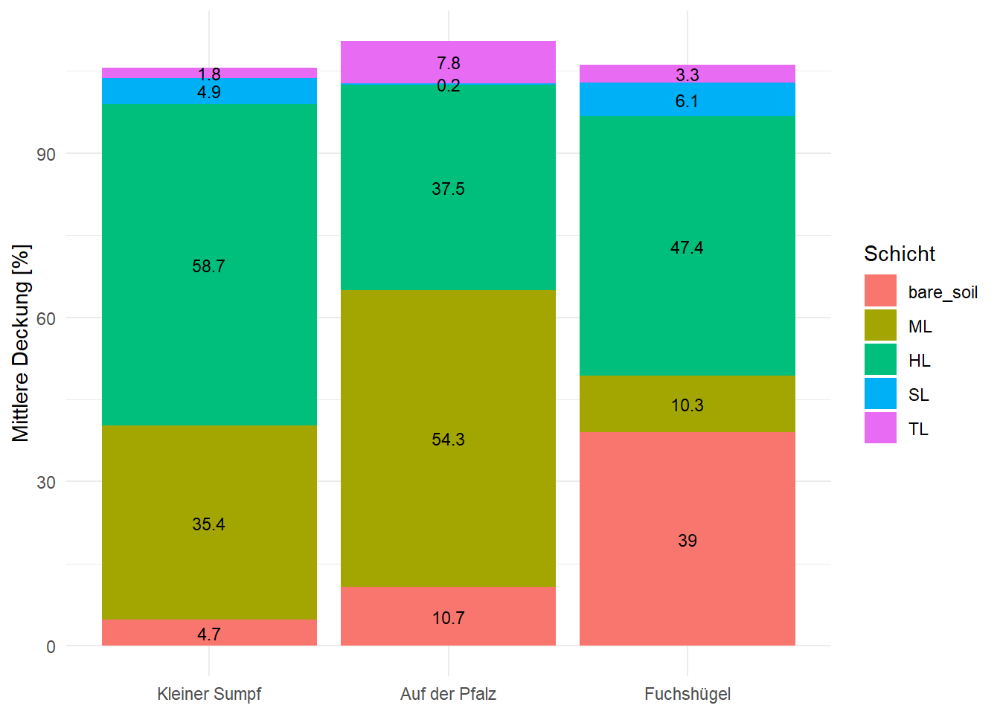
#Export der Daten für die Tree layer für Analyse in Analysis-clean im Ordner Logger
#muss nur einmalig durchgeführt werden
#layer_per_plot <- layer_per_plot %>%
# left_join(
# vegdata %>%
# select(plot.ID, site, arbeitsname, Transekt, Transektnummer),
# by = c("plot.ID", "site", "arbeitsname")
# )
#layer_tree <- layer_per_plot %>%
# select(-SL, -HL, -ML, -water, -bare.soil)
#write.csv(layer_tree, "treelayer.csv")4 Zeigerwerte einlesen und vorbereiten
#|label: import zeigerwerte
# Zeigerwerte von GBIF
zeigerwerte <- read.table("dwca-zeigerwerte-v1.2/ellenberg.txt",sep = "\t", header = TRUE)
zeigerwerte <- zeigerwerte %>%
rename(gbif_name = id)
# Liste meiner Arten, Artnamen für GBIF-Artnamen angepasst
mapping <- read_xlsx("artenliste_mapping.xlsx")
# Tabellen zusammenführen
zeiger_mapped <- zeigerwerte %>%
inner_join(mapping, by = "gbif_name") %>%
select(gbif_name, my_name, light, temperature, continental, wetness, alkalinity, nitrogen, salinity)
# Tabelle aufräumen
zeiger_mapped <- zeiger_mapped %>%
mutate(across(
c(light, temperature, continental, wetness, alkalinity, nitrogen, salinity),
~ str_remove_all(.x, "[~()xX=]") %>%
as.numeric()
))
zeiger_mapped <- zeiger_mapped %>%
rename(Art = my_name)
zeiger_mapped <- zeiger_mapped %>%
select(-gbif_name)#|label: gewichtete zeigerwerte berechnen
#|output: false
combined_long <- left_join(veg_long, zeiger_mapped, by = "Art")
str(combined_long)tibble [20,300 × 19] (S3: tbl_df/tbl/data.frame)
$ Name : chr [1:20300] "MT1" "MT1" "MT1" "MT1" ...
$ plot.ID : int [1:20300] 1 1 1 1 1 1 1 1 1 1 ...
$ site : chr [1:20300] "Meu_trock" "Meu_trock" "Meu_trock" "Meu_trock" ...
$ arbeitsname : chr [1:20300] "WM1" "WM1" "WM1" "WM1" ...
$ Transekt : chr [1:20300] "WO" "WO" "WO" "WO" ...
$ Transektnummer : int [1:20300] -25 -25 -25 -25 -25 -25 -25 -25 -25 -25 ...
$ Art : chr [1:20300] "Pinus_sylvestris" "Betula_pubescens" "Betula" "Callitriche_palustris" ...
$ Schicht : chr [1:20300] "TL" "TL" "HL" "HL" ...
$ Deckung : num [1:20300] 88 0 0 0 0 0 0 0 0 0 ...
$ Wuchsform : Factor w/ 3 levels "","grass","woody": 3 3 3 1 3 2 2 2 2 1 ...
$ Sukzessionszeiger: logi [1:20300] NA NA TRUE NA NA NA ...
$ Moorart : logi [1:20300] NA TRUE TRUE NA TRUE TRUE ...
$ light : num [1:20300] 7 7 NA 6 8 7 8 8 9 7 ...
$ temperature : num [1:20300] NA NA NA NA NA 4 NA NA NA 5 ...
$ continental : num [1:20300] 7 NA NA NA 3 NA 3 3 NA 2 ...
$ wetness : num [1:20300] NA 8 NA 11 NA 9 8 8 10 5 ...
$ alkalinity : num [1:20300] NA 3 NA 5 1 4 3 3 3 3 ...
$ nitrogen : num [1:20300] NA 3 NA 4 1 2 2 2 3 6 ...
$ salinity : num [1:20300] 0 0 NA 0 0 0 0 1 0 0 ...weighted_values <- combined_long %>%
group_by(plot.ID, Name, site, Transekt, Transektnummer) %>%
summarise(
Weighted_light = sum(Deckung * light, na.rm = TRUE) / sum(Deckung, na.rm = TRUE),
Weighted_temperature = sum(Deckung * temperature, na.rm = TRUE) / sum(Deckung, na.rm = TRUE),
Weighted_wetness = sum(Deckung * wetness, na.rm = TRUE) / sum(Deckung, na.rm = TRUE),
Weighted_nitrogen = sum(Deckung * nitrogen, na.rm = TRUE) / sum(Deckung, na.rm = TRUE),
Weighted_continental = sum(Deckung * continental, na.rm = TRUE) / sum(Deckung, na.rm = TRUE),
Weighted_alkalinity = sum(Deckung * alkalinity, na.rm = TRUE) / sum(Deckung, na.rm = TRUE),
Weighted_salinity = sum(Deckung * salinity, na.rm = TRUE) / sum(Deckung, na.rm = TRUE),
.groups = "drop"
)5 Höhendaten einlesen und verarbeiten
#|label: elevation data
#|output: false
#|warning: false
# Einlesen
licMO <- read.csv("../Nele/höhenprofile/Lichtenau/lic_MO.csv", header=F)
licWM <- read.csv("../Nele/höhenprofile/Lichtenau/lic_WM_min.csv", header=F)
licMS <- read.csv("../Nele/höhenprofile/Lichtenau/lic_MS.csv", header=F)
licNM <- read.csv("../Nele/höhenprofile/Lichtenau/lic_NM.csv", header=F)
licMS$V1 <- licMS$V1 + max(licNM$V1)
licNS <- bind_rows(licNM, licMS )
licMO$V1 <- licMO$V1 + max(licWM$V1)
licWO <- bind_rows(licWM, licMO )
MeunassWM <- read.csv("../Nele/höhenprofile/Meu-nass/mn_WM.csv", header=F)
MeunassMO <- read.csv("../Nele/höhenprofile/Meu-nass/mn_MO.csv", header=F)
MeunassMS <- read.csv("../Nele/höhenprofile/Meu-nass/mn_MS.csv", header=F)
MeunassNM <- read.csv("../Nele/höhenprofile/Meu-nass/mn_NM.csv", header=F)
MeunassMS$V1 <- MeunassMS$V1 + max(MeunassNM$V1)
MeunassNS <- bind_rows(MeunassNM, MeunassMS )
MeunassMO$V1 <- MeunassMO$V1 + max(MeunassWM$V1)
MeunassWO <- bind_rows(MeunassWM, MeunassMO )
MeutrockWM <- read.csv("../Nele/höhenprofile/Meu-trock/mt_WM.csv", header=F)
MeutrockMO <- read.csv("../Nele/höhenprofile/Meu-trock/mt_MO.csv", header=F)
MeutrockMS <- read.csv("../Nele/höhenprofile/Meu-trock/mt_MS.csv", header=F)
MeutrockNM <- read.csv("../Nele/höhenprofile/Meu-trock/mt_NM.csv", header=F)
MeutrockMS$V1 <- MeutrockMS$V1 + max(MeutrockNM$V1)
MeutrockNS <- bind_rows(MeutrockNM, MeutrockMS )
MeutrockMO$V1 <- MeutrockMO$V1 + max(MeutrockWM$V1)
MeutrockWO <- bind_rows(MeutrockWM, MeutrockMO )
#Duplikate entfernen
licNS <- licNS %>%
distinct(V1, V2, .keep_all = T)
licWO <- licWO%>%
distinct(V1, V2, keep.all=T)
MeunassNS <- MeunassNS %>%
distinct(V1, V2, .keep_all = T)
MeunassWO <- MeunassWO %>%
distinct(V1, V2, .keep_all = T)
MeutrockNS <- MeutrockNS %>%
distinct(V1, V2, .keep_all = T)
MeutrockWO <- MeutrockWO %>%
distinct(V1, V2, .keep_all = T)
#Generelles Problem: Plotzahl und gemessener Abstand der GPS-Punkte stimmen nicht überein. Höhendaten werden deshalb auf die Plotzahl gestaucht/gestreckt und interpoliert, sodass für jeden Plot ein Höhenwert vorliegt
#Interpolation (Funktion von ChatGPT GPT 5.5)
n_plots <- vegdata %>%
group_by("site", "Transekt")%>%
count(site, Transekt, name = "n_plots")
n_plots# A tibble: 6 × 5
# Groups: "site", "Transekt" [1]
`"site"` `"Transekt"` site Transekt n_plots
<chr> <chr> <chr> <chr> <int>
1 site Transekt Lic NS 62
2 site Transekt Lic WO 67
3 site Transekt Meu_nass NS 45
4 site Transekt Meu_nass WO 64
5 site Transekt Meu_trock NS 59
6 site Transekt Meu_trock WO 53#übernommen von ChatGPT 5.5
interpolate_height <- function(df, site_name, transekt_name, values_col = V2) {
n <- n_plots |>
dplyr::ungroup() |>
dplyr::filter(site == site_name, Transekt == transekt_name) |>
dplyr::pull(n_plots)
werte <- df |> dplyr::pull({{ values_col }})
approx(
x = seq(0, 1, length.out = length(werte)),
y = werte,
xout = seq(0, 1, length.out = n)
)$y
}
licNS_hoehe <- interpolate_height(licNS, "Lic", "NS")
licWO_hoehe<- interpolate_height(licWO, "Lic", "WO")
MeunassNS_hoehe <- interpolate_height(MeunassNS, "Meu_nass", "NS")
MeunassWO_hoehe<- interpolate_height(MeunassWO, "Meu_nass", "WO")
MeutrockNS_hoehe<- interpolate_height(MeutrockNS, "Meu_trock", "NS")
MeutrockWO_hoehe<- interpolate_height(MeutrockWO, "Meu_trock", "WO")
#Überprüfen mit Plot
par(mfrow = c(2, 3))
plot(licNS_hoehe, type ="line")Warning in plot.xy(xy, type, ...): plot type 'line' will be truncated to first
characterplot(licWO_hoehe, type ="line")Warning in plot.xy(xy, type, ...): plot type 'line' will be truncated to first
characterplot(MeunassNS_hoehe, type ="line")Warning in plot.xy(xy, type, ...): plot type 'line' will be truncated to first
characterplot(MeunassWO_hoehe, type ="line")Warning in plot.xy(xy, type, ...): plot type 'line' will be truncated to first
characterplot(MeutrockNS_hoehe, type ="line")Warning in plot.xy(xy, type, ...): plot type 'line' will be truncated to first
characterplot(MeutrockWO_hoehe, type ="line")Warning in plot.xy(xy, type, ...): plot type 'line' will be truncated to first
character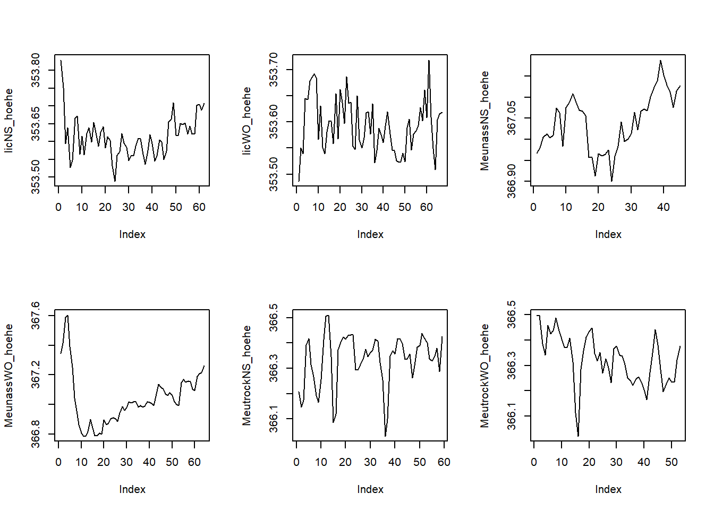
#|label: arbeitsnamen einfügen und überprüfen
#adaptiert nach ChatGPT 5.5
#arbeitsnamen anfügen, da nicht alle vegetationsaufnahmen in der gleichen Richtung erfolgt sind!
#MT_WO ist WM1-26, MO1-27
MT_WO_arbeitsname <- c(paste0("WM", 1:26),paste0("MO", 1:27))
length(MT_WO_arbeitsname);length(MeutrockWO_hoehe)[1] 53[1] 53MeutrockWO_hoehe_df <- data.frame(
arbeitsname = MT_WO_arbeitsname,
Hoehe = MeutrockWO_hoehe,
site = "Meu_trock")
#MT_NS ist NM1-29, SM1-30
MT_NS_arbeitsname <- c(paste0("NM", 1:29),paste0("SM", 30:1))
length(MT_NS_arbeitsname);length(MeutrockNS_hoehe)[1] 59[1] 59MeutrockNS_hoehe_df <- data.frame(
arbeitsname = MT_NS_arbeitsname,
Hoehe = MeutrockNS_hoehe,
site = "Meu_trock")
#MN_WO ist OM 1-32, WM 1-32
MN_WO_arbeitsname <- c(paste0("WM", 1:32),paste0("OM", 32:1))
length(MN_WO_arbeitsname);length(MeunassWO_hoehe)[1] 64[1] 64MeunassWO_hoehe_df <- data.frame(
arbeitsname = MN_WO_arbeitsname,
Hoehe = MeunassWO_hoehe,
site = "Meu_nass")
#MN_NS ist SM1-23, NM 1-22
MN_NS_arbeitsname <- c(paste0("NM",1:22 ),paste0("SM",23:1 ))
length(MN_NS_arbeitsname);length(MeunassNS_hoehe)[1] 45[1] 45MeunassNS_hoehe_df <- data.frame(
arbeitsname = MN_NS_arbeitsname,
Hoehe = MeunassNS_hoehe,
site = "Meu_nass")
#LicWO ist OW 1-67
L_WO_arbeitsname <- c(paste0("OW",67:1 ))
length(L_WO_arbeitsname);length(licWO_hoehe)[1] 67[1] 67licWO_hoehe_df <- data.frame(
arbeitsname = L_WO_arbeitsname,
Hoehe = licWO_hoehe,
site = "Lic")
#LicNS ist SN 1-62
L_NS_arbeitsname <- c(paste0("SN",62:1 ))
length(L_NS_arbeitsname);length(licNS_hoehe)[1] 62[1] 62licNS_hoehe_df <- data.frame(
arbeitsname = L_NS_arbeitsname,
Hoehe = licNS_hoehe,
site = "Lic")
#Zusammenfügen wie in vegdata -> erstmal Reihenfolge nachgucken
vegdata %>%
mutate(zeile = row_number()) %>%
group_by(site, Transekt) %>%
summarise(
erste_Zeile = min(zeile),
letzte_Zeile = max(zeile),
n = n(),
.groups = "drop"
) %>%
arrange(erste_Zeile)# A tibble: 6 × 5
site Transekt erste_Zeile letzte_Zeile n
<chr> <chr> <int> <int> <int>
1 Meu_trock WO 1 53 53
2 Meu_trock NS 54 112 59
3 Meu_nass WO 113 221 64
4 Meu_nass NS 145 189 45
5 Lic WO 222 288 67
6 Lic NS 289 350 62hoehe <- bind_rows(MeutrockWO_hoehe_df, MeutrockNS_hoehe_df,MeunassWO_hoehe_df,MeunassNS_hoehe_df,licWO_hoehe_df,licNS_hoehe_df)
str(hoehe)'data.frame': 350 obs. of 3 variables:
$ arbeitsname: chr "WM1" "WM2" "WM3" "WM4" ...
$ Hoehe : num 366 366 366 366 366 ...
$ site : chr "Meu_trock" "Meu_trock" "Meu_trock" "Meu_trock" ...vegdata <- vegdata %>%
left_join(
hoehe,
by = c("site", "arbeitsname"))
#überprüfen mit Plot
vegdata <- vegdata %>%
relocate(Hoehe, .after = Transektnummer)
ggplot(vegdata,
aes(x = Transektnummer,
y = Hoehe,
group = 1)) +
geom_line() +
geom_point() +
facet_wrap(~ site + Transekt,
scales = "free") +
theme_bw()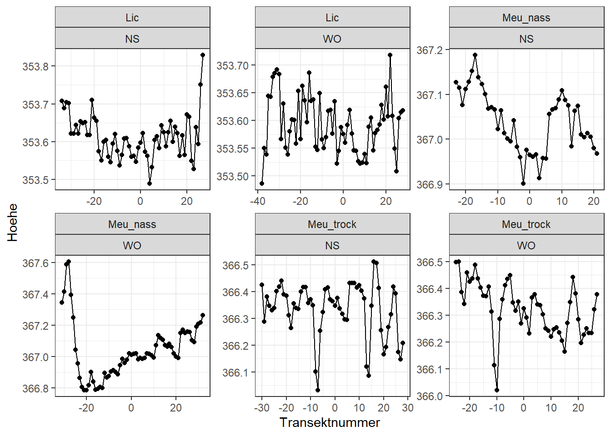
6 Diversitätsmaße berechnen
#|label: species richness, Shannon Index, relative Häufigkeit und species evenness bestimmen
#|output: false
#anlegen einer Vegetationsmatrix
comm_matrix <- veg_long %>%
group_by(plot.ID, Art) %>%
summarise(Deckung = sum(Deckung), .groups = "drop") %>%
pivot_wider(
names_from = Art,
values_from = Deckung,
values_fill = 0
) %>%
tibble::column_to_rownames("plot.ID")
str(comm_matrix)'data.frame': 350 obs. of 53 variables:
$ Betula : num 0 0 0 0 0 0 0.5 0.1 0.5 0 ...
$ Betula_pendula : num 0 0 38 0 0 0 0 0 0 0 ...
$ Betula_pubescens : num 0 0 0 0 0 0 0 0 0 0 ...
$ Callitriche_palustris : num 0 0 0 0 0 0 0 0 0 0 ...
$ Calluna_vulgaris : num 0 0 0 0 0 0 0 0 0 0 ...
$ Campylopus_flexuosus : num 0 0 0 0 0 0 0 0 0 0 ...
$ Campylopus_pyriformis : num 0 0 0 0 0.1 0 0 0 0 0 ...
$ Carex_canescens : num 0 0 0 0 0 0 0 0 0 0 ...
$ Carex_echinata : num 0 0 0 0 0 0 0 0 0 0 ...
$ Carex_nigra : num 0 0 0 0 0 0 0 0 0 0 ...
$ Carex_rostrata : num 0 0 0 0 0 0 0 0 0 0 ...
$ Dicranella_cerviculata : num 0 0 0 0 0 0 0 0 0 0 ...
$ Dicranodontium_denudatum : num 0 0 0 0 0 0 0 0 0 0 ...
$ Dicranum_flagellare : num 0 0 0 0 0 0 0 0 0 0 ...
$ Dicranum_scoparium : num 0 0 0 0 0 0 0 0 0 0 ...
$ Digitalis_purpurea : num 0 0 0 0 0 0 0 0 0 0 ...
$ Dryopteris_carthusiana : num 0 0 0 0 0 0 4.5 4.5 0 0 ...
$ Eriophorum_angustifolium : num 0 0 0 0 0 0 0 0 0 0 ...
$ Fagus_sylvatica : num 0 0 0 0 0 0 0 0 0 0 ...
$ Frangula_alnus : num 0 0 0 0.1 0 0 0.1 0 0 0 ...
$ Fuscocephaloziopsis_connivens: num 0 0 0 0 0 0 0 0 0 0 ...
$ Holcus_lanatus : num 0 0 0 0 0 0 0 0 0 0 ...
$ Hypnum_cupressiforme : num 0 0 0.5 0.1 0.1 0 0 0 0 0 ...
$ Hypnum_jutlandicum : num 0 0 0 0 0 0 0 0 0 0 ...
$ Juncus_effusus : num 0 0 0 0 0 0 0 0 0 0 ...
$ Lepidozia_reptans : num 0 0 0 0 0 0 0 0 0 0 ...
$ Leucobryum_glaucum : num 0 0 0 0 0 0 0 0 0 0 ...
$ Lophocolea_heterophylla : num 0 0 0 0 0 0 0 0 0 0 ...
$ Lycopus_europaeus : num 0 0 0 0 0 0 0 0 0 0 ...
$ Mnium_hornum : num 0 0 0 0 0 0 0 0 0 0 ...
$ Molinia_caerulea : num 38 38 18 0 38 18 18 38 63 18 ...
$ Picea_abies : num 18 0 0 0 0 0 0 0 0 0 ...
$ Pinus_sylvestris : num 88 88 38 38.1 42.5 18.1 4.5 9 9 5 ...
$ Pohlia_nutans : num 0 0 0 0 0 0 0 0 0 0 ...
$ Polytrichum_formosum : num 4.5 4.5 18 18 18 4.5 4.5 4.5 4.5 0.5 ...
$ Pteridium_aquilinum : num 0 18 0.5 18 4.5 4.5 4.5 0 0 0 ...
$ Quercus_robur : num 0 0 0 0 0 0 0 0 0 0 ...
$ Riccardia_latifrons : num 0 0 0 0 0 0 0 0 0 0 ...
$ Rubus_caesius : num 0 0 0 0 0 0.5 0 0 4.5 0 ...
$ Salix_aurita : num 0 0 0 0 0 0 0 0 0 0 ...
$ Scrophularia_nodosa : num 0 0 0 0 0 0 0 0 0 0 ...
$ Sphagnum_auriculatum : num 0 0 0 0 0 0 0 0 0 0 ...
$ Sphagnum_capillifolium : num 0 0 0 0 0 0 0 0 0 0 ...
$ Sphagnum_cuspidatum : num 0 0 0 0 0 0 0 0 0 0 ...
$ Sphagnum_fallax : num 0 0 0 0 0 0 0 0 0 0 ...
$ Sphagnum_fimbriatum : num 0 0 0 0 0 0 0 0 0 0 ...
$ Sphagnum_girgensohnii : num 0 0 0 0 0 0 0 0 0 0 ...
$ Sphagnum_russowii : num 0 0 0 0 0 0 0 0 0 0 ...
$ Sphagnum_squarrosum : num 0 0 0 0 0 0 0 0 0 0 ...
$ Tetraphis_pellucida : num 0 0 0 0 0.1 0 0 0 0 0 ...
$ Typha_latifolia : num 0 0 0 0 0 0 0 0 0 0 ...
$ Vaccinium_myrtillus : num 0 0.5 4.5 4.5 0.5 0 0.5 0 0 0.1 ...
$ Vaccinium_oxycoccos : num 0 0 0 0 0 0 0 0 0 0 ...#berechnen von species richness, shannon Index, relativer Häufigkeit und Evenness
species_richness <- specnumber(comm_matrix)
shannon_index <- diversity(comm_matrix, index = "shannon")
relative_freq <- decostand(comm_matrix, method = "total")
species_evenness <- shannon_index / log(specnumber(comm_matrix))
# Ergebnisse in ein Dataframe packen
results <- data.frame(
Plot = rownames(comm_matrix),
Richness = species_richness,
Shannon = shannon_index,
Evenness = species_evenness)
str(results)'data.frame': 350 obs. of 4 variables:
$ Plot : chr "1" "2" "3" "4" ...
$ Richness: int 4 5 7 6 8 5 8 5 5 4 ...
$ Shannon : num 1.02 1.04 1.48 1.21 1.22 ...
$ Evenness: num 0.736 0.646 0.759 0.673 0.586 ...#|label: Zusammenführen mit gewichteten Zeigerwerten
results$Plot <- as.integer(results$Plot)
#Höhendaten vorbereiten
hoeheID <- vegdata %>%
select(plot.ID, Hoehe)
merged_data <- results %>%
left_join(weighted_values, by = c("Plot" = "plot.ID")) %>%
left_join(hoeheID, by = c("Plot" = "plot.ID")) %>%
left_join(layer_per_plot %>% select(-Name, -site, -arbeitsname),
by = c("Plot" = "plot.ID"))
#Zusammenführen mit Attributen
attribute_deckung <- veg_long %>%
group_by(Name, site) %>%
summarise(
Sukzessionszeiger = sum(
Deckung[Sukzessionszeiger %in% TRUE],
na.rm = T),
Moorart = sum(Deckung[Moorart %in% T],na.rm=T),
woody = sum(Deckung[Wuchsform %in% "woody"],na.rm=T),
grass = sum(Deckung[Wuchsform %in% "grass"], na.rm =T),
.groups = "drop"
)
merged_data <- merged_data %>%
left_join(
attribute_deckung,
by = c("Name", "site")
)
str(merged_data)'data.frame': 350 obs. of 26 variables:
$ Plot : int 1 2 3 4 5 6 7 8 9 10 ...
$ Richness : int 4 5 7 6 8 5 8 5 5 4 ...
$ Shannon : num 1.02 1.04 1.48 1.21 1.22 ...
$ Evenness : num 0.736 0.646 0.759 0.673 0.586 ...
$ Name : chr "MT1" "MT2" "MT3" "MT4" ...
$ site : chr "Meu_trock" "Meu_trock" "Meu_trock" "Meu_trock" ...
$ Transekt : chr "WO" "WO" "WO" "WO" ...
$ Transektnummer : int -25 -24 -23 -22 -21 -20 -19 -18 -17 -16 ...
$ Weighted_light : num 6.76 6.87 6.91 6.65 6.94 ...
$ Weighted_temperature: num 0.455 0.695 0.481 1.835 0.744 ...
$ Weighted_wetness : num 1.94 2.54 1.88 2.3 3.66 ...
$ Weighted_nitrogen : num 0.512 0.883 0.434 0.857 0.877 ...
$ Weighted_continental: num 5.79 5.43 3.71 5.51 5 ...
$ Weighted_alkalinity : num 0.0606 0.4295 0.4128 1.2665 0.4933 ...
$ Weighted_salinity : num 0 0 0 0 0 0 0 0 0 0 ...
$ Hoehe : num 366 366 366 366 366 ...
$ TL : int 100 80 40 30 30 15 10 5 5 0 ...
$ SL : int 25 0 30 0 5 0 0 5 5 5 ...
$ HL : int 45 60 30 30 60 35 25 50 70 40 ...
$ ML : int 5 5 15 20 15 5 5 5 5 1 ...
$ water : int 0 0 0 0 0 0 0 0 0 0 ...
$ bare.soil : int 50 35 25 50 20 60 70 40 20 55 ...
$ Sukzessionszeiger : num 0 18 38.5 18.1 4.5 5 5.1 0.1 5 0 ...
$ Moorart : num 38 38.5 22.5 4.5 38.5 18 19 38.1 63.5 18.1 ...
$ woody : num 106 88.5 80.5 42.7 43 18.1 5.6 9.1 9.5 5.1 ...
$ grass : num 38 38 18 0 38 18 18 38 63 18 ...Summary Diversitätsmaße berechnen
#|label: summary pro Standort
summary_area <- merged_data%>%
group_by(site)%>%
summarize(
richness_mean = mean(Richness),
richness_min = min(Richness),
richness_max = max(Richness),
richness_range = richness_max-richness_min,
shannon_mean = mean(Shannon),
shannon_min = min(Shannon),
shannon_max =max(Shannon),
shannon_range = shannon_max-shannon_min,
evenness_mean = mean (Evenness, na.rm=T),
evenness_min = min(Evenness, na.rm=T),
evenness_max = max(Evenness, na.rm=T),
evenness_range = evenness_max-evenness_min,
.groups = "drop"
)
summary_area# A tibble: 3 × 13
site richness_mean richness_min richness_max richness_range shannon_mean
<chr> <dbl> <int> <int> <int> <dbl>
1 Lic 3.64 1 13 12 0.666
2 Meu_nass 4.06 1 12 11 0.844
3 Meu_trock 5.57 2 11 9 0.842
# ℹ 7 more variables: shannon_min <dbl>, shannon_max <dbl>,
# shannon_range <dbl>, evenness_mean <dbl>, evenness_min <dbl>,
# evenness_max <dbl>, evenness_range <dbl>7 DCA
DCA wird durchgeführt für
alle Flächen,
Einzelflächen und Einzelfächen mit:
nur Moose
nur Gefäßpflanzen
!Achtung! Wegen der gleichen Objektbenennung (dca, env) muss jeweils das gesamte Codechunk ausgeführt werden, um die korrekte DCA auszugeben und darzustellen
Alle DCA-Codechunks wurden adaptiert nach ChatGPT 5.5
7.1 Alle Flächen
#|label: dca all areas
dca <- decorana(comm_matrix)
summary(dca)
Call:
decorana(veg = comm_matrix)
Detrended correspondence analysis with 26 segments.
Rescaling of axes with 4 iterations.
Total inertia (scaled Chi-square): 9.0253
DCA1 DCA2 DCA3 DCA4
Eigenvalues 0.8079 0.4715 0.5611 0.3906
Additive Eigenvalues 0.8079 0.4619 0.5552 0.3222
Decorana values 0.8280 0.5859 0.4814 0.4498
Axis lengths 6.2479 3.8075 3.7414 2.6325Species scores:
DCA1 DCA2 DCA3 DCA4 Totals
Betula 1.42226 0.29053 -0.26700 0.14733 169.3
Betula_pendula 2.80566 -1.03822 1.14941 -0.70917 510.5
Betula_pubescens 1.27832 0.32713 1.01579 0.30251 13.5
Callitriche_palustris 1.42189 -0.22028 1.84687 -0.89575 0.2
Calluna_vulgaris 0.19993 0.16636 -0.23484 0.06579 1.0
Campylopus_flexuosus 1.24547 0.19952 1.88312 2.95337 1.5
Campylopus_pyriformis -0.47835 -1.12970 1.49844 -0.95581 96.5
Carex_canescens -0.47045 -1.18876 0.42536 2.65887 61.7
Carex_echinata -0.68124 -1.18027 0.16713 -0.02198 0.6
Carex_nigra 0.97252 0.37705 -1.06678 0.17812 0.6
Carex_rostrata -3.17410 0.19197 0.44006 -0.02680 1163.0
Dicranella_cerviculata 1.89512 0.18552 1.47985 1.09074 0.8
Dicranodontium_denudatum 1.60458 0.60721 -1.70346 1.12303 1.0
Dicranum_flagellare 1.61825 0.75288 1.47336 2.87772 2.7
Dicranum_scoparium 0.59796 0.15600 -0.37528 0.13340 17.9
Digitalis_purpurea -0.57732 -0.21239 2.18993 2.98273 1.0
Dryopteris_carthusiana 1.41952 0.67896 -1.51244 0.04925 200.9
Eriophorum_angustifolium -0.65323 2.48907 0.00242 0.11444 454.5
Fagus_sylvatica 3.02750 1.95830 -0.44904 0.20899 0.5
Frangula_alnus 2.21595 0.38520 -1.77268 0.40295 833.9
Fuscocephaloziopsis_connivens -0.66971 -1.59778 -0.60294 0.22246 0.2
Holcus_lanatus 0.45524 0.30308 -0.62890 0.14425 4.0
Hypnum_cupressiforme 1.11250 -0.21519 1.16102 -0.14477 458.5
Hypnum_jutlandicum 0.36402 1.75687 -0.06477 0.59446 39.8
Juncus_effusus -1.33731 -0.94048 1.02806 0.03809 1486.2
Lepidozia_reptans 1.24824 0.52222 -1.58772 -0.04610 0.1
Leucobryum_glaucum 2.62766 -0.24478 -1.89610 0.07048 5.5
Lophocolea_heterophylla 0.76617 0.41213 -1.23572 0.19980 0.6
Lycopus_europaeus -1.28635 -1.39160 1.24655 0.43867 6.1
Mnium_hornum 1.52482 0.10511 1.27263 -0.76568 1.5
Molinia_caerulea 0.35080 0.10384 -0.69017 0.08464 10665.2
Picea_abies 1.34210 0.29045 2.16395 -1.74925 18.0
Pinus_sylvestris 1.10827 0.07778 2.00643 -1.02319 1472.8
Pohlia_nutans 0.71721 -0.19243 -1.13868 0.32542 3.4
Polytrichum_formosum 1.74235 0.58729 -0.35788 -0.07128 1018.2
Pteridium_aquilinum 2.74428 1.75140 1.06916 0.12849 547.6
Quercus_robur 0.78401 0.40901 -0.22262 0.19128 9.5
Riccardia_latifrons -0.26271 -1.23340 -0.81712 0.21440 0.1
Rubus_caesius -0.82236 -1.10219 0.51671 0.24826 16.0
Salix_aurita -0.78400 3.22670 0.13970 0.13559 68.0
Scrophularia_nodosa -1.68081 -2.13849 0.87107 0.32457 0.5
Sphagnum_auriculatum 3.06050 -1.76141 -0.76894 -0.44265 43.0
Sphagnum_capillifolium -0.10796 -2.61752 -2.02584 0.53906 9.5
Sphagnum_cuspidatum -2.28234 0.12967 0.43308 0.05773 4040.6
Sphagnum_fallax -0.69118 -0.53931 0.02264 0.00874 5004.0
Sphagnum_fimbriatum 3.26053 -0.43217 0.24859 0.10920 261.1
Sphagnum_girgensohnii 1.42141 -0.57971 2.63201 3.06846 18.5
Sphagnum_russowii 2.15358 -0.44130 -2.11289 -0.23973 608.5
Sphagnum_squarrosum -1.80612 -2.17240 0.93761 0.31499 4.5
Tetraphis_pellucida -0.71244 0.15368 0.80189 1.12897 8.8
Typha_latifolia -1.67860 -2.12208 0.87261 0.33538 4.6
Vaccinium_myrtillus 2.46041 -0.01871 1.42570 0.19165 1393.6
Vaccinium_oxycoccos 0.88673 -0.11266 -1.95686 -0.27497 9.5
Site scores:
DCA1 DCA2 DCA3 DCA4 Totals
1 9.62e-01 1.26e-01 1.26e+00 -7.99e-01 148.5
2 1.14e+00 3.02e-01 1.13e+00 -5.69e-01 149.0
3 1.70e+00 -1.99e-01 9.24e-01 -5.51e-01 117.5
4 1.71e+00 5.71e-01 1.21e+00 -4.70e-01 78.8
5 1.02e+00 2.46e-01 5.63e-01 -3.94e-01 103.8
6 1.01e+00 2.91e-01 6.00e-01 -3.64e-01 45.6
7 1.08e+00 4.31e-01 -1.78e-01 -6.45e-02 37.1
8 6.72e-01 1.85e-01 -2.96e-01 -1.08e-01 56.1
9 4.53e-01 6.22e-02 -3.05e-01 -3.69e-02 81.5
10 5.50e-01 1.08e-01 -1.03e-01 -1.53e-01 23.6
11 5.15e-01 1.62e-01 -6.67e-01 6.89e-02 43.2
12 6.90e-01 1.20e-01 -5.93e-01 9.88e-02 52.2
13 2.34e+00 1.47e+00 7.68e-01 1.20e-01 106.3
14 3.55e-01 1.04e-01 -6.75e-01 7.85e-02 18.1
15 3.67e-01 1.06e-01 -6.94e-01 8.67e-02 18.2
16 1.30e+00 4.18e-01 -4.43e-01 -1.19e-02 60.7
17 1.07e+00 3.28e-01 -3.76e-01 -4.04e-02 85.0
18 1.07e+00 3.41e-01 -4.94e-01 8.14e-03 81.0
19 6.00e-01 1.41e-01 -5.05e-01 -2.95e-03 85.5
20 3.65e-01 1.02e-01 -6.83e-01 8.40e-02 89.2
21 4.60e-01 1.34e-01 -6.32e-01 6.52e-02 69.0
22 1.74e+00 -3.54e-01 2.96e-01 -2.84e-01 197.0
23 8.07e-01 2.57e-01 -5.55e-01 2.59e-02 57.1
24 7.09e-01 1.43e-01 -4.50e-01 7.29e-02 48.5
25 1.77e+00 2.71e-01 1.26e-01 7.85e-02 104.2
26 1.58e+00 3.96e-01 -1.10e+00 1.59e-01 98.2
27 7.86e-01 3.11e-01 -9.11e-01 6.37e-02 61.2
28 1.52e+00 2.83e-01 -1.36e+00 2.80e-01 102.1
29 1.77e+00 3.55e-01 -1.46e+00 2.96e-01 91.7
30 1.97e+00 3.78e-01 -1.53e+00 3.39e-01 78.1
31 1.85e+00 5.06e-01 -8.19e-01 8.76e-02 28.0
32 1.42e+00 4.22e-01 -6.26e-02 -1.90e-01 27.7
33 1.29e+00 2.48e-01 -1.23e+00 2.43e-01 77.0
34 3.80e-01 1.07e-01 -6.43e-01 6.81e-02 39.2
35 5.57e-01 1.48e-01 -4.00e-01 -3.64e-02 47.0
36 1.03e+00 3.01e-01 -5.39e-01 1.13e-02 36.6
37 1.07e+00 2.99e-01 -2.26e-01 -1.15e-01 41.0
38 1.89e+00 4.66e-01 -1.16e-03 -1.87e-02 22.5
39 9.23e-01 2.65e-01 -6.13e-01 5.07e-02 62.4
40 6.88e-01 2.36e-01 -5.80e-01 5.30e-02 24.6
41 1.39e+00 3.99e-01 -3.31e-01 -1.47e-03 61.7
42 1.30e+00 4.50e-01 -5.42e-01 -1.57e-02 60.6
43 5.09e-01 1.61e-01 -6.65e-01 6.79e-02 43.0
44 4.85e-01 1.69e-01 -7.57e-01 7.92e-02 5.2
45 3.51e-01 1.06e-01 -6.89e-01 8.54e-02 63.1
46 3.53e-01 1.17e-01 -6.85e-01 8.87e-02 63.6
47 4.93e-01 9.88e-02 -5.48e-01 9.23e-02 67.7
48 5.72e-01 1.44e-01 -7.92e-01 1.18e-01 43.6
49 3.66e-01 1.11e-01 -6.88e-01 8.48e-02 63.8
50 5.16e-01 1.58e-01 -6.46e-01 8.46e-02 73.1
51 4.90e-01 1.39e-01 -7.51e-01 1.08e-01 69.0
52 5.65e-01 1.58e-01 -7.85e-01 1.24e-01 43.7
53 5.02e-01 1.74e-01 -6.42e-01 7.68e-02 43.2
54 1.48e+00 5.93e-01 8.44e-01 -2.35e-01 58.5
55 2.56e+00 1.03e+00 1.22e+00 1.02e-01 106.5
56 2.57e+00 1.53e+00 9.71e-01 1.30e-01 72.6
57 2.47e+00 1.55e+00 8.63e-01 1.22e-01 43.3
58 2.57e+00 1.60e+00 9.09e-01 1.27e-01 98.1
59 1.18e+00 6.06e-01 -1.51e-01 9.03e-02 65.0
60 6.43e-01 2.04e-01 -8.59e-01 1.17e-01 48.2
61 4.27e-01 1.39e-01 -6.64e-01 7.91e-02 93.7
62 5.90e-01 1.68e-01 -6.20e-01 7.64e-02 47.1
63 5.16e-01 1.43e-01 -7.24e-01 9.35e-02 98.3
64 4.58e-01 1.31e-01 -7.23e-01 9.67e-02 95.0
65 1.98e+00 3.63e-01 -1.21e+00 2.57e-01 90.1
66 7.88e-01 1.96e-01 -2.09e-01 -1.01e-01 29.1
67 1.62e+00 3.80e-01 -6.07e-02 -6.65e-02 37.0
68 1.27e+00 1.73e-01 7.88e-01 -7.41e-02 19.9
69 1.21e+00 1.14e-01 1.54e+00 -7.50e-01 6.0
70 4.15e-01 1.15e-01 -6.62e-01 7.42e-02 40.1
71 3.74e-01 2.80e-01 -6.37e-01 1.42e-01 43.0
72 9.89e-01 6.82e-02 -5.15e-02 1.16e-01 126.7
73 1.51e+00 2.18e-01 1.38e-01 5.95e-02 115.5
74 1.57e+00 3.21e-01 -1.77e-03 2.34e-02 75.7
75 1.42e+00 3.47e-01 -1.87e-01 -7.32e-02 65.5
76 1.08e+00 3.50e-01 -5.37e-01 5.15e-03 86.1
77 1.74e+00 1.73e-01 4.02e-01 6.17e-02 87.5
78 1.87e+00 1.32e-01 7.93e-01 1.70e-01 95.0
79 5.28e-01 1.23e-01 -3.81e-01 -4.68e-02 5.6
80 6.45e-01 2.15e-01 -6.81e-01 8.06e-02 52.6
81 5.62e-01 1.76e-01 -6.77e-01 6.99e-02 77.0
82 1.53e+00 4.32e-01 -1.27e+00 2.79e-01 70.5
83 9.63e-01 8.59e-02 4.15e-01 1.13e-01 14.3
84 5.59e-01 1.42e-01 -3.13e-01 1.36e-01 23.2
85 5.72e-01 2.22e-01 -6.19e-01 8.12e-02 102.8
86 1.01e+00 3.51e-01 -8.11e-01 3.60e-02 45.5
87 1.24e+00 -2.77e-02 9.38e-02 -2.61e-02 55.1
88 1.67e+00 2.43e-01 -1.08e+00 2.64e-01 70.6
89 1.53e+00 2.07e-01 -2.89e-01 1.09e-01 95.0
90 8.63e-01 2.53e-02 1.43e-01 -3.64e-02 42.9
91 4.51e-01 7.68e-02 -4.96e-01 5.96e-02 43.1
92 3.83e-01 1.08e-01 -7.04e-01 8.90e-02 64.2
93 1.33e+00 6.02e-01 -2.73e-01 7.78e-02 79.5
94 6.94e-01 3.20e-01 -5.71e-01 1.26e-01 48.6
95 1.87e+00 9.32e-01 -7.39e-02 1.45e-01 147.0
96 1.65e+00 7.44e-01 -9.44e-02 1.68e-02 75.0
97 1.15e+00 4.21e-01 -4.13e-01 3.08e-02 82.0
98 1.36e+00 3.55e-01 -8.34e-01 2.96e-01 15.6
99 1.11e+00 4.11e-01 -6.60e-01 1.58e-01 16.1
100 1.94e+00 6.65e-02 1.10e+00 2.84e-01 6.6
101 2.00e+00 2.76e-01 4.55e-01 6.01e-02 81.1
102 4.80e-01 1.64e-01 -6.89e-01 8.07e-02 101.6
103 1.18e+00 4.29e-01 -7.65e-01 1.13e-02 14.3
104 1.12e+00 2.99e-01 -3.42e-01 9.73e-03 10.1
105 4.47e-01 1.36e-01 -6.65e-01 7.44e-02 67.6
106 3.54e-01 1.04e-01 -6.91e-01 8.51e-02 88.2
107 7.73e-01 9.85e-02 -3.94e-01 1.15e-01 111.2
108 1.22e+00 2.87e-01 -8.93e-01 1.47e-01 93.0
109 7.53e-01 1.62e-01 -5.10e-01 8.50e-02 53.5
110 6.65e-01 2.11e-01 -6.65e-01 6.84e-02 52.1
111 6.32e-01 1.94e-01 -4.97e-01 -2.89e-02 51.5
112 7.78e-01 2.12e-01 -6.07e-01 1.05e-02 57.0
113 8.63e-01 -7.47e-02 7.97e-01 -2.49e-01 150.5
114 6.74e-01 3.73e-02 6.44e-01 -4.07e-01 86.0
115 3.92e-01 1.81e-02 -2.24e-01 -3.08e-02 51.7
116 4.31e-01 7.01e-02 -4.94e-01 6.04e-02 42.5
117 -5.02e-01 -4.25e-01 -9.76e-02 2.02e-02 106.6
118 -5.10e-01 -4.28e-01 -9.77e-02 2.15e-02 106.3
119 -5.14e-01 -4.30e-01 -9.84e-02 2.16e-02 106.0
120 -5.89e-01 -3.60e-01 -1.07e-01 2.23e-02 86.0
121 -1.35e+00 -2.96e-01 1.73e-01 1.54e-02 108.0
122 -2.00e-01 -1.16e-01 -2.92e-01 4.54e-02 115.0
123 -1.47e+00 -2.06e-01 2.33e-01 3.30e-02 89.5
124 -2.03e+00 -1.28e-01 4.63e-01 3.42e-02 117.0
125 -1.21e+00 -5.33e-01 3.67e-01 1.54e-02 123.5
126 -8.97e-01 -2.83e-01 -6.80e-03 2.90e-02 104.0
127 -6.81e-01 -1.32e-01 -1.59e-01 4.48e-02 99.0
128 -8.06e-01 -5.00e-01 3.90e-02 7.43e-03 93.0
129 -7.86e-01 -5.85e-01 1.98e-01 1.87e-02 86.0
130 6.04e-01 -1.39e-01 2.78e-01 -7.62e-02 85.5
131 -8.43e-01 -6.34e-01 2.91e-01 1.99e-02 130.5
132 -1.01e+00 -7.40e-01 5.25e-01 2.34e-02 126.0
133 -2.17e+00 4.97e-02 4.42e-01 5.41e-02 97.5
134 -2.07e+00 -7.07e-02 5.13e-01 5.22e-02 111.0
135 -1.96e+00 -2.03e-01 5.92e-01 5.00e-02 131.0
136 -2.00e+00 -1.93e-01 6.10e-01 5.13e-02 127.0
137 -1.93e+00 -2.47e-01 5.45e-01 3.47e-02 137.0
138 -2.45e+00 8.92e-02 4.41e-01 3.16e-02 135.0
139 -1.87e+00 -2.90e-01 4.81e-01 1.94e-02 152.0
140 -2.46e+00 1.37e-01 4.31e-01 3.92e-02 82.0
141 -2.22e+00 -3.49e-02 5.03e-01 4.14e-02 128.5
142 -2.48e+00 7.43e-02 4.43e-01 3.76e-02 110.5
143 -2.41e+00 3.02e-02 4.42e-01 1.29e-01 114.5
144 -1.96e+00 -1.98e-01 4.71e-01 2.78e-02 92.0
145 1.69e+00 7.86e-02 1.73e+00 -4.88e-01 160.0
146 1.71e+00 2.47e-02 1.19e+00 -4.81e-01 128.0
147 2.21e+00 -1.56e-01 1.45e-01 -1.20e-02 110.5
148 2.10e+00 -1.69e-02 9.38e-01 1.55e-01 111.0
149 2.61e-01 -1.05e-01 -2.18e-01 5.51e-02 65.0
150 5.51e-02 -4.25e-01 3.29e-01 1.66e-01 94.5
151 2.40e+00 -2.94e-02 1.40e+00 1.75e-01 93.0
152 1.72e+00 -1.02e-01 1.08e+00 8.19e-02 65.7
153 -1.27e+00 -1.72e-01 1.31e-01 3.93e-02 40.7
154 -1.29e+00 -5.39e-01 5.67e-01 3.59e-02 79.2
155 -1.36e+00 -3.27e-01 3.41e-01 4.43e-02 99.5
156 -1.43e+00 -4.49e-01 5.02e-01 4.77e-02 114.5
157 -1.33e+00 -4.56e-01 4.50e-01 1.32e-01 123.1
158 -1.62e+00 -4.37e-01 5.81e-01 1.52e-01 103.0
159 -1.01e+00 -5.48e-01 2.70e-01 1.44e-02 90.5
160 -1.46e+00 -3.74e-01 4.13e-01 3.42e-02 164.5
161 -1.49e+00 -2.05e-01 2.28e-01 3.32e-02 126.0
162 -1.69e+00 -2.30e-01 3.94e-01 3.67e-02 123.5
163 -1.50e+00 -4.26e-01 4.93e-01 3.25e-02 118.5
164 -1.36e+00 -4.45e-01 4.11e-01 2.84e-02 143.5
165 -1.21e+00 -5.39e-01 4.07e-01 2.36e-02 123.5
166 -1.73e+00 -2.59e-01 3.91e-01 2.44e-02 112.0
167 -1.63e+00 -3.83e-01 4.14e-01 1.29e-02 157.0
168 1.00e+00 8.25e-02 1.69e+00 -8.81e-01 44.1
169 5.85e-01 8.46e-02 1.88e-01 -2.78e-01 56.5
170 4.29e-01 5.99e-02 1.10e+00 -5.77e-01 148.5
171 -3.71e-01 -2.43e-01 1.32e+00 -4.40e-01 193.5
172 -1.94e-01 -6.30e-02 1.41e+00 -4.92e-01 153.0
173 2.24e-01 3.32e-03 1.65e+00 -7.49e-01 51.5
174 -3.03e+00 1.94e-01 4.17e-01 -2.08e-02 18.7
175 -2.07e+00 -1.84e-01 6.11e-01 4.56e-02 60.5
176 -1.36e+00 6.84e-02 7.77e-02 6.99e-02 111.0
177 -2.28e+00 8.29e-02 4.61e-01 5.29e-02 97.0
178 -1.02e+00 4.83e-02 -1.73e-04 2.30e-02 87.0
179 -3.93e-01 -3.58e-01 3.81e-01 -3.17e-01 99.1
180 -2.25e+00 -1.25e-01 6.56e-01 -1.61e-01 98.6
181 -2.57e+00 1.50e-01 4.35e-01 3.06e-02 56.0
182 -2.43e+00 1.40e-01 4.34e-01 4.34e-02 106.0
183 -2.62e+00 1.53e-01 4.36e-01 2.59e-02 101.0
184 -2.73e+00 1.61e-01 4.37e-01 1.55e-02 76.0
185 -2.62e+00 1.53e-01 4.36e-01 2.59e-02 101.0
186 -2.62e+00 1.53e-01 4.36e-01 2.59e-02 101.0
187 -2.62e+00 1.53e-01 4.36e-01 2.59e-02 101.0
188 -2.84e+00 1.69e-01 4.37e-01 5.00e-03 101.0
189 -2.39e+00 9.62e-02 4.58e-01 4.32e-02 110.5
190 1.49e+00 4.15e-02 1.81e+00 -6.52e-01 135.7
191 1.53e+00 2.25e-02 1.62e+00 -5.81e-01 137.5
192 8.48e-01 7.19e-02 7.27e-01 -4.19e-01 86.0
193 4.72e-01 1.27e-01 -3.71e-01 -1.26e-02 47.5
194 4.21e-01 8.78e-02 -4.79e-01 2.26e-02 97.0
195 4.21e-01 8.78e-02 -4.79e-01 2.26e-02 97.0
196 3.88e-01 8.83e-02 -6.00e-01 7.35e-02 92.5
197 -1.62e-01 -2.55e-01 -1.80e-01 3.50e-02 85.2
198 -5.54e-01 -4.12e-01 -7.09e-02 1.57e-01 90.6
199 -3.30e-01 -3.32e-01 -1.83e-01 3.35e-02 106.5
200 -9.76e-01 -5.82e-03 1.42e-02 7.14e-02 41.2
201 -9.45e-01 -9.35e-03 -3.14e-02 2.04e-01 85.6
202 -1.74e+00 -2.12e-01 4.91e-01 5.02e-02 65.5
203 -1.05e+00 -6.01e-01 3.59e-01 1.35e-02 61.0
204 -1.64e+00 -4.51e-01 8.14e-01 8.20e-02 70.6
205 -2.05e+00 -3.86e-01 6.42e-01 7.54e-03 41.0
206 -1.82e+00 -3.21e-01 3.84e-01 -6.70e-06 94.0
207 -2.20e+00 -1.20e-01 3.15e-01 -1.12e-02 105.5
208 -2.27e+00 -1.66e-02 5.20e-01 4.26e-02 124.0
209 -2.42e+00 -1.23e-02 5.25e-01 2.78e-02 119.0
210 -2.51e+00 1.11e-01 4.56e-01 3.24e-02 130.5
211 -2.55e+00 1.44e-01 4.38e-01 3.23e-02 126.5
212 -2.43e+00 1.35e-01 4.37e-01 4.33e-02 106.5
213 -2.43e+00 1.40e-01 4.34e-01 4.34e-02 106.0
214 -2.28e+00 1.30e-01 4.33e-01 5.77e-02 88.0
215 -2.27e+00 -1.66e-02 5.20e-01 4.26e-02 124.0
216 -2.33e+00 1.33e-01 4.33e-01 5.36e-02 92.5
217 -2.33e+00 1.33e-01 4.33e-01 5.36e-02 92.5
218 -2.43e+00 1.40e-01 4.34e-01 4.34e-02 106.0
219 -2.33e+00 1.33e-01 4.33e-01 5.36e-02 92.5
220 -2.34e+00 1.34e-01 4.34e-01 5.21e-02 67.5
221 -2.39e+00 9.62e-02 4.58e-01 4.32e-02 110.5
222 9.65e-01 -1.55e-01 1.69e+00 -8.28e-01 135.8
223 1.23e+00 -1.60e-01 1.01e+00 -5.37e-02 50.4
224 -1.29e+00 -9.89e-01 9.65e-01 6.69e-02 99.5
225 -1.33e+00 -1.01e+00 1.00e+00 6.26e-02 97.5
226 1.28e-01 -4.43e-01 8.03e-01 -1.24e-02 90.1
227 -1.25e+00 -9.34e-01 9.83e-01 1.77e-01 99.1
228 2.05e+00 1.89e-01 -1.44e+00 2.23e-01 104.6
229 -7.23e-01 -8.89e-01 3.68e-01 3.18e-01 56.8
230 2.13e+00 -8.46e-02 -1.04e+00 2.96e-02 155.5
231 -4.85e-01 6.45e-02 -1.97e-01 3.61e-02 106.0
232 -6.72e-01 1.06e-01 2.16e-02 6.65e-02 85.6
233 -1.19e-01 2.05e-01 -4.79e-01 8.15e-02 110.5
234 -1.19e-01 2.05e-01 -4.79e-01 8.15e-02 110.5
235 -6.33e-01 5.79e-01 -1.50e-02 5.01e-02 105.5
236 -6.31e-01 5.78e-01 -1.31e-02 4.90e-02 105.6
237 -7.33e-01 2.80e+00 8.53e-02 1.23e-01 105.5
238 -1.25e-01 2.66e-01 -9.91e-02 1.44e-01 108.5
239 -4.28e-01 3.54e-01 -1.56e-01 5.29e-02 74.0
240 -6.15e-01 9.26e-01 -2.68e-02 6.29e-02 80.5
241 -6.15e-01 9.26e-01 -2.68e-02 6.29e-02 80.5
242 -6.72e-01 5.98e-01 1.16e-02 4.87e-02 101.5
243 -6.72e-01 9.75e-01 1.25e-02 6.16e-02 76.0
244 -6.15e-01 9.26e-01 -2.68e-02 6.29e-02 80.5
245 -6.15e-01 9.26e-01 -2.68e-02 6.29e-02 80.5
246 -1.97e-01 -6.64e-02 -3.15e-01 5.05e-02 80.5
247 -4.12e-02 -1.38e-01 -4.22e-01 5.61e-02 101.0
248 1.74e-01 -5.38e-03 -5.69e-01 7.18e-02 106.0
249 1.74e-01 -5.38e-03 -5.69e-01 7.18e-02 106.0
250 3.07e-01 8.21e-02 -6.54e-01 8.36e-02 96.5
251 3.00e-01 7.26e-02 -6.55e-01 8.09e-02 92.5
252 1.74e-01 -5.38e-03 -5.69e-01 7.18e-02 106.0
253 -5.14e-01 -4.30e-01 -9.84e-02 2.16e-02 106.0
254 1.86e-01 -1.16e-02 -5.42e-01 6.65e-02 107.5
255 3.00e-01 7.26e-02 -6.55e-01 8.09e-02 92.5
256 3.01e-01 7.26e-02 -6.53e-01 7.98e-02 92.6
257 4.48e-01 9.41e-02 -5.82e-01 8.92e-02 93.1
258 1.74e-01 -5.38e-03 -5.69e-01 7.18e-02 106.0
259 1.74e-01 -4.57e-03 -5.68e-01 7.17e-02 106.5
260 1.74e-01 -4.57e-03 -5.68e-01 7.17e-02 106.5
261 1.74e-01 -5.38e-03 -5.69e-01 7.18e-02 106.0
262 -4.12e-02 -1.38e-01 -4.22e-01 5.61e-02 101.0
263 -1.70e-01 -2.18e-01 -3.34e-01 4.67e-02 76.0
264 -4.12e-02 -1.38e-01 -4.22e-01 5.61e-02 101.0
265 -1.70e-01 -2.18e-01 -3.34e-01 4.67e-02 76.0
266 -4.12e-02 -1.38e-01 -4.22e-01 5.61e-02 101.0
267 1.75e-01 -5.30e-03 -5.67e-01 7.07e-02 106.1
268 3.02e-01 7.25e-02 -6.53e-01 8.11e-02 92.6
269 3.15e-01 7.11e-02 -6.51e-01 7.96e-02 93.5
270 2.03e-01 -9.74e-03 -6.26e-01 5.76e-02 110.5
271 -1.27e+00 9.18e-02 1.10e-02 6.53e-02 105.5
272 -9.13e-01 -8.88e-03 -9.96e-02 5.92e-02 94.0
273 2.23e-01 1.05e-01 -6.36e-01 8.33e-02 92.5
274 -1.29e+00 1.20e-01 1.05e-02 6.79e-02 101.0
275 6.55e-02 -1.33e-01 -3.43e-01 6.19e-02 105.5
276 1.27e-01 -3.71e-02 -5.30e-01 6.83e-02 81.5
277 3.04e-01 7.10e-02 -6.46e-01 7.97e-02 93.0
278 1.40e-01 -4.00e-02 -5.10e-01 6.72e-02 82.0
279 -2.99e-01 -2.97e-01 -2.46e-01 3.73e-02 101.0
280 -1.70e-01 -2.18e-01 -3.34e-01 4.67e-02 76.0
281 -1.55e-01 -2.14e-01 -3.43e-01 4.90e-02 76.5
282 -1.70e-01 -2.18e-01 -3.34e-01 4.67e-02 76.0
283 -2.99e-01 -2.97e-01 -2.46e-01 3.73e-02 101.0
284 4.70e-01 -9.72e-02 1.37e-03 2.70e-02 83.5
285 9.56e-01 -2.25e-01 -1.01e+00 -5.06e-02 99.1
286 2.42e+00 -2.90e-01 8.84e-01 -7.68e-02 70.0
287 2.32e+00 -4.49e-01 1.34e+00 -4.45e-01 198.0
288 1.88e+00 1.20e-01 7.84e-01 -1.93e-01 248.0
289 1.15e+00 -3.54e-01 1.61e+00 1.75e+00 39.2
290 1.87e+00 -4.69e-01 -1.65e+00 2.23e-02 87.1
291 2.53e+00 -8.86e-01 5.34e-01 -4.29e-01 180.2
292 3.22e+00 -4.12e-01 3.06e-01 1.13e-01 92.5
293 2.56e+00 -6.44e-01 7.75e-01 -3.24e-01 166.5
294 3.08e+00 -4.75e-01 2.51e-01 2.29e-01 93.1
295 2.33e+00 -1.99e-01 -6.98e-02 1.28e-01 65.0
296 2.40e+00 -6.95e-02 7.15e-01 1.30e-01 111.0
297 2.27e+00 -2.82e-01 -7.81e-01 -7.73e-02 101.1
298 -2.96e-01 -2.97e-01 -2.44e-01 3.75e-02 101.1
299 3.00e-01 7.26e-02 -6.55e-01 8.09e-02 92.5
300 -2.77e-01 -2.93e-01 -2.37e-01 3.86e-02 102.0
301 -1.67e-01 -2.17e-01 -3.31e-01 4.69e-02 76.1
302 1.32e+00 -2.12e-01 -1.29e+00 -1.21e-01 85.1
303 7.74e-01 6.31e-02 -4.10e-01 9.03e-02 111.0
304 6.57e-01 1.13e-02 -9.32e-01 2.96e-02 106.0
305 8.94e-01 -6.06e-02 -1.12e+00 -1.32e-02 126.0
306 1.25e+00 -1.69e-01 -1.40e+00 -7.75e-02 76.0
307 1.03e+00 -1.01e-01 -1.23e+00 -3.74e-02 101.0
308 1.95e+00 -4.51e-01 -1.93e+00 -9.02e-02 97.0
309 1.25e+00 -1.69e-01 -1.40e+00 -7.75e-02 76.0
310 -4.12e-02 -1.38e-01 -4.22e-01 5.61e-02 101.0
311 -2.99e-01 -2.97e-01 -2.46e-01 3.73e-02 101.0
312 -2.92e-01 -2.95e-01 -2.34e-01 3.21e-02 101.5
313 -6.37e-01 -5.07e-01 -1.05e-02 1.26e-02 92.6
314 -5.09e-01 -4.26e-01 -9.91e-02 2.82e-02 107.0
315 1.74e-01 -5.38e-03 -5.69e-01 7.18e-02 106.0
316 -5.14e-01 -4.30e-01 -9.84e-02 2.16e-02 106.0
317 -2.99e-01 -2.97e-01 -2.46e-01 3.73e-02 101.0
318 -1.70e-01 -2.18e-01 -3.34e-01 4.67e-02 76.0
319 -4.12e-02 -1.38e-01 -4.22e-01 5.61e-02 101.0
320 -4.12e-02 -1.38e-01 -4.22e-01 5.61e-02 101.0
321 -1.14e-01 -3.88e-01 -8.41e-02 -8.42e-03 61.5
322 -6.40e-01 -5.08e-01 -1.20e-02 1.24e-02 92.5
323 -2.99e-01 -2.97e-01 -2.46e-01 3.73e-02 101.0
324 -2.99e-01 -2.97e-01 -2.46e-01 3.73e-02 101.0
325 -2.99e-01 -2.97e-01 -2.46e-01 3.73e-02 101.0
326 -2.98e-01 -2.97e-01 -2.46e-01 3.76e-02 101.1
327 -2.99e-01 -2.97e-01 -2.46e-01 3.73e-02 101.0
328 -1.63e-01 -2.20e-01 -3.24e-01 4.73e-02 76.8
329 -4.12e-02 -1.38e-01 -4.22e-01 5.61e-02 101.0
330 1.74e-01 -5.38e-03 -5.69e-01 7.18e-02 106.0
331 3.51e-01 1.04e-01 -6.90e-01 8.46e-02 88.0
332 -3.31e-01 6.85e-01 -2.22e-01 6.93e-02 114.0
333 -3.18e-01 6.77e-01 -2.16e-01 6.59e-02 114.5
334 3.00e-01 7.26e-02 -6.55e-01 8.09e-02 92.5
335 3.00e-01 7.26e-02 -6.55e-01 8.09e-02 92.5
336 3.51e-01 1.04e-01 -6.90e-01 8.46e-02 88.0
337 3.00e-01 7.26e-02 -6.55e-01 8.09e-02 92.5
338 3.00e-01 7.26e-02 -6.55e-01 8.09e-02 92.5
339 3.00e-01 7.26e-02 -6.55e-01 8.09e-02 92.5
340 3.00e-01 7.26e-02 -6.55e-01 8.09e-02 92.5
341 3.00e-01 7.26e-02 -6.55e-01 8.09e-02 92.5
342 1.19e+00 -3.35e-01 2.83e-03 -2.05e-01 105.5
343 6.14e-01 -2.18e-01 -2.22e-01 -7.31e-02 99.7
344 4.57e-01 6.95e-02 -4.71e-01 6.21e-02 43.1
345 3.53e-01 1.04e-01 -6.91e-01 8.50e-02 88.1
346 1.33e+00 2.62e-01 -8.73e-01 1.93e-01 14.1
347 1.82e-01 1.07e-01 -6.16e-01 8.32e-02 67.8
348 1.71e-01 -2.23e-02 -5.22e-01 6.20e-02 23.2
349 2.27e+00 -5.08e-02 2.80e-01 1.74e-01 75.0
350 4.93e-01 7.80e-02 -6.44e-01 8.59e-02 92.6fit <- envfit(dca, merged_data[, c("Weighted_light",
"Weighted_temperature",
"Weighted_wetness",
"Weighted_nitrogen",
"Weighted_alkalinity",
"Hoehe",
"TL",
"SL",
"HL",
"ML"
)],
na.rm=T)
fit
***VECTORS
DCA1 DCA2 r2 Pr(>r)
Weighted_light -0.95886 0.28390 0.8891 0.001 ***
Weighted_temperature -0.74456 -0.66756 0.1546 0.001 ***
Weighted_wetness -0.86353 0.50429 0.5455 0.001 ***
Weighted_nitrogen 0.13362 0.99103 0.0352 0.011 *
Weighted_alkalinity -0.49735 0.86755 0.0281 0.016 *
Hoehe -0.42942 0.90310 0.0679 0.001 ***
TL 0.91866 -0.39505 0.0611 0.001 ***
SL 0.70237 -0.71181 0.1620 0.001 ***
HL 0.62344 0.78187 0.0839 0.001 ***
ML -0.60359 -0.79729 0.4134 0.001 ***
---
Signif. codes: 0 '***' 0.001 '**' 0.01 '*' 0.05 '.' 0.1 ' ' 1
Permutation: free
Number of permutations: 999plot(dca)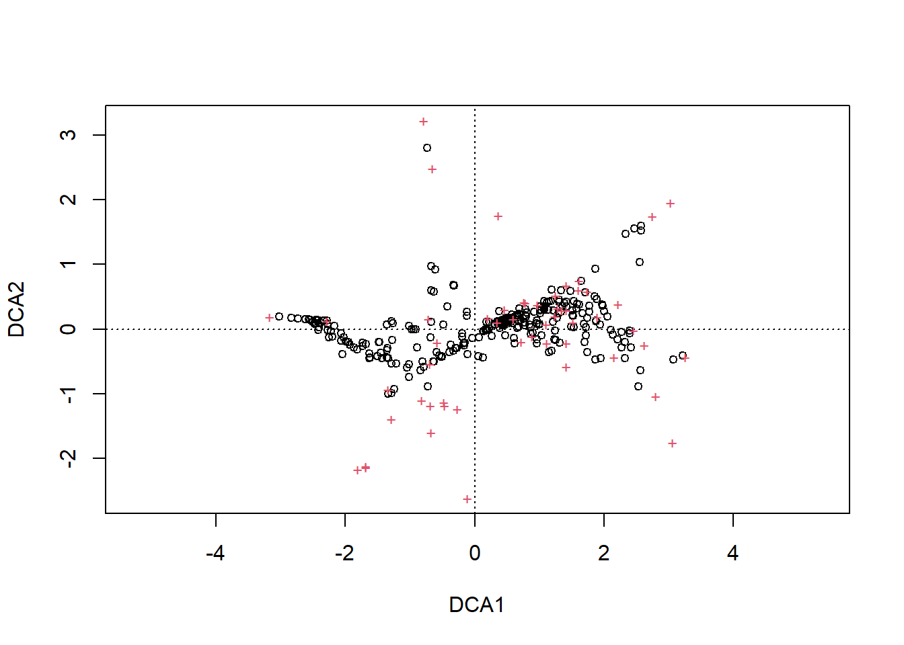
arrows <- as.data.frame(scores(fit, display = "vectors"))
arrows$Variable <- rownames(arrows)
arrows$p_value <- fit$vectors$pvals
arrows$r2 <- fit$vectors$r
arrows$Variable <- c(
"Licht",
"Temperatur",
"Feuchte",
"Stickstoff",
"Basengehalt",
"Höhe",
"Baumschicht",
"Strauchschicht",
"Krautschicht",
"Moosschicht"
)
arrows_sig <- arrows %>%
filter(p_value <= 0.05)
dca_scores <- scores(dca, display = "sites")
dca_df <- as.data.frame(dca_scores)
dca_df$Name <- rownames(dca_df)
dca_df$site <- vegdata$site[match(dca_df$Name, vegdata$plot.ID)]
p1<-ggplot(dca_df, aes(DCA1, DCA2, colour = site)) +
geom_point(size = 2) +
geom_segment(
data = arrows_sig,
aes(
x = 0, y = 0,
xend = DCA1 * 2,
yend = DCA2 * 2
),
inherit.aes = FALSE,
arrow = arrow(length = unit(0.25, "cm")),
colour = "black"
) +
geom_text(
data = arrows,
aes(
x = DCA1 * 2.3,
y = DCA2 * 2.3,
label = Variable
),
inherit.aes = FALSE
)+
scale_colour_manual(
breaks = c("Meu_trock", "Meu_nass", "Lic"),
values = c(
"Meu_trock" = "#D55E00",
"Meu_nass" = "#6495ED",
"Lic" = "#006400"
),
labels = c(
"Lic" = "Kleiner Sumpf",
"Meu_trock" = "Fuchshügel",
"Meu_nass" = "Auf der Pfalz"
)
) +
labs(
title = "DCA der Vegetationsaufnahmen",
x = "DCA1",
y = "DCA2"
) +
theme_minimal() +
theme(
legend.title = element_blank(),
plot.title = element_text(hjust = 0.5)
)
p1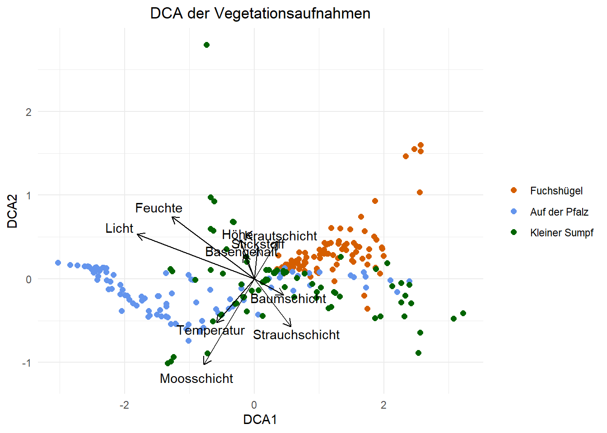
ggsave("DCA-all-areas.png",p1, path ="plots")Saving 7 x 5 in image7.2 Einzelne Flächen
Ersetze jeweils “Meu_nass” durch “Meu_trock” oder “Lic” und die Beschriftung der Abbildung um für alle Flächen zu berechnen. Die Ersetzungen müssen in allen folgenden Codechunks ausgeführt werden (außer Moose Lichtenau). Die betreffenden Stellen sind jeweils
comm <- veg_long %>%
filter(site==“Meu_nass”)
und
env <- merged_data %>%
filter(site == “Meu_nass”)
und in der Beschriftung in ggplot() entspricht
Auf der Pfalz = Meu_nass
Fuchshügel = Meu_trock
Kleiner Sumpf = Lic
labs(
title = “DCA der Vegetation – Auf der Pfalz”
7.2.1 Alle Arten
#|label: dca all species
comm <- veg_long %>%
filter(site=="Meu_nass") %>%
group_by(plot.ID, Art) %>%
summarise(
Deckung = sum(Deckung, na.rm = TRUE),
.groups = "drop"
) %>%
pivot_wider(
names_from = Art,
values_from = Deckung,
values_fill = 0
)%>%
tibble::column_to_rownames("plot.ID")
#entferne leere zeilen &spalten weil decorana damit nciht rechnen kann
comm <- comm[
rowSums(comm) > 0,
colSums(comm) > 0,
drop = FALSE
]
dca <- decorana(comm)
summary(dca)
Call:
decorana(veg = comm)
Detrended correspondence analysis with 26 segments.
Rescaling of axes with 4 iterations.
Total inertia (scaled Chi-square): 3.4591
DCA1 DCA2 DCA3 DCA4
Eigenvalues 0.7488 0.4055 0.3270 0.2025
Additive Eigenvalues 0.7488 0.4122 0.3246 0.2149
Decorana values 0.8188 0.3521 0.1789 0.1148
Axis lengths 5.2742 2.9368 2.4286 2.2022Species scores:
DCA1 DCA2 DCA3 DCA4 Totals
Betula 0.9191 2.7076 -0.6566 1.3609 6.5
Betula_pendula 2.6846 -0.6359 -1.2539 -1.1861 5.0
Campylopus_flexuosus 1.2974 1.3750 -0.1619 1.5683 0.1
Campylopus_pyriformis 0.9060 2.6784 -0.0379 1.7563 66.5
Carex_canescens 0.8219 -0.8074 -0.3265 -0.6207 34.1
Carex_echinata 0.8509 0.7932 -0.1174 1.2327 0.6
Carex_rostrata -2.0151 0.2059 0.8397 1.2571 1163.0
Dicranum_flagellare 2.9983 2.0645 4.7424 2.4344 0.1
Dicranum_scoparium 0.9799 0.3213 1.7185 1.8200 2.1
Digitalis_purpurea -0.4738 -0.8807 -0.2822 -0.7618 0.5
Dryopteris_carthusiana 0.8704 1.9494 -5.3439 1.4412 0.1
Fuscocephaloziopsis_connivens 0.8704 1.9494 -5.3439 1.4412 0.1
Hypnum_cupressiforme 1.7052 1.3955 2.3808 1.1320 175.7
Hypnum_jutlandicum 2.4385 -1.8465 -0.8408 0.5112 0.5
Juncus_effusus 0.0392 -1.0416 0.1653 0.4937 1146.1
Leucobryum_glaucum 2.6548 1.6240 3.5924 -2.4205 1.0
Molinia_caerulea 1.1685 1.3990 -0.8133 0.0274 1190.0
Pinus_sylvestris 2.1377 -1.5495 -1.1907 0.0688 822.1
Pohlia_nutans 0.6538 2.6223 0.3729 2.1060 0.2
Polytrichum_formosum 2.0244 -0.3953 -1.3089 -1.0032 7.4
Pteridium_aquilinum 3.3158 -1.1986 -1.2321 1.3652 9.0
Quercus_robur 1.3488 1.5914 -3.1487 -1.7527 4.5
Sphagnum_cuspidatum -1.1182 0.2577 -0.5389 -0.6693 3755.6
Sphagnum_fallax 0.4689 -0.5363 0.9405 0.1956 2120.0
Sphagnum_russowii 3.8564 -0.7908 -2.4910 3.1821 61.0
Tetraphis_pellucida 0.3060 0.3610 1.8805 2.8067 4.8
Vaccinium_myrtillus 3.3146 0.7467 1.1788 -1.0477 499.1
Site scores:
DCA1 DCA2 DCA3 DCA4 Totals
113 1.721099 0.340582 0.354341 0.214243 150.5
114 1.591162 -0.028542 -0.721182 0.102521 86.0
115 1.237235 0.971558 -0.408973 0.150138 51.7
116 1.225300 1.398636 -0.475057 0.144353 42.5
117 0.595860 -0.209783 0.631829 0.161439 106.6
118 0.590439 -0.205815 0.643514 0.168382 106.3
119 0.587667 -0.207644 0.642703 0.167020 106.0
120 0.494363 -0.091564 0.555092 0.208952 86.0
121 -0.198385 -0.220672 0.571768 0.233758 108.0
122 0.743163 0.673727 -0.032665 0.152845 115.0
123 -0.316274 -0.089957 0.180153 -0.111746 89.5
124 -0.833940 -0.072315 0.009131 -0.060978 117.0
125 0.000106 -0.513079 0.623400 0.435885 123.5
126 0.205730 -0.034221 0.372833 0.064137 104.0
127 0.343799 0.385366 -0.017580 0.015960 99.0
128 0.352437 -0.489961 0.926206 0.246040 93.0
129 0.401094 -0.536466 0.685911 0.255341 86.0
130 1.365090 1.364244 0.765204 0.603874 85.5
131 0.367866 -0.616692 0.654313 0.276579 130.5
132 0.254013 -0.788947 0.552920 0.344623 126.0
133 -0.996092 0.160821 -0.431061 -0.565865 97.5
134 -0.870183 0.014578 -0.358527 -0.437003 111.0
135 -0.731352 -0.146673 -0.278549 -0.294917 131.0
136 -0.769154 -0.134402 -0.316945 -0.310365 127.0
137 -0.706480 -0.213819 0.031933 0.019992 137.0
138 -1.279149 0.173341 -0.078068 -0.059488 135.0
139 -0.656306 -0.278575 0.351659 0.319249 152.0
140 -1.294044 0.245364 -0.233668 -0.235126 82.0
141 -1.026105 0.040633 -0.195343 -0.206290 128.5
142 -1.306066 0.149817 0.025072 0.075948 110.5
143 -1.231728 0.116376 0.012792 0.051609 114.5
144 -0.756708 -0.161993 0.158056 0.104338 92.0
145 2.622077 -0.552687 -0.158408 -0.304465 160.0
146 2.754995 -0.645268 -0.545993 0.258101 128.0
147 3.358325 0.153947 -0.255378 0.506020 110.5
148 2.981323 0.793072 0.712430 -0.692059 111.0
149 1.160473 0.817680 0.031447 0.076013 65.0
150 1.119918 -0.120667 0.910648 -0.043523 94.5
151 3.233217 0.782812 1.249970 -0.949605 93.0
152 2.530854 0.870976 1.333938 -0.248361 65.7
153 -0.149722 0.030753 0.090995 -0.207858 40.7
154 -0.046366 -0.477235 0.136263 0.136710 79.2
155 -0.173167 -0.243397 0.138878 -0.093162 99.5
156 -0.204557 -0.441989 0.186917 0.003279 114.5
157 -0.113846 -0.387167 0.132375 -0.015490 123.1
158 -0.368268 -0.409212 0.048957 -0.002832 103.0
159 0.187807 -0.549731 0.715714 0.269817 90.5
160 -0.245742 -0.346680 0.194546 -0.063581 164.5
161 -0.324643 -0.139289 0.200798 -0.236880 126.0
162 -0.493845 -0.177862 0.069169 -0.163510 123.5
163 -0.272175 -0.415534 0.213686 0.054120 118.5
164 -0.143074 -0.436570 0.340311 0.078765 143.5
165 0.014834 -0.549002 0.482696 0.199916 123.5
166 -0.537855 -0.228830 0.297780 0.120631 112.0
167 -0.418304 -0.387926 0.558875 0.425492 157.0
168 2.023319 -1.170696 -1.094648 0.100761 44.1
169 1.474918 0.470974 -0.926637 0.055877 56.5
170 1.431424 -0.560570 -0.974013 -0.018404 148.5
171 0.792510 -0.960682 -0.612422 0.061198 193.5
172 0.921313 -0.967462 -0.784144 -0.049887 153.0
173 1.306955 -1.193846 -0.837839 0.145244 51.5
174 -1.915831 0.273678 0.797033 1.252576 18.7
175 -0.840544 -0.132727 -0.226846 -0.180034 60.5
176 -0.306935 0.599749 -0.545178 -0.294427 111.0
177 -1.106075 0.195019 -0.442288 -0.526016 97.0
178 -0.006459 0.880868 -0.570514 -0.113191 87.0
179 0.643378 1.742932 -0.441698 0.632015 99.1
180 -1.039686 0.622747 0.116926 0.571805 98.6
181 -1.406457 0.241048 -0.095785 -0.050130 56.0
182 -1.270465 0.248903 -0.304809 -0.342211 106.0
183 -1.455618 0.238208 -0.020224 0.055455 101.0
184 -1.566626 0.231797 0.150399 0.293875 76.0
185 -1.455618 0.238208 -0.020224 0.055455 101.0
186 -1.455618 0.238208 -0.020224 0.055455 101.0
187 -1.455618 0.238208 -0.020224 0.055455 101.0
188 -1.677634 0.225385 0.321021 0.532295 101.0
189 -1.217132 0.196348 -0.285663 -0.308171 110.5
190 2.451982 -0.806624 -0.406662 -0.208106 135.7
191 2.431265 -0.654380 -0.412542 -0.282482 137.5
192 1.747718 0.034277 -0.713736 0.041475 86.0
193 1.283024 1.137864 -1.036640 -0.125699 47.5
194 1.238331 1.262057 -0.682584 0.080557 97.0
195 1.238331 1.262057 -0.682584 0.080557 97.0
196 1.194579 1.398837 -0.657865 0.081130 92.5
197 0.826058 0.402035 0.191858 0.187529 85.2
198 0.546039 -0.129724 0.449041 0.080165 90.6
199 0.712529 0.138668 0.266732 0.146547 106.5
200 0.051326 0.625791 -0.540423 -0.209895 41.2
201 0.078705 0.646775 -0.592818 -0.282920 85.6
202 -0.540832 -0.075897 -0.252067 -0.227742 65.5
203 0.168959 -0.614809 0.716139 0.369524 61.0
204 -0.421111 -0.357188 0.547693 0.818883 70.6
205 -0.804075 -0.421845 0.565422 0.812286 41.0
206 -0.617573 -0.333018 0.751324 0.681782 94.0
207 -1.032777 -0.114640 0.847255 0.842183 105.5
208 -1.080358 0.061569 -0.236563 -0.220874 124.0
209 -1.229517 0.044622 0.007843 0.121739 119.0
210 -1.339426 0.197811 -0.113192 -0.068284 130.5
211 -1.383017 0.237002 -0.121998 -0.086053 126.5
212 -1.264317 0.242844 -0.302602 -0.338287 106.5
213 -1.270465 0.248903 -0.304809 -0.342211 106.0
214 -1.118154 0.257700 -0.538916 -0.669341 88.0
215 -1.080358 0.061569 -0.236563 -0.220874 124.0
216 -1.161789 0.255180 -0.471847 -0.575623 92.5
217 -1.161789 0.255180 -0.471847 -0.575623 92.5
218 -1.270465 0.248903 -0.304809 -0.342211 106.0
219 -1.161789 0.255180 -0.471847 -0.575623 92.5
220 -1.177950 0.254246 -0.447007 -0.540912 67.5
221 -1.217132 0.196348 -0.285663 -0.308171 110.5env <- merged_data %>%
filter(site == "Meu_nass")
fit <- envfit(dca, env[, c("Weighted_light",
"Weighted_temperature",
"Weighted_wetness",
"Weighted_nitrogen",
"Weighted_alkalinity",
"Hoehe",
"TL",
"ML",
"HL",
"SL")])
fit
***VECTORS
DCA1 DCA2 r2 Pr(>r)
Weighted_light -0.99266 -0.12096 0.9329 0.001 ***
Weighted_temperature -0.59500 -0.80372 0.5819 0.001 ***
Weighted_wetness -0.91963 0.39278 0.8605 0.001 ***
Weighted_nitrogen 0.65535 0.75533 0.0514 0.090 .
Weighted_alkalinity -0.42969 -0.90297 0.2430 0.001 ***
Hoehe 0.89669 0.44266 0.3490 0.001 ***
TL 0.51577 -0.85673 0.4904 0.001 ***
ML -0.96409 -0.26558 0.4701 0.001 ***
HL 0.90917 0.41642 0.2075 0.001 ***
SL 0.55032 -0.83495 0.1333 0.003 **
---
Signif. codes: 0 '***' 0.001 '**' 0.01 '*' 0.05 '.' 0.1 ' ' 1
Permutation: free
Number of permutations: 999plot(dca)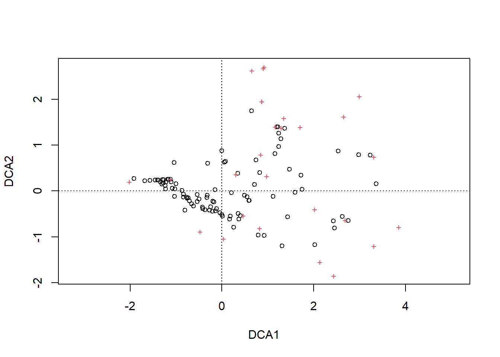
arrows <-as.data.frame(scores(fit, display = "vectors"))
arrows$Variable <- rownames(arrows)
arrows$p_value <- fit$vectors$pvals
arrows$r2 <- fit$vectors$r
arrows$Variable <- c(
"Licht",
"Temperatur",
"Feuchte",
"Stickstoff",
"Basengehalt",
"Höhe",
"Baumschicht",
"Moosschicht",
"Krautschicht",
"Strauchschicht"
)
# nur Umweltvariablen mit signifikanten p-Werten anzeigen
arrows_sig <- arrows %>%
filter(p_value <= 0.05)
#DCA scores
dca_scores <- scores(dca, display = "sites")
dca_df <- as.data.frame(dca_scores)
dca_df$Name <- rownames(dca_df)
dca_df$site <- vegdata$site[match(dca_df$Name, vegdata$plot.ID)]
dca_df$Transektnummer <- vegdata$Transektnummer[match(dca_df$Name, vegdata$plot.ID)]
dca_df$Distanz <- abs(dca_df$Transektnummer)
dca_df$Transekt <- vegdata$Transekt[
match(dca_df$Name, vegdata$plot.ID)
]
#species scores
species_df <- as.data.frame(scores(dca, display = "species", choices = c(1, 2)))
species_df$Art <- rownames(species_df)
species_totals <- colSums(comm, na.rm = TRUE)
species_df <- species_df %>%
filter(Art %in% names(species_totals[species_totals > 0]))
################################################################################
#PLOT
p2<-ggplot() +
# --------------------------------------------------
# NS-Transekt: Süden blau, Mitte weiß, Norden rot
# --------------------------------------------------
geom_point(
data = dca_df %>%
filter(Transekt == "NS"),
aes(
x = DCA1,
y = DCA2,
fill = Transektnummer,
shape = Transekt
),
size = 4,
stroke = 0.7,
colour = "black"
) +
scale_fill_gradient2(
low = "#2166AC",
mid = "white",
high = "#B2182B",
midpoint = 0,
breaks = c(
min(dca_df$Transektnummer[dca_df$Transekt == "NS"],
na.rm = TRUE),
0,
max(dca_df$Transektnummer[dca_df$Transekt == "NS"],
na.rm = TRUE)
),
labels = c("Süden", "Mitte", "Norden"),
name = "NS-Transekt"
) +
# Neue unabhängige Füllfarbenskala
ggnewscale::new_scale_fill() +
# --------------------------------------------------
# WO-Transekt: Westen grün, Mitte weiß, Osten gelb
# --------------------------------------------------
geom_point(
data = dca_df %>%
filter(Transekt == "WO"),
aes(
x = DCA1,
y = DCA2,
fill = Transektnummer,
shape = Transekt
),
size = 4,
stroke = 0.7,
colour = "black"
) +
scale_fill_gradient2(
low = "#1B7837",
mid = "white",
high = "#FFD92F",
midpoint = 0,
breaks = c(
min(dca_df$Transektnummer[dca_df$Transekt == "WO"],
na.rm = TRUE),
0,
max(dca_df$Transektnummer[dca_df$Transekt == "WO"],
na.rm = TRUE)
),
labels = c("Westen", "Mitte", "Osten"),
name = "WO-Transekt"
) +
scale_shape_manual(
name = "Transekt",
values = c(NS = 21, WO = 22),
labels = c(NS = "Nord–Süd", WO = "West–Ost")
)+
# --------------------------------------------------
# Signifikante envfit-Pfeile
# --------------------------------------------------
geom_segment(
data = arrows_sig,
aes(
x = 0,
y = 0,
xend = DCA1*2 ,
yend = DCA2 *2
),
inherit.aes = FALSE,
arrow = arrow(
length = unit(0.25, "cm"),
type = "closed"
),
linewidth = 0.7,
colour = "black"
) +
geom_text_repel(
data = arrows_sig,
aes(
x = DCA1 *2,
y = DCA2 *2,
label = Variable
),
inherit.aes = FALSE,
size = 3.5,
fontface = "bold",
colour = "black",
box.padding = 0.5,
point.padding = 0.2,
segment.colour = "grey50",
max.overlaps = Inf,
seed = 321
) +
# --------------------------------------------------
# Arten
# --------------------------------------------------
geom_point(
data = species_df,
aes(x = DCA1, y = DCA2),
shape = 17,
size = 2.5,
colour = "grey30"
) +
geom_text_repel(
data = species_df,
aes(
x = DCA1,
y = DCA2,
label = Art
),
size = 3.5,
colour = "grey30",
box.padding = 0.5,
point.padding = 0.3,
segment.colour = "grey70",
max.overlaps = Inf,
seed = 123
) +
# --------------------------------------------------
# Beschriftungen von Achsen, Titel usw
# --------------------------------------------------
labs(
title = "DCA der Vegetation – Auf der Pfalz",
subtitle = "Aufnahmeflächen, Arten und signifikante Umweltvektoren",
x = "DCA1",
y = "DCA2"
) +
coord_equal() +
theme_minimal() +
theme(
plot.title = element_text(
hjust = 0.5,
face = "bold"
),
plot.subtitle = element_text(hjust = 0.5),
panel.grid.minor = element_blank(),
legend.position = "right"
)
p2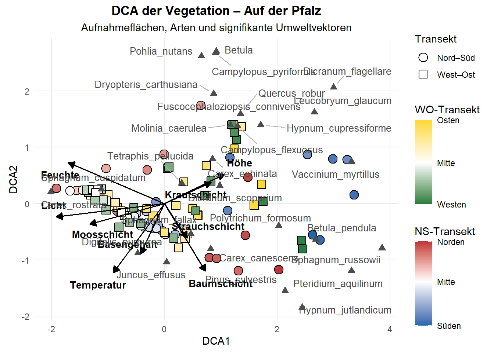
ggsave( "DCA-Meu-nass.png",p2, path="plots",width = 12, height = 10, dpi = 300)7.2.2 Moose
a) Meusebach nass und Meusebach trocken
!Achtung! Bei Fläche “Lic” ist für die Moose ein anderes Codechunk auszuführen
#|label: dca moss
# nur für Meu_nass und Meu_trock
comm <- veg_long %>%
filter(site=="Meu_trock"&Schicht =="ML") %>%
group_by(plot.ID, Art) %>%
summarise(
Deckung = sum(Deckung, na.rm = TRUE),
.groups = "drop"
) %>%
pivot_wider(
names_from = Art,
values_from = Deckung,
values_fill = 0
)%>%
tibble::column_to_rownames("plot.ID")
#entferne leere zeilen &spalten weil decorana damit nciht rechnen kann
comm <- comm[
rowSums(comm) > 0,
colSums(comm) > 0,
drop = FALSE
]
dca <- decorana(comm)
summary(dca)
Call:
decorana(veg = comm)
Detrended correspondence analysis with 26 segments.
Rescaling of axes with 4 iterations.
Total inertia (scaled Chi-square): 2.7851
DCA1 DCA2 DCA3 DCA4
Eigenvalues 0.6886 0.3492 0.29741 0.40266
Additive Eigenvalues 0.6886 0.3022 0.28893 0.11812
Decorana values 0.7104 0.3076 0.09861 0.05989
Axis lengths 3.2365 2.8783 2.33767 2.88449Species scores:
DCA1 DCA2 DCA3 DCA4 Totals
Campylopus_flexuosus 0.99280 1.50017 1.43691 -3.12884 0.9
Campylopus_pyriformis -0.42463 -0.52853 2.50997 -1.53112 10.7
Dicranella_cerviculata 0.15357 2.89245 -0.06578 1.32116 0.8
Dicranodontium_denudatum 0.32960 1.72829 1.56910 1.91799 1.0
Dicranum_flagellare -0.01494 1.77036 0.73059 1.68698 2.1
Dicranum_scoparium 0.26186 -1.86427 1.30048 -0.21502 10.8
Hypnum_cupressiforme 1.67628 -0.33704 -0.31573 -1.00667 96.5
Hypnum_jutlandicum -1.56026 0.66626 -1.49465 0.45033 21.0
Lepidozia_reptans -0.53130 0.21616 -1.64309 0.93477 0.1
Lophocolea_heterophylla -1.86239 -0.11490 0.91780 1.72761 0.6
Mnium_hornum 2.02842 1.08553 1.70611 4.17686 1.0
Pohlia_nutans 1.13915 1.74845 1.40144 2.92601 2.6
Polytrichum_formosum -0.13531 0.02305 0.00868 0.08663 993.5
Sphagnum_capillifolium -0.53698 -0.00108 -1.08618 0.00819 0.5
Sphagnum_fimbriatum 0.89019 -3.52944 -3.57308 -1.54245 0.1
Tetraphis_pellucida 0.66498 2.14502 0.95545 1.16815 3.3
Site scores:
DCA1 DCA2 DCA3 DCA4 Totals
1 -1.35e-01 2.31e-02 8.68e-03 8.66e-02 4.5
2 -1.35e-01 2.31e-02 8.68e-03 8.66e-02 4.5
3 -8.63e-02 1.33e-02 -9.07e-05 5.71e-02 18.5
4 -1.25e-01 2.11e-02 6.88e-03 8.06e-02 18.1
5 -1.23e-01 2.97e-02 2.57e-02 7.77e-02 18.3
6 -1.35e-01 2.31e-02 8.68e-03 8.66e-02 4.5
7 -1.35e-01 2.31e-02 8.68e-03 8.66e-02 4.5
8 -1.35e-01 2.31e-02 8.68e-03 8.66e-02 4.5
9 -1.35e-01 2.31e-02 8.68e-03 8.66e-02 4.5
10 -1.35e-01 2.31e-02 8.68e-03 8.66e-02 0.5
11 -1.35e-01 2.31e-02 8.68e-03 8.66e-02 4.5
12 1.68e+00 -3.37e-01 -3.16e-01 -1.01e+00 4.5
16 -1.36e-01 2.16e-02 1.52e-02 8.24e-02 38.1
17 -1.35e-01 2.31e-02 8.68e-03 8.66e-02 38.0
18 -1.35e-01 2.31e-02 8.68e-03 8.66e-02 38.0
19 -1.93e-01 -8.73e-02 5.09e-01 -2.37e-01 22.5
20 1.17e+00 -5.83e-01 3.19e-01 -9.68e-01 0.7
21 4.59e-02 -1.30e-02 -2.38e-02 -2.27e-02 5.0
22 2.27e-01 -4.90e-02 -5.62e-02 -1.32e-01 22.5
23 -1.25e-01 2.11e-02 6.88e-03 8.06e-02 18.1
24 -1.35e-01 2.31e-02 8.68e-03 8.66e-02 4.5
25 -1.12e-01 1.21e-02 1.43e-02 6.75e-02 38.7
26 2.22e-01 -6.11e-02 -7.80e-02 -1.36e-01 22.7
27 -1.35e-01 2.31e-02 8.68e-03 8.66e-02 4.5
28 -1.35e-01 2.31e-02 8.68e-03 8.66e-02 0.5
29 -1.66e-01 3.70e-02 -2.40e-02 9.45e-02 4.6
30 -2.22e-02 -8.37e-01 5.41e-01 -3.71e-02 9.5
31 -1.25e-01 -2.80e-02 4.36e-02 7.85e-02 18.5
32 -1.35e-01 2.31e-02 8.68e-03 8.66e-02 18.0
33 -1.35e-01 2.31e-02 8.68e-03 8.66e-02 0.5
34 -1.35e-01 2.31e-02 8.68e-03 8.66e-02 0.1
35 -1.35e-01 2.31e-02 8.68e-03 8.66e-02 4.5
36 -1.48e-01 1.94e-02 -7.31e-03 7.58e-02 18.6
37 -1.35e-01 2.31e-02 8.68e-03 8.66e-02 18.0
38 -1.35e-01 2.31e-02 8.68e-03 8.66e-02 18.0
39 -1.46e-01 3.29e-02 8.56e-03 1.09e-01 18.3
40 -2.78e-01 8.74e-02 -1.42e-01 1.23e-01 5.0
41 -1.39e-01 2.47e-02 4.73e-03 8.76e-02 38.1
42 -1.35e-01 2.31e-02 8.68e-03 8.66e-02 38.0
43 -1.35e-01 2.31e-02 8.68e-03 8.66e-02 4.5
44 6.33e-02 -9.21e-01 6.55e-01 -6.42e-02 0.2
45 -1.56e+00 6.66e-01 -1.49e+00 4.50e-01 0.1
46 -1.56e+00 6.66e-01 -1.49e+00 4.50e-01 0.5
47 -8.48e-01 3.45e-01 -7.43e-01 2.68e-01 0.2
48 -3.73e-01 1.30e-01 -2.42e-01 1.47e-01 0.6
49 -3.73e-01 1.30e-01 -2.42e-01 1.47e-01 0.6
50 -2.67e-01 4.91e-02 -1.13e-01 1.16e-01 5.1
51 -8.48e-01 3.45e-01 -7.43e-01 2.68e-01 1.0
52 -7.57e-01 5.76e-01 -6.81e-01 3.64e-01 1.1
53 -2.69e-01 1.42e-01 -1.40e-01 1.46e-01 5.1
56 -1.35e-01 2.31e-02 8.68e-03 8.66e-02 0.1
57 -1.35e-01 2.31e-02 8.68e-03 8.66e-02 0.1
58 -1.35e-01 2.31e-02 8.68e-03 8.66e-02 0.5
59 -1.35e-01 2.31e-02 8.68e-03 8.66e-02 4.5
60 -1.32e+00 5.59e-01 -1.24e+00 3.90e-01 0.6
61 -2.78e-01 8.74e-02 -1.42e-01 1.23e-01 5.0
62 -1.35e-01 2.31e-02 8.68e-03 8.66e-02 4.5
63 -1.57e-01 -3.42e-03 4.18e-03 8.80e-02 4.7
64 -1.19e+00 1.91e-01 -1.89e-01 7.55e-01 1.5
65 -1.66e-01 3.70e-02 -2.40e-02 9.45e-02 4.6
66 -1.66e-01 3.70e-02 -2.40e-02 9.45e-02 4.6
67 -1.74e-01 4.04e-02 -3.20e-02 9.65e-02 18.5
68 -1.74e-01 1.25e+00 -4.36e-02 1.52e+00 1.2
69 -1.35e-01 2.31e-02 8.68e-03 8.66e-02 0.5
70 7.71e-02 3.11e-01 2.41e-01 5.60e-01 0.6
71 -1.56e+00 6.66e-01 -1.49e+00 4.50e-01 4.5
72 -1.35e-01 2.31e-02 8.68e-03 8.66e-02 0.1
73 -1.39e-01 1.59e-02 4.12e-02 6.56e-02 38.5
74 -1.35e-01 1.67e-02 1.86e-02 8.16e-02 38.2
75 -1.25e-01 -2.10e-01 3.72e-01 -9.71e-02 47.0
76 -1.39e-01 1.59e-02 4.12e-02 6.56e-02 38.5
77 -1.35e-01 2.31e-02 8.68e-03 8.66e-02 18.0
78 -8.48e-01 3.45e-01 -7.43e-01 2.68e-01 9.0
79 -1.84e-01 -6.89e-02 4.26e-01 -1.83e-01 0.6
80 -2.78e-01 8.74e-02 -1.42e-01 1.23e-01 5.0
81 -1.35e-01 2.31e-02 8.68e-03 8.66e-02 4.5
82 -8.48e-01 3.45e-01 -7.43e-01 2.68e-01 9.0
83 1.63e+00 -3.30e-01 -2.44e-01 -1.03e+00 4.7
84 1.56e+00 -3.08e-02 -2.36e-02 -1.36e+00 0.6
85 7.95e-02 2.14e-02 4.73e-02 -6.25e-02 5.3
86 7.70e-01 -1.57e-01 -1.54e-01 -4.60e-01 9.0
87 1.63e+00 -3.27e-01 -3.07e-01 -9.77e-01 18.5
88 1.66e+00 -1.81e-02 2.42e-02 -1.78e-01 5.5
89 1.31e+00 -2.65e-01 -2.51e-01 -7.88e-01 22.5
90 1.30e+00 -2.28e-01 -1.43e-01 -5.95e-01 24.0
91 1.50e+00 -3.01e-01 -2.83e-01 -8.97e-01 5.0
92 7.70e-01 -1.57e-01 -1.54e-01 -4.60e-01 0.2
93 -8.63e-02 1.33e-02 -9.07e-05 5.71e-02 18.5
94 3.25e-01 1.96e+00 8.43e-01 1.43e+00 1.0
95 -1.11e-01 1.25e-01 5.26e-02 1.57e-01 19.0
96 -1.12e-01 1.84e-02 4.46e-03 7.24e-02 38.5
97 -1.11e-01 4.08e-02 1.38e-02 9.31e-02 39.0
98 6.93e-02 5.85e-01 3.64e-01 6.52e-01 6.5
99 1.47e-01 5.64e-01 4.19e-01 2.82e-01 6.5
100 2.28e-01 1.69e+00 2.99e-01 8.59e-01 1.5
101 -1.35e-01 2.31e-02 8.68e-03 8.66e-02 38.0
102 -9.59e-02 1.52e-02 1.62e-03 6.29e-02 4.6
103 4.59e-02 -1.30e-02 -2.38e-02 -2.27e-02 5.0
104 4.59e-02 -1.30e-02 -2.38e-02 -2.27e-02 5.0
105 -1.35e-01 2.31e-02 8.68e-03 8.66e-02 4.5
107 2.65e-01 1.08e+00 4.82e-01 6.27e-01 0.2
108 7.65e-01 -3.58e-02 -9.52e-02 -3.74e-01 9.5
109 7.70e-01 -1.57e-01 -1.54e-01 -4.60e-01 1.0
110 -1.11e-01 5.52e-02 3.97e-02 1.67e-02 4.6
111 -1.35e-01 2.31e-02 8.68e-03 8.66e-02 4.5
112 -1.35e-01 2.31e-02 8.68e-03 8.66e-02 4.5env_vars <- c(
"Weighted_light",
"Weighted_temperature",
"Weighted_wetness",
"Weighted_nitrogen",
"Weighted_alkalinity",
"Hoehe",
"TL",
"ML",
"HL",
"SL"
)
env <- merged_data %>%
filter(
site == "Meu_trock",
as.character(Plot) %in% rownames(comm)
) %>%
select(
plot.ID = Plot,
dplyr::all_of(env_vars)
) %>%
mutate(plot.ID = as.character(plot.ID)) %>%
distinct()
fit <- envfit(dca, env[, c("Weighted_light",
"Weighted_temperature",
"Weighted_wetness",
"Weighted_nitrogen",
"Weighted_alkalinity",
"Hoehe",
"TL",
"ML",
"HL",
"SL")])
fit
***VECTORS
DCA1 DCA2 r2 Pr(>r)
Weighted_light -0.82107 0.57083 0.1434 0.004 **
Weighted_temperature -0.44520 -0.89543 0.0580 0.083 .
Weighted_wetness -0.44924 -0.89341 0.0016 0.933
Weighted_nitrogen 0.21253 0.97715 0.0642 0.062 .
Weighted_alkalinity 0.72966 -0.68381 0.1190 0.006 **
Hoehe 0.27725 -0.96080 0.0332 0.225
TL -0.99399 -0.10944 0.0020 0.799
ML -0.41510 -0.90978 0.0336 0.211
HL -0.66960 -0.74272 0.0516 0.098 .
SL 0.21527 -0.97655 0.0405 0.162
---
Signif. codes: 0 '***' 0.001 '**' 0.01 '*' 0.05 '.' 0.1 ' ' 1
Permutation: free
Number of permutations: 999plot(dca)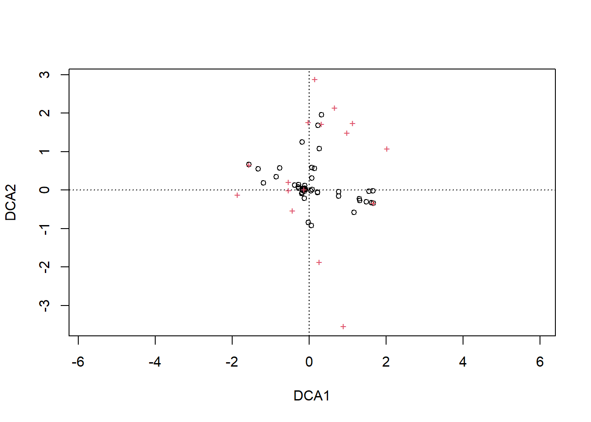
arrows <-as.data.frame(scores(fit, display = "vectors"))
arrows$Variable <- rownames(arrows)
arrows$p_value <- fit$vectors$pvals
arrows$r2 <- fit$vectors$r
arrows$Variable <- c(
"Licht",
"Temperatur",
"Feuchte",
"Stickstoff",
"Basengehalt",
"Höhe",
"Baumschicht",
"Moosschicht",
"Krautschicht",
"Strauchschicht"
)
# nur Umweltvariablen mit signifikanten p-Werten anzeigen
arrows_sig <- arrows %>%
filter(p_value <= 0.05)
#DCA scores
dca_scores <- scores(dca, display = "sites")
dca_df <- as.data.frame(dca_scores)
dca_df$Name <- rownames(dca_df)
dca_df$site <- vegdata$site[match(dca_df$Name, vegdata$plot.ID)]
dca_df$Transektnummer <- vegdata$Transektnummer[match(dca_df$Name, vegdata$plot.ID)]
dca_df$Distanz <- abs(dca_df$Transektnummer)
dca_df$Transekt <- vegdata$Transekt[
match(dca_df$Name, vegdata$plot.ID)
]
#species scores
species_df <- as.data.frame(scores(dca, display = "species", choices = c(1, 2)))
species_df$Art <- rownames(species_df)
species_totals <- colSums(comm, na.rm = TRUE)
species_df <- species_df %>%
filter(Art %in% names(species_totals[species_totals > 0]))
################################################################################
#PLOT
p3<-ggplot() +
# --------------------------------------------------
# NS-Transekt: Süden blau, Mitte weiß, Norden rot
# --------------------------------------------------
geom_point(
data = dca_df %>%
filter(Transekt == "NS"),
aes(
x = DCA1,
y = DCA2,
fill = Transektnummer,
shape = Transekt
),
size = 4,
stroke = 0.7,
colour = "black"
) +
scale_fill_gradient2(
low = "#2166AC",
mid = "white",
high = "#B2182B",
midpoint = 0,
breaks = c(
min(dca_df$Transektnummer[dca_df$Transekt == "NS"],
na.rm = TRUE),
0,
max(dca_df$Transektnummer[dca_df$Transekt == "NS"],
na.rm = TRUE)
),
labels = c("Süden", "Mitte", "Norden"),
name = "NS-Transekt"
) +
# Neue unabhängige Füllfarbenskala
ggnewscale::new_scale_fill() +
# --------------------------------------------------
# WO-Transekt: Westen grün, Mitte weiß, Osten gelb
# --------------------------------------------------
geom_point(
data = dca_df %>%
filter(Transekt == "WO"),
aes(
x = DCA1,
y = DCA2,
fill = Transektnummer,
shape = Transekt
),
size = 4,
stroke = 0.7,
colour = "black"
) +
scale_fill_gradient2(
low = "#1B7837",
mid = "white",
high = "#FFD92F",
midpoint = 0,
breaks = c(
min(dca_df$Transektnummer[dca_df$Transekt == "WO"],
na.rm = TRUE),
0,
max(dca_df$Transektnummer[dca_df$Transekt == "WO"],
na.rm = TRUE)
),
labels = c("Westen", "Mitte", "Osten"),
name = "WO-Transekt"
) +
scale_shape_manual(
name = "Transekt",
values = c(NS = 21, WO = 22),
labels = c(NS = "Nord–Süd", WO = "West–Ost")
)+
# --------------------------------------------------
# Signifikante envfit-Pfeile
# --------------------------------------------------
geom_segment(
data = arrows_sig,
aes(
x = 0,
y = 0,
xend = DCA1*2 ,
yend = DCA2 *2
),
inherit.aes = FALSE,
arrow = arrow(
length = unit(0.25, "cm"),
type = "closed"
),
linewidth = 0.7,
colour = "black"
) +
geom_text_repel(
data = arrows_sig,
aes(
x = DCA1 *2,
y = DCA2 *2,
label = Variable
),
inherit.aes = FALSE,
size = 3.5,
fontface = "bold",
colour = "black",
box.padding = 0.5,
point.padding = 0.2,
segment.colour = "grey50",
max.overlaps = Inf,
seed = 321
) +
# --------------------------------------------------
# Arten
# --------------------------------------------------
geom_point(
data = species_df,
aes(x = DCA1, y = DCA2),
shape = 17,
size = 2.5,
colour = "grey30"
) +
geom_text_repel(
data = species_df,
aes(
x = DCA1,
y = DCA2,
label = Art
),
size = 3.5,
colour = "grey30",
box.padding = 0.5,
point.padding = 0.3,
segment.colour = "grey70",
max.overlaps = Inf,
seed = 123
) +
# --------------------------------------------------
# Beschriftungen von Achsen, Titel usw
# --------------------------------------------------
labs(
title = "DCA der Moosvegetation – Fuchshügel",
subtitle = "Aufnahmeflächen, Arten und signifikante Umweltvektoren",
x = "DCA1",
y = "DCA2"
) +
coord_equal() +
theme_minimal() +
theme(
plot.title = element_text(
hjust = 0.5,
face = "bold"
),
plot.subtitle = element_text(hjust = 0.5),
panel.grid.minor = element_blank(),
legend.position = "right"
)
p3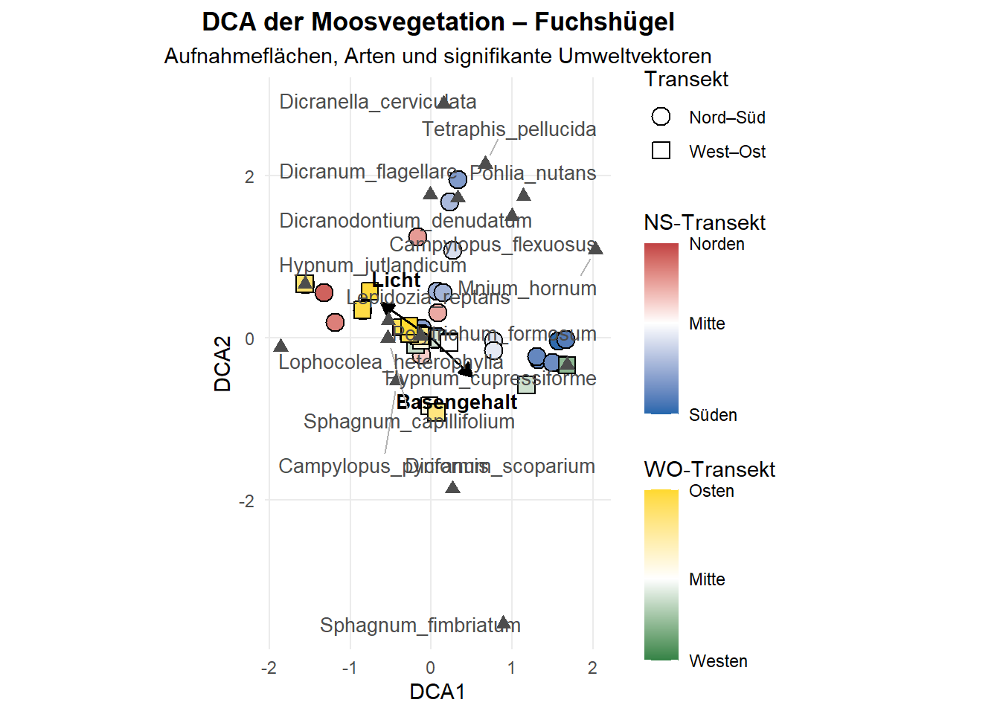
ggsave("DCA-Meu-trock-moss.png",p3, path="plots",width = 12, height = 10, dpi = 300)b) Lichtenau
Sphagnum squarrosum kommt hier auf nur einem Relevee vor mit einer geringen Deckung, hat aber starken Einfluss auf die DCA und verzerrt die Ergebnisse. Daher wird die Art hier aus der Matrix entfernt bevor die DCA durchgeführt wird
#|label: dca moss
comm <- veg_long %>%
filter(site=="Lic"&Schicht =="ML") %>%
group_by(plot.ID, Art) %>%
summarise(
Deckung = sum(Deckung, na.rm = TRUE),
.groups = "drop"
) %>%
pivot_wider(
names_from = Art,
values_from = Deckung,
values_fill = 0
)%>%
tibble::column_to_rownames("plot.ID")
#entferne leere zeilen &spalten weil decorana damit nciht rechnen kann
comm <- comm[
rowSums(comm) > 0,
colSums(comm) > 0,
drop = FALSE
]
###################################################################################
#S. squarrosum verzerrt die DCA. Die Art sollte entfernt werden. Sie kommt nur auf einem einzigen relevee vor
comm[
comm[, "Sphagnum_squarrosum"] > 0,
"Sphagnum_squarrosum",
drop = FALSE
] Sphagnum_squarrosum
225 4.5#die Art kommt nur auf einem Quadrat mit relativ wenig Deckung vor, deswegen wird sie erstmal entfernt
#entfernen von s. squarrosum in Lichtenau
comm <- comm[
rownames(comm) != "225",
,
drop = FALSE
]
# Sphagnum_squarrosum ist danach eine vollständige Nullspalte
comm <- comm[
,
colSums(comm) > 0,
drop = FALSE
]
###################################################################################
dca <- decorana(comm)
summary(dca)
Call:
decorana(veg = comm)
Detrended correspondence analysis with 26 segments.
Rescaling of axes with 4 iterations.
Total inertia (scaled Chi-square): 6.3966
DCA1 DCA2 DCA3 DCA4
Eigenvalues 0.9608 0.9322 0.6481 0.5411
Additive Eigenvalues 0.9608 0.9216 0.5970 0.3822
Decorana values 0.9780 0.8957 0.4622 0.1653
Axis lengths 4.2635 2.7450 2.7994 1.8850Species scores:
DCA1 DCA2 DCA3 DCA4 Totals
Campylopus_flexuosus 2.4657 -0.2631 1.0322 -1.0201 0.5
Campylopus_pyriformis 1.3355 0.7889 0.3966 -1.5658 19.3
Dicranum_flagellare 2.4657 -0.2631 1.0322 -1.0201 0.5
Dicranum_scoparium 2.1072 1.0370 -0.0357 1.3998 5.0
Fuscocephaloziopsis_connivens -0.5569 -0.5629 0.0455 -0.8931 0.1
Hypnum_cupressiforme 1.9132 1.2803 -0.1233 0.7339 186.3
Hypnum_jutlandicum -0.5446 -0.5711 0.4143 3.0084 18.3
Leucobryum_glaucum 0.6775 1.0423 -0.5347 0.1960 4.5
Mnium_hornum 1.8589 0.8381 0.2420 -1.6143 0.5
Pohlia_nutans -0.5715 -0.5818 0.0509 -0.9131 0.6
Polytrichum_formosum 0.7278 0.8905 0.1899 1.1839 17.3
Riccardia_latifrons -0.5569 -0.5629 0.0455 -0.8931 0.1
Sphagnum_auriculatum 3.0930 1.1560 -0.1336 0.6512 43.0
Sphagnum_capillifolium 0.3962 1.3438 2.7279 0.5539 9.0
Sphagnum_cuspidatum -0.4278 2.2280 -0.1282 -0.0537 285.0
Sphagnum_fallax -0.5623 -0.5127 0.0422 -0.1378 2884.0
Sphagnum_fimbriatum 3.7011 0.9000 0.0295 0.2727 261.0
Sphagnum_girgensohnii 2.4583 -0.2383 1.0037 -1.0014 18.5
Sphagnum_russowii 0.3553 0.5176 -0.2276 0.2563 547.5
Tetraphis_pellucida -0.3986 -0.5337 0.1896 -0.9284 0.7
Site scores:
DCA1 DCA2 DCA3 DCA4 Totals
222 1.62511 1.03154 0.13822 -0.42793 36.6
223 1.90038 1.24729 -0.09774 0.69741 40.0
226 1.91970 1.25033 -0.11053 0.80882 43.0
227 1.32049 1.08540 0.03328 0.95890 0.2
228 0.67703 0.70685 -0.14066 0.49053 27.0
229 0.42777 1.29101 2.57174 0.56460 4.8
230 0.84277 0.78354 -0.21944 0.39394 60.5
231 -0.42783 2.22805 -0.12822 -0.05368 38.0
232 -0.17996 2.12770 -0.12771 0.02971 42.5
233 -0.42783 2.22805 -0.12822 -0.05368 18.0
234 -0.42783 2.22805 -0.12822 -0.05368 18.0
235 -0.56231 -0.51268 0.04223 -0.13780 63.0
236 -0.56231 -0.51268 0.04223 -0.13780 63.0
237 -0.56231 -0.51268 0.04223 -0.13780 4.5
238 -0.55049 -0.51698 0.12533 0.56517 81.5
239 -0.56231 -0.51268 0.04223 -0.13780 38.0
240 -0.56231 -0.51268 0.04223 -0.13780 38.0
241 -0.56231 -0.51268 0.04223 -0.13780 38.0
242 -0.56231 -0.51268 0.04223 -0.13780 63.0
243 -0.56231 -0.51268 0.04223 -0.13780 38.0
244 -0.56231 -0.51268 0.04223 -0.13780 38.0
245 -0.56231 -0.51268 0.04223 -0.13780 38.0
246 -0.56231 -0.51268 0.04223 -0.13780 38.0
247 -0.56231 -0.51268 0.04223 -0.13780 38.0
248 -0.56231 -0.51268 0.04223 -0.13780 18.0
249 -0.56231 -0.51268 0.04223 -0.13780 18.0
250 -0.56231 -0.51268 0.04223 -0.13780 4.5
251 -0.56231 -0.51268 0.04223 -0.13780 4.5
252 -0.56231 -0.51268 0.04223 -0.13780 18.0
253 -0.56231 -0.51268 0.04223 -0.13780 88.0
254 -0.44722 -0.43124 0.04720 -0.15243 19.0
255 -0.56231 -0.51268 0.04223 -0.13780 4.5
256 -0.56231 -0.51268 0.04223 -0.13780 4.5
257 -0.14973 -0.21384 0.01464 0.00749 0.6
258 -0.56231 -0.51268 0.04223 -0.13780 18.0
259 -0.56231 -0.51268 0.04223 -0.13780 18.0
260 -0.56231 -0.51268 0.04223 -0.13780 18.0
261 -0.56231 -0.51268 0.04223 -0.13780 18.0
262 -0.56231 -0.51268 0.04223 -0.13780 38.0
263 -0.56231 -0.51268 0.04223 -0.13780 38.0
264 -0.56231 -0.51268 0.04223 -0.13780 38.0
265 -0.56231 -0.51268 0.04223 -0.13780 38.0
266 -0.56231 -0.51268 0.04223 -0.13780 38.0
267 -0.56231 -0.51268 0.04223 -0.13780 18.0
268 -0.56231 -0.51268 0.04223 -0.13780 4.5
269 -0.56231 -0.51268 0.04223 -0.13780 4.5
270 -0.56231 -0.51268 0.04223 -0.13780 18.0
271 -0.43680 2.04533 -0.11686 -0.05929 67.5
272 -0.47106 1.34710 -0.07343 -0.08072 56.0
273 -0.42783 2.22805 -0.12822 -0.05368 4.5
274 -0.42783 2.22805 -0.12822 -0.05368 63.0
275 -0.56231 -0.51268 0.04223 -0.13780 38.0
276 -0.56231 -0.51268 0.04223 -0.13780 18.0
277 -0.31476 -0.33338 0.02568 -0.05063 5.0
278 -0.49541 -0.46422 0.03776 -0.11424 18.5
279 -0.56231 -0.51268 0.04223 -0.13780 63.0
280 -0.56231 -0.51268 0.04223 -0.13780 38.0
281 -0.56231 -0.51268 0.04223 -0.13780 38.0
282 -0.56231 -0.51268 0.04223 -0.13780 38.0
283 -0.56231 -0.51268 0.04223 -0.13780 63.0
284 0.67615 0.39077 -0.03740 0.31018 36.5
285 0.06626 0.19265 -0.13796 0.13899 56.5
286 1.13424 0.89895 -0.17549 0.49512 9.0
287 1.91318 1.28033 -0.12334 0.73390 4.5
288 1.91318 1.28033 -0.12334 0.73390 4.5
289 2.38501 -0.21413 0.97740 -0.92614 19.7
290 0.37985 0.59091 -0.01621 0.33663 72.1
291 2.41298 1.12787 -0.11486 0.68364 65.0
292 3.70115 0.89999 0.02952 0.27269 88.0
293 3.51183 0.94026 0.01333 0.32152 42.5
294 3.69771 0.90144 0.02860 0.27483 88.5
295 3.70115 0.89999 0.02952 0.27269 38.0
296 0.35530 0.51758 -0.22763 0.25635 18.0
297 0.35530 0.51758 -0.22763 0.25635 63.0
298 -0.56231 -0.51268 0.04223 -0.13780 63.0
299 -0.56231 -0.51268 0.04223 -0.13780 4.5
300 -0.56231 -0.51268 0.04223 -0.13780 63.0
301 -0.56231 -0.51268 0.04223 -0.13780 38.0
302 0.35530 0.51758 -0.22763 0.25635 38.0
303 0.35530 0.51758 -0.22763 0.25635 4.5
304 0.35530 0.51758 -0.22763 0.25635 18.0
305 0.35530 0.51758 -0.22763 0.25635 38.0
306 0.35530 0.51758 -0.22763 0.25635 38.0
307 0.35530 0.51758 -0.22763 0.25635 38.0
308 0.35530 0.51758 -0.22763 0.25635 88.0
309 0.35530 0.51758 -0.22763 0.25635 38.0
310 -0.56231 -0.51268 0.04223 -0.13780 38.0
311 -0.56231 -0.51268 0.04223 -0.13780 63.0
312 -0.56231 -0.51268 0.04223 -0.13780 63.0
313 -0.56231 -0.51268 0.04223 -0.13780 88.0
314 -0.56144 -0.51318 0.04311 -0.14659 89.0
315 -0.56231 -0.51268 0.04223 -0.13780 18.0
316 -0.56231 -0.51268 0.04223 -0.13780 88.0
317 -0.56231 -0.51268 0.04223 -0.13780 63.0
318 -0.56231 -0.51268 0.04223 -0.13780 38.0
319 -0.56231 -0.51268 0.04223 -0.13780 38.0
320 -0.56231 -0.51268 0.04223 -0.13780 38.0
321 -0.56231 -0.51268 0.04223 -0.13780 38.0
322 -0.56231 -0.51268 0.04223 -0.13780 88.0
323 -0.56231 -0.51268 0.04223 -0.13780 63.0
324 -0.56231 -0.51268 0.04223 -0.13780 63.0
325 -0.56231 -0.51268 0.04223 -0.13780 63.0
326 -0.56233 -0.51279 0.04225 -0.13902 63.1
327 -0.56231 -0.51268 0.04223 -0.13780 63.0
328 -0.52996 -0.48988 0.04050 -0.13249 38.8
329 -0.56231 -0.51268 0.04223 -0.13780 38.0
330 -0.56231 -0.51268 0.04223 -0.13780 18.0
332 -0.56231 -0.51268 0.04223 -0.13780 38.0
333 -0.56231 -0.51268 0.04223 -0.13780 38.0
334 -0.56231 -0.51268 0.04223 -0.13780 4.5
335 -0.56231 -0.51268 0.04223 -0.13780 4.5
337 -0.56231 -0.51268 0.04223 -0.13780 4.5
338 -0.56231 -0.51268 0.04223 -0.13780 4.5
339 -0.56231 -0.51268 0.04223 -0.13780 4.5
340 -0.56231 -0.51268 0.04223 -0.13780 4.5
341 -0.56231 -0.51268 0.04223 -0.13780 4.5
342 -0.56231 -0.51268 0.04223 -0.13780 4.5
343 -0.56231 -0.51268 0.04223 -0.13780 18.0
344 1.91318 1.28033 -0.12334 0.73390 4.5
346 0.82909 0.87354 0.22435 0.72563 0.6
347 -0.40271 2.19897 -0.12131 -0.02677 4.6
348 -0.52105 -0.48438 0.04994 -0.16884 4.6
349 2.90243 1.11212 -0.07580 0.55259 13.5
350 3.70115 0.89999 0.02952 0.27269 4.5env_vars <- c(
"Weighted_light",
"Weighted_temperature",
"Weighted_wetness",
"Weighted_nitrogen",
"Weighted_alkalinity",
"Hoehe",
"TL",
"ML",
"HL",
"SL"
)
env <- merged_data %>%
filter(
site == "Lic",
as.character(Plot) %in% rownames(comm)
) %>%
select(
plot.ID = Plot,
dplyr::all_of(env_vars)
) %>%
mutate(plot.ID = as.character(plot.ID)) %>%
distinct()
fit <- envfit(dca, env[, c("Weighted_light",
"Weighted_temperature",
"Weighted_wetness",
"Weighted_nitrogen",
"Weighted_alkalinity",
"Hoehe",
"TL",
"ML",
"HL",
"SL")])
fit
***VECTORS
DCA1 DCA2 r2 Pr(>r)
Weighted_light -0.91699 0.39891 0.6468 0.001 ***
Weighted_temperature 0.77809 -0.62815 0.0361 0.247
Weighted_wetness -0.97852 -0.20613 0.2618 0.001 ***
Weighted_nitrogen -0.93947 0.34264 0.0976 0.030 *
Weighted_alkalinity 0.74349 -0.66874 0.0904 0.031 *
Hoehe 0.84853 0.52915 0.1899 0.001 ***
TL 0.67447 0.73830 0.0274 0.178
ML 0.90326 -0.42910 0.0214 0.471
HL -0.99500 -0.09989 0.1301 0.006 **
SL 0.95469 0.29760 0.1593 0.010 **
---
Signif. codes: 0 '***' 0.001 '**' 0.01 '*' 0.05 '.' 0.1 ' ' 1
Permutation: free
Number of permutations: 999plot(dca)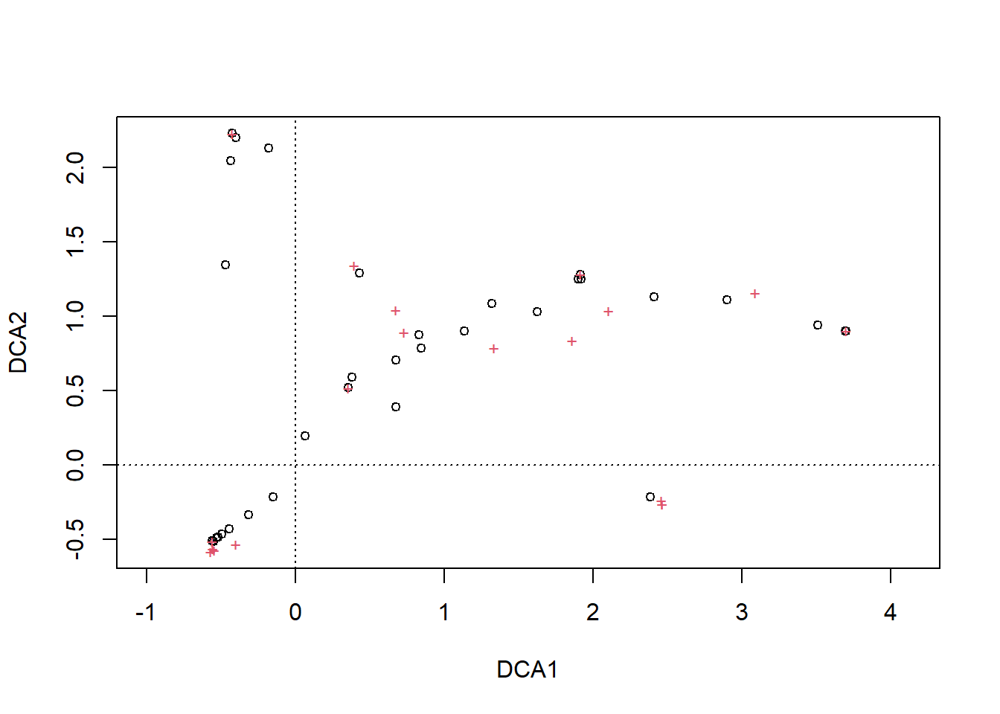
arrows <-as.data.frame(scores(fit, display = "vectors"))
arrows$Variable <- rownames(arrows)
arrows$p_value <- fit$vectors$pvals
arrows$r2 <- fit$vectors$r
arrows$Variable <- c(
"Licht",
"Temperatur",
"Feuchte",
"Stickstoff",
"Basengehalt",
"Höhe",
"Baumschicht",
"Moosschicht",
"Krautschicht",
"Strauchschicht"
)
# nur Umweltvariablen mit signifikanten p-Werten anzeigen
arrows_sig <- arrows %>%
filter(p_value <= 0.05)
#DCA scores
dca_scores <- scores(dca, display = "sites")
dca_df <- as.data.frame(dca_scores)
dca_df$Name <- rownames(dca_df)
dca_df$site <- vegdata$site[match(dca_df$Name, vegdata$plot.ID)]
dca_df$Transektnummer <- vegdata$Transektnummer[match(dca_df$Name, vegdata$plot.ID)]
dca_df$Distanz <- abs(dca_df$Transektnummer)
dca_df$Transekt <- vegdata$Transekt[
match(dca_df$Name, vegdata$plot.ID)
]
#species scores
species_df <- as.data.frame(scores(dca, display = "species", choices = c(1, 2)))
species_df$Art <- rownames(species_df)
species_totals <- colSums(comm, na.rm = TRUE)
species_df <- species_df %>%
filter(Art %in% names(species_totals[species_totals > 0]))
################################################################################
#PLOT
p4<-ggplot() +
# --------------------------------------------------
# NS-Transekt: Süden blau, Mitte weiß, Norden rot
# --------------------------------------------------
geom_point(
data = dca_df %>%
filter(Transekt == "NS"),
aes(
x = DCA1,
y = DCA2,
fill = Transektnummer,
shape = Transekt
),
size = 4,
stroke = 0.7,
colour = "black"
) +
scale_fill_gradient2(
low = "#2166AC",
mid = "white",
high = "#B2182B",
midpoint = 0,
breaks = c(
min(dca_df$Transektnummer[dca_df$Transekt == "NS"],
na.rm = TRUE),
0,
max(dca_df$Transektnummer[dca_df$Transekt == "NS"],
na.rm = TRUE)
),
labels = c("Süden", "Mitte", "Norden"),
name = "NS-Transekt"
) +
# Neue unabhängige Füllfarbenskala
ggnewscale::new_scale_fill() +
# --------------------------------------------------
# WO-Transekt: Westen grün, Mitte weiß, Osten gelb
# --------------------------------------------------
geom_point(
data = dca_df %>%
filter(Transekt == "WO"),
aes(
x = DCA1,
y = DCA2,
fill = Transektnummer,
shape = Transekt
),
size = 4,
stroke = 0.7,
colour = "black"
) +
scale_fill_gradient2(
low = "#1B7837",
mid = "white",
high = "#FFD92F",
midpoint = 0,
breaks = c(
min(dca_df$Transektnummer[dca_df$Transekt == "WO"],
na.rm = TRUE),
0,
max(dca_df$Transektnummer[dca_df$Transekt == "WO"],
na.rm = TRUE)
),
labels = c("Westen", "Mitte", "Osten"),
name = "WO-Transekt"
) +
scale_shape_manual(
name = "Transekt",
values = c(NS = 21, WO = 22),
labels = c(NS = "Nord–Süd", WO = "West–Ost")
)+
# --------------------------------------------------
# Signifikante envfit-Pfeile
# --------------------------------------------------
geom_segment(
data = arrows_sig,
aes(
x = 0,
y = 0,
xend = DCA1*2 ,
yend = DCA2 *2
),
inherit.aes = FALSE,
arrow = arrow(
length = unit(0.25, "cm"),
type = "closed"
),
linewidth = 0.7,
colour = "black"
) +
geom_text_repel(
data = arrows_sig,
aes(
x = DCA1 *2,
y = DCA2 *2,
label = Variable
),
inherit.aes = FALSE,
size = 3.5,
fontface = "bold",
colour = "black",
box.padding = 0.5,
point.padding = 0.2,
segment.colour = "grey50",
max.overlaps = Inf,
seed = 321
) +
# --------------------------------------------------
# Arten
# --------------------------------------------------
geom_point(
data = species_df,
aes(x = DCA1, y = DCA2),
shape = 17,
size = 2.5,
colour = "grey30"
) +
geom_text_repel(
data = species_df,
aes(
x = DCA1,
y = DCA2,
label = Art
),
size = 3.5,
colour = "grey30",
box.padding = 0.5,
point.padding = 0.3,
segment.colour = "grey70",
max.overlaps = Inf,
seed = 123
) +
# --------------------------------------------------
# Beschriftungen von Achsen, Titel usw
# --------------------------------------------------
labs(
title = "DCA der Moosvegetation – Kleiner Sumpf",
subtitle = "Aufnahmeflächen, Arten und signifikante Umweltvektoren",
x = "DCA1",
y = "DCA2"
) +
coord_equal() +
theme_minimal() +
theme(
plot.title = element_text(
hjust = 0.5,
face = "bold"
),
plot.subtitle = element_text(hjust = 0.5),
panel.grid.minor = element_blank(),
legend.position = "right"
)
p4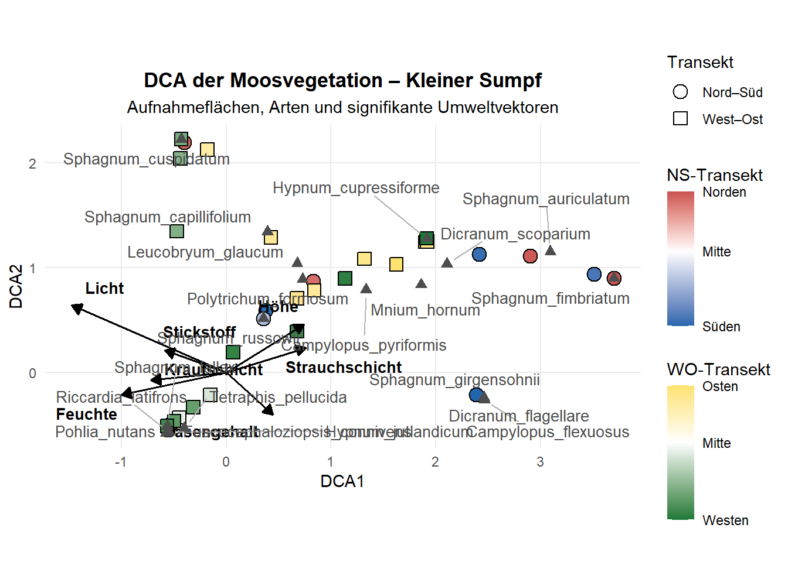
ggsave( "DCA-Lic-moss.png",p4, path="plots",width = 12, height = 10, dpi = 300)7.2.3 Gefäßpflanzen
#|label: dca vascular plants
comm <- veg_long %>%
filter(site=="Lic"& Schicht !="ML") %>%
group_by(plot.ID, Art) %>%
summarise(
Deckung = sum(Deckung, na.rm = TRUE),
.groups = "drop"
) %>%
pivot_wider(
names_from = Art,
values_from = Deckung,
values_fill = 0
)%>%
tibble::column_to_rownames("plot.ID")
#entferne leere zeilen &spalten weil decorana damit nciht rechnen kann
comm <- comm[
rowSums(comm) > 0,
colSums(comm) > 0,
drop = FALSE
]
dca <- decorana(comm)
summary(dca)
Call:
decorana(veg = comm)
Detrended correspondence analysis with 26 segments.
Rescaling of axes with 4 iterations.
Total inertia (scaled Chi-square): 5.1526
DCA1 DCA2 DCA3 DCA4
Eigenvalues 0.9215 0.8362 0.4168 0.3399
Additive Eigenvalues 0.9215 0.8154 0.4079 0.3400
Decorana values 0.9424 0.6450 0.3411 0.1317
Axis lengths 4.0639 2.8279 3.1795 2.2817Species scores:
DCA1 DCA2 DCA3 DCA4 Totals
Betula 2.15039 0.64209 0.79962 -0.00638 38.0
Betula_pendula 0.92235 0.49885 0.41537 -0.89866 374.5
Callitriche_palustris 1.80832 0.74556 2.06142 1.48701 0.2
Calluna_vulgaris -0.57517 -0.60332 0.06135 0.02369 1.0
Carex_canescens 2.67387 0.55158 1.22966 0.52106 27.6
Digitalis_purpurea 1.74351 0.34141 1.62519 0.83117 0.5
Dryopteris_carthusiana 1.60087 1.73204 -0.01235 -0.34186 5.7
Eriophorum_angustifolium -0.85015 1.81598 0.06971 0.02545 454.5
Frangula_alnus 1.68798 0.83360 -1.59153 -1.47111 265.2
Holcus_lanatus -0.58171 -0.61664 0.06257 0.02237 4.0
Juncus_effusus 3.22084 0.76669 0.01295 0.04048 340.1
Lycopus_europaeus 3.09642 0.89207 0.96227 0.55255 6.1
Molinia_caerulea -0.44617 -0.39116 0.05178 0.02677 5824.2
Pinus_sylvestris 1.44370 0.77827 1.89643 0.14336 221.0
Rubus_caesius 3.08859 0.66560 -0.11997 0.30414 10.5
Salix_aurita -0.15012 2.79545 0.07392 0.02151 68.0
Scrophularia_nodosa 3.31131 0.67190 -0.05916 -0.09030 0.5
Typha_latifolia 3.31002 0.67957 -0.04979 -0.07484 4.6
Vaccinium_myrtillus 1.19446 0.77184 -1.20823 1.06698 469.2
Vaccinium_oxycoccos -0.41846 -0.28198 0.15543 -0.79319 9.5
Site scores:
DCA1 DCA2 DCA3 DCA4 Totals
222 1.45126 0.75431 1.73242 0.08865 99.2
223 1.76895 0.71448 -0.21166 0.42419 10.4
224 3.19750 0.76289 0.00428 0.03935 99.5
225 3.21377 0.76247 0.01163 0.05599 93.0
226 2.96834 0.76120 -0.06118 -0.10820 47.1
227 3.15469 0.77348 0.10826 0.07831 98.9
228 1.54749 0.75784 -1.44708 -1.21474 77.6
229 2.71322 0.65247 -0.00968 -0.05038 52.0
230 1.53020 0.75173 -1.07120 -1.16516 95.0
231 -0.34171 -0.32366 0.08940 -0.03361 68.0
232 -0.27353 -0.24173 -0.07783 0.13529 43.1
233 -0.46582 -0.28379 0.05265 0.02671 92.5
234 -0.46582 -0.28379 0.05265 0.02671 92.5
235 -0.80738 1.58228 0.06781 0.02559 42.5
236 -0.80209 1.58039 0.07210 0.02586 42.6
237 -0.41350 2.42694 0.07233 0.02299 101.0
238 0.50615 1.25962 -0.43612 -0.11204 27.0
239 -0.64816 0.71241 0.06074 0.02611 36.0
240 -0.80738 1.58228 0.06781 0.02559 42.5
241 -0.80738 1.58228 0.06781 0.02559 42.5
242 -0.84491 1.78731 0.06947 0.02546 38.5
243 -0.85015 1.81598 0.06971 0.02545 38.0
244 -0.80738 1.58228 0.06781 0.02559 42.5
245 -0.80738 1.58228 0.06781 0.02559 42.5
246 -0.48894 -0.15746 0.05368 0.02663 42.5
247 -0.44617 -0.39116 0.05178 0.02677 63.0
248 -0.44617 -0.39116 0.05178 0.02677 88.0
249 -0.44617 -0.39116 0.05178 0.02677 88.0
250 -0.45206 -0.40096 0.05225 0.02658 92.0
251 -0.44617 -0.39116 0.05178 0.02677 88.0
252 -0.44617 -0.39116 0.05178 0.02677 88.0
253 -0.44617 -0.39116 0.05178 0.02677 18.0
254 -0.43690 -0.38459 0.04466 0.03265 88.5
255 -0.44617 -0.39116 0.05178 0.02677 88.0
256 -0.44402 -0.38983 0.05387 0.02690 88.1
257 -0.36635 -0.33458 -0.00952 0.07738 92.5
258 -0.44617 -0.39116 0.05178 0.02677 88.0
259 -0.44690 -0.39236 0.05183 0.02675 88.5
260 -0.44690 -0.39236 0.05183 0.02675 88.5
261 -0.44617 -0.39116 0.05178 0.02677 88.0
262 -0.44617 -0.39116 0.05178 0.02677 63.0
263 -0.44617 -0.39116 0.05178 0.02677 38.0
264 -0.44617 -0.39116 0.05178 0.02677 63.0
265 -0.44617 -0.39116 0.05178 0.02677 38.0
266 -0.44617 -0.39116 0.05178 0.02677 63.0
267 -0.44402 -0.38983 0.05387 0.02690 88.1
268 -0.44431 -0.38984 0.05035 0.02795 88.1
269 -0.43680 -0.38401 0.04528 0.02801 89.0
270 -0.44482 -0.38585 0.05682 -0.01312 92.5
271 -0.44617 -0.39116 0.05178 0.02677 38.0
272 -0.44617 -0.39116 0.05178 0.02677 38.0
273 -0.44617 -0.39116 0.05178 0.02677 88.0
274 -0.44617 -0.39116 0.05178 0.02677 38.0
275 -0.33679 -0.31363 -0.03222 0.09612 67.5
276 -0.42572 -0.38303 0.05767 0.02651 63.5
277 -0.44617 -0.39116 0.05178 0.02677 88.0
278 -0.43325 -0.38200 0.04186 0.03496 63.5
279 -0.44617 -0.39116 0.05178 0.02677 38.0
280 -0.44617 -0.39116 0.05178 0.02677 38.0
281 -0.41845 -0.37525 0.03044 0.00732 38.5
282 -0.44617 -0.39116 0.05178 0.02677 38.0
283 -0.44617 -0.39116 0.05178 0.02677 38.0
284 -0.04048 -0.18088 0.00274 0.12319 47.0
285 -0.26843 -0.26556 -0.07699 0.13693 42.6
286 1.15390 0.70371 -0.74761 0.28817 61.0
287 1.13113 0.65039 0.13093 -0.06736 193.5
288 1.42989 0.78775 -0.14828 0.05668 243.5
289 1.26602 0.44133 0.47590 0.38916 19.5
290 1.82665 0.67766 -0.44665 0.04590 15.0
291 0.94390 0.51999 0.07012 -0.57573 115.2
292 1.19446 0.77184 -1.20823 1.06698 4.5
293 0.76319 0.40928 0.12690 -0.47898 124.0
294 2.60604 0.53108 1.20405 0.51032 4.6
295 0.18296 0.00680 -0.43211 -0.04951 27.0
296 1.22348 0.77413 -1.21599 0.93840 93.0
297 1.19016 0.76879 -1.20493 1.06425 38.1
298 -0.44186 -0.38811 0.04847 0.02950 38.1
299 -0.44617 -0.39116 0.05178 0.02677 88.0
300 -0.39184 -0.36300 0.04521 0.03968 39.0
301 -0.44186 -0.38811 0.04847 0.02950 38.1
302 -0.30929 -0.29323 0.09375 -0.13778 47.1
303 -0.15886 -0.18885 -0.16890 0.19555 106.5
304 -0.44617 -0.39116 0.05178 0.02677 88.0
305 -0.44617 -0.39116 0.05178 0.02677 88.0
306 -0.44617 -0.39116 0.05178 0.02677 38.0
307 -0.44617 -0.39116 0.05178 0.02677 63.0
308 1.11385 0.08021 0.64072 0.27392 9.0
309 -0.44617 -0.39116 0.05178 0.02677 38.0
310 -0.44617 -0.39116 0.05178 0.02677 63.0
311 -0.44617 -0.39116 0.05178 0.02677 38.0
312 -0.42162 -0.37597 0.07574 0.02829 38.5
313 -0.41050 -0.36588 0.02439 0.04939 4.6
314 -0.44617 -0.39116 0.05178 0.02677 18.0
315 -0.44617 -0.39116 0.05178 0.02677 88.0
316 -0.44617 -0.39116 0.05178 0.02677 18.0
317 -0.44617 -0.39116 0.05178 0.02677 38.0
318 -0.44617 -0.39116 0.05178 0.02677 38.0
319 -0.44617 -0.39116 0.05178 0.02677 63.0
320 -0.44617 -0.39116 0.05178 0.02677 63.0
321 -0.07752 -0.17579 0.18571 -0.13744 23.5
322 -0.44617 -0.39116 0.05178 0.02677 4.5
323 -0.44617 -0.39116 0.05178 0.02677 38.0
324 -0.44617 -0.39116 0.05178 0.02677 38.0
325 -0.44617 -0.39116 0.05178 0.02677 38.0
326 -0.44617 -0.39116 0.05178 0.02677 38.0
327 -0.44617 -0.39116 0.05178 0.02677 38.0
328 -0.44617 -0.39116 0.05178 0.02677 38.0
329 -0.44617 -0.39116 0.05178 0.02677 63.0
330 -0.44617 -0.39116 0.05178 0.02677 88.0
331 -0.44617 -0.39116 0.05178 0.02677 88.0
332 -0.64816 0.71241 0.06074 0.02611 76.0
333 -0.63790 0.71101 0.06306 0.02006 76.5
334 -0.44617 -0.39116 0.05178 0.02677 88.0
335 -0.44617 -0.39116 0.05178 0.02677 88.0
336 -0.44617 -0.39116 0.05178 0.02677 88.0
337 -0.44617 -0.39116 0.05178 0.02677 88.0
338 -0.44617 -0.39116 0.05178 0.02677 88.0
339 -0.44617 -0.39116 0.05178 0.02677 88.0
340 -0.44617 -0.39116 0.05178 0.02677 88.0
341 -0.44617 -0.39116 0.05178 0.02677 88.0
342 0.06872 -0.05630 0.18858 -0.32141 101.0
343 -0.12445 -0.18590 0.13718 -0.17590 81.7
344 -0.41819 -0.37342 0.03740 0.04016 38.6
345 -0.44375 -0.38977 0.04992 0.02507 88.1
346 1.13073 0.36151 -0.24671 -0.48357 13.5
347 -0.43868 -0.38759 0.05036 0.02435 63.2
348 -0.36621 -0.35710 0.08180 0.02651 18.6
349 1.23064 0.70427 -1.21501 0.21865 61.5
350 -0.44322 -0.38999 0.05263 0.02673 88.1env_vars <- c(
"Weighted_light",
"Weighted_temperature",
"Weighted_wetness",
"Weighted_nitrogen",
"Weighted_alkalinity",
"Hoehe",
"TL",
"ML",
"HL",
"SL"
)
env <- merged_data %>%
filter(
site == "Lic",
as.character(Plot) %in% rownames(comm)
) %>%
select(
plot.ID = Plot,
dplyr::all_of(env_vars)
) %>%
mutate(plot.ID = as.character(plot.ID)) %>%
distinct()
fit <- envfit(dca, env[, c("Weighted_light",
"Weighted_temperature",
"Weighted_wetness",
"Weighted_nitrogen",
"Weighted_alkalinity",
"Hoehe",
"TL",
"ML",
"HL",
"SL")])
fit
***VECTORS
DCA1 DCA2 r2 Pr(>r)
Weighted_light -0.99984 0.01783 0.1069 0.006 **
Weighted_temperature 0.98075 0.19528 0.4558 0.001 ***
Weighted_wetness -0.97611 -0.21727 0.2852 0.001 ***
Weighted_nitrogen 0.79785 -0.60285 0.1121 0.007 **
Weighted_alkalinity 0.22303 0.97481 0.7548 0.001 ***
Hoehe 0.14897 -0.98884 0.0260 0.294
TL 0.76530 0.64368 0.1557 0.015 *
ML -0.72404 0.68976 0.0534 0.072 .
HL 0.16665 -0.98602 0.1163 0.002 **
SL 0.38538 0.92276 0.1883 0.002 **
---
Signif. codes: 0 '***' 0.001 '**' 0.01 '*' 0.05 '.' 0.1 ' ' 1
Permutation: free
Number of permutations: 999plot(dca)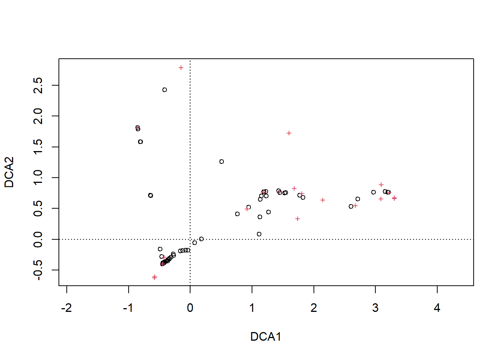
arrows <-as.data.frame(scores(fit, display = "vectors"))
arrows$Variable <- rownames(arrows)
arrows$p_value <- fit$vectors$pvals
arrows$r2 <- fit$vectors$r
arrows$Variable <- c(
"Licht",
"Temperatur",
"Feuchte",
"Stickstoff",
"Basengehalt",
"Höhe",
"Baumschicht",
"Moosschicht",
"Krautschicht",
"Strauchschicht"
)
# nur Umweltvariablen mit signifikanten p-Werten anzeigen
arrows_sig <- arrows %>%
filter(p_value <= 0.05)
#DCA scores
dca_scores <- scores(dca, display = "sites")
dca_df <- as.data.frame(dca_scores)
dca_df$Name <- rownames(dca_df)
dca_df$site <- vegdata$site[match(dca_df$Name, vegdata$plot.ID)]
dca_df$Transektnummer <- vegdata$Transektnummer[match(dca_df$Name, vegdata$plot.ID)]
dca_df$Distanz <- abs(dca_df$Transektnummer)
dca_df$Transekt <- vegdata$Transekt[
match(dca_df$Name, vegdata$plot.ID)
]
#species scores
species_df <- as.data.frame(scores(dca, display = "species", choices = c(1, 2)))
species_df$Art <- rownames(species_df)
species_totals <- colSums(comm, na.rm = TRUE)
species_df <- species_df %>%
filter(Art %in% names(species_totals[species_totals > 0]))
################################################################################
#PLOT
p5<-ggplot() +
# --------------------------------------------------
# NS-Transekt: Süden blau, Mitte weiß, Norden rot
# --------------------------------------------------
geom_point(
data = dca_df %>%
filter(Transekt == "NS"),
aes(
x = DCA1,
y = DCA2,
fill = Transektnummer,
shape = Transekt
),
size = 4,
stroke = 0.7,
colour = "black"
) +
scale_fill_gradient2(
low = "#2166AC",
mid = "white",
high = "#B2182B",
midpoint = 0,
breaks = c(
min(dca_df$Transektnummer[dca_df$Transekt == "NS"],
na.rm = TRUE),
0,
max(dca_df$Transektnummer[dca_df$Transekt == "NS"],
na.rm = TRUE)
),
labels = c("Süden", "Mitte", "Norden"),
name = "NS-Transekt"
) +
# Neue unabhängige Füllfarbenskala
ggnewscale::new_scale_fill() +
# --------------------------------------------------
# WO-Transekt: Westen grün, Mitte weiß, Osten gelb
# --------------------------------------------------
geom_point(
data = dca_df %>%
filter(Transekt == "WO"),
aes(
x = DCA1,
y = DCA2,
fill = Transektnummer,
shape = Transekt
),
size = 4,
stroke = 0.7,
colour = "black"
) +
scale_fill_gradient2(
low = "#1B7837",
mid = "white",
high = "#FFD92F",
midpoint = 0,
breaks = c(
min(dca_df$Transektnummer[dca_df$Transekt == "WO"],
na.rm = TRUE),
0,
max(dca_df$Transektnummer[dca_df$Transekt == "WO"],
na.rm = TRUE)
),
labels = c("Westen", "Mitte", "Osten"),
name = "WO-Transekt"
) +
scale_shape_manual(
name = "Transekt",
values = c(NS = 21, WO = 22),
labels = c(NS = "Nord–Süd", WO = "West–Ost")
)+
# --------------------------------------------------
# Signifikante envfit-Pfeile
# --------------------------------------------------
geom_segment(
data = arrows_sig,
aes(
x = 0,
y = 0,
xend = DCA1*2 ,
yend = DCA2 *2
),
inherit.aes = FALSE,
arrow = arrow(
length = unit(0.25, "cm"),
type = "closed"
),
linewidth = 0.7,
colour = "black"
) +
geom_text_repel(
data = arrows_sig,
aes(
x = DCA1 *2,
y = DCA2 *2,
label = Variable
),
inherit.aes = FALSE,
size = 3.5,
fontface = "bold",
colour = "black",
box.padding = 0.5,
point.padding = 0.2,
segment.colour = "grey50",
max.overlaps = Inf,
seed = 321
) +
# --------------------------------------------------
# Arten
# --------------------------------------------------
geom_point(
data = species_df,
aes(x = DCA1, y = DCA2),
shape = 17,
size = 2.5,
colour = "grey30"
) +
geom_text_repel(
data = species_df,
aes(
x = DCA1,
y = DCA2,
label = Art
),
size = 3.5,
colour = "grey30",
box.padding = 0.5,
point.padding = 0.3,
segment.colour = "grey70",
max.overlaps = Inf,
seed = 123
) +
# --------------------------------------------------
# Beschriftungen von Achsen, Titel usw
# --------------------------------------------------
labs(
title = "DCA der Vegetation der Gefäßpflanzen – Kleiner Sumpf",
subtitle = "Aufnahmeflächen, Arten und signifikante Umweltvektoren",
x = "DCA1",
y = "DCA2"
) +
coord_equal() +
theme_minimal() +
theme(
plot.title = element_text(
hjust = 0.5,
face = "bold"
),
plot.subtitle = element_text(hjust = 0.5),
panel.grid.minor = element_blank(),
legend.position = "right"
)
p5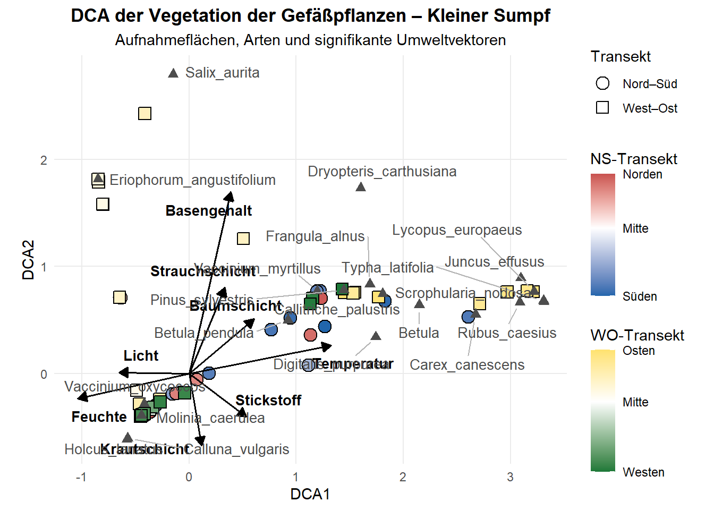
ggsave( "DCA-Lic-vasc.png",p5, path="plots",width = 12, height = 10, dpi = 300)8 Transekte plotten
Der Flächenname ist ersetzbar mit Lic, Meu_nass, Meu_trock
#|label: Übersicht Variablen
#plot entlang der Transekte
merged_data %>%
filter(site == "Lic") %>%
ggplot( aes(Transektnummer, Weighted_wetness)) +
# geom_point() +
# geom_smooth() +
geom_line()+
facet_wrap(~ Transekt)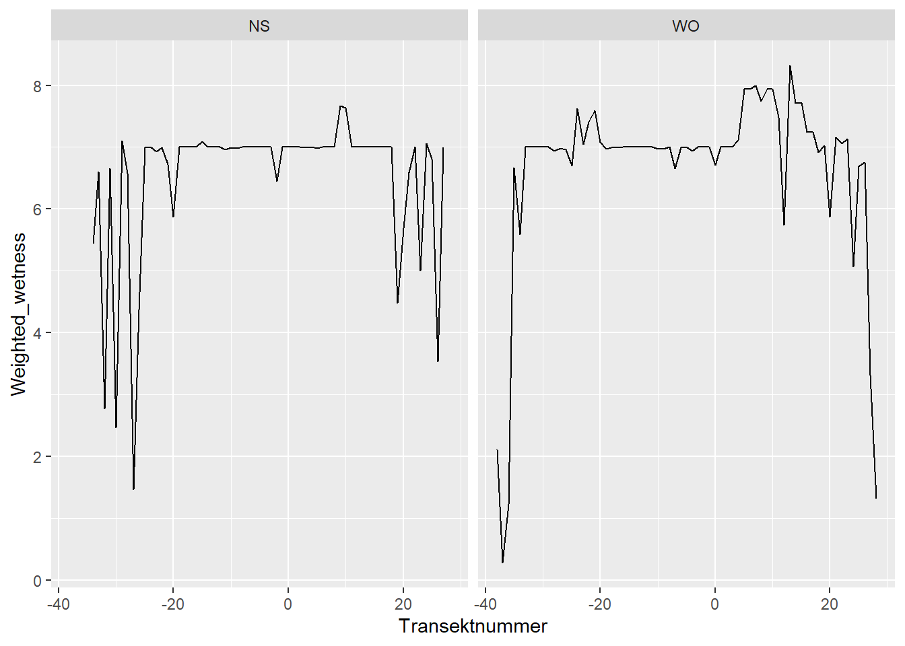
merged_data %>%
filter(site == "Meu_nass") %>%
ggplot( aes(Transektnummer, Weighted_wetness)) +
geom_point() +
geom_smooth() +
facet_wrap(~ Transekt)`geom_smooth()` using method = 'loess' and formula = 'y ~ x'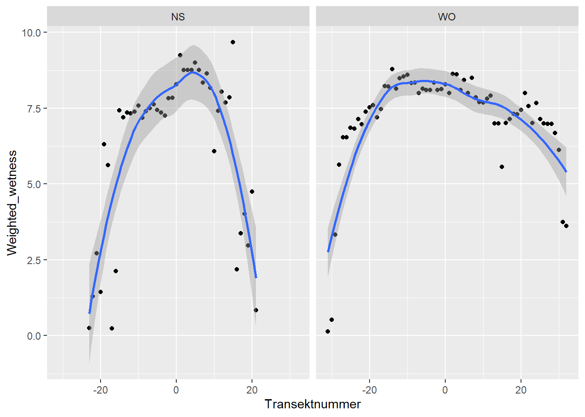
merged_data %>%
filter(site == "Meu_trock") %>%
ggplot( aes(Transektnummer, Weighted_wetness)) +
geom_point() +
geom_smooth() +
facet_wrap(~ Transekt)`geom_smooth()` using method = 'loess' and formula = 'y ~ x'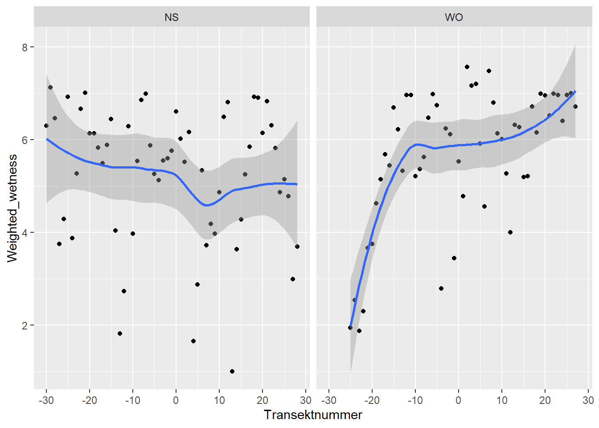
merged_data %>%
filter(site == "Lic") %>%
ggplot( aes(Transektnummer, Weighted_temperature)) +
geom_point() +
geom_smooth() +
facet_wrap(~ Transekt)`geom_smooth()` using method = 'loess' and formula = 'y ~ x'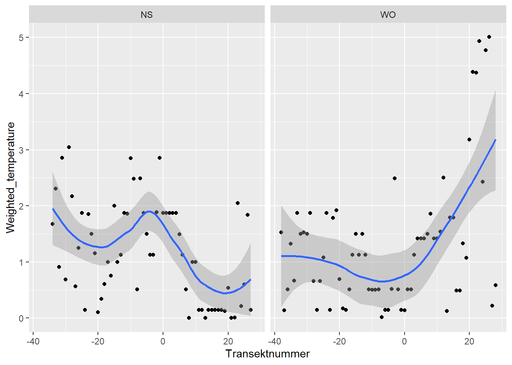
merged_data %>%
filter(site == "Lic") %>%
ggplot( aes(Transektnummer, Weighted_light)) +
geom_point() +
geom_smooth() +
facet_wrap(~ Transekt)`geom_smooth()` using method = 'loess' and formula = 'y ~ x'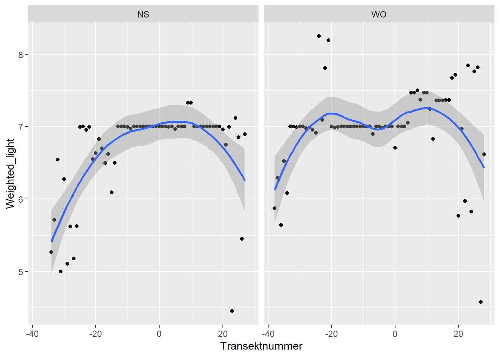
merged_data %>%
filter(site == "Lic") %>%
ggplot( aes(Transektnummer, Weighted_nitrogen)) +
geom_point() +
geom_smooth() +
facet_wrap(~ Transekt)`geom_smooth()` using method = 'loess' and formula = 'y ~ x'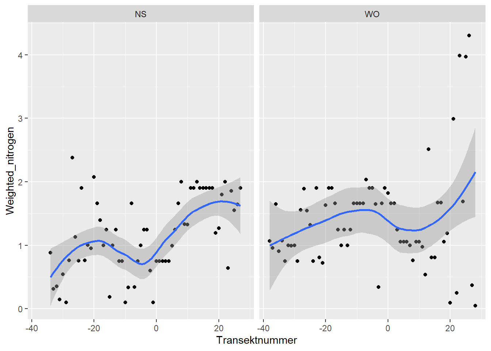
merged_data %>%
filter(site == "Lic") %>%
ggplot( aes(Transektnummer, Weighted_alkalinity)) +
geom_point() +
geom_smooth() +
facet_wrap(~ Transekt)`geom_smooth()` using method = 'loess' and formula = 'y ~ x'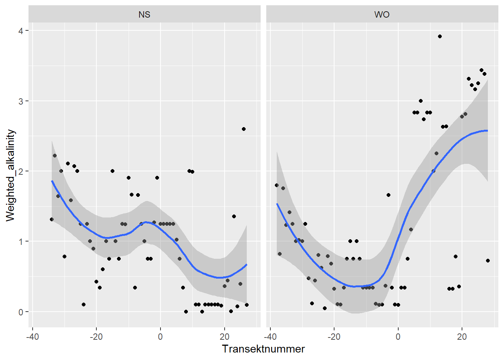
merged_data %>%
filter(site == "Lic") %>%
ggplot( aes(Transektnummer, Weighted_temperature)) +
geom_point() +
geom_smooth() +
facet_wrap(~ Transekt)`geom_smooth()` using method = 'loess' and formula = 'y ~ x'
merged_data %>%
filter(site == "Lic") %>%
ggplot( aes(Transektnummer, Richness)) +
geom_point() +
geom_smooth() +
facet_wrap(~ Transekt)`geom_smooth()` using method = 'loess' and formula = 'y ~ x'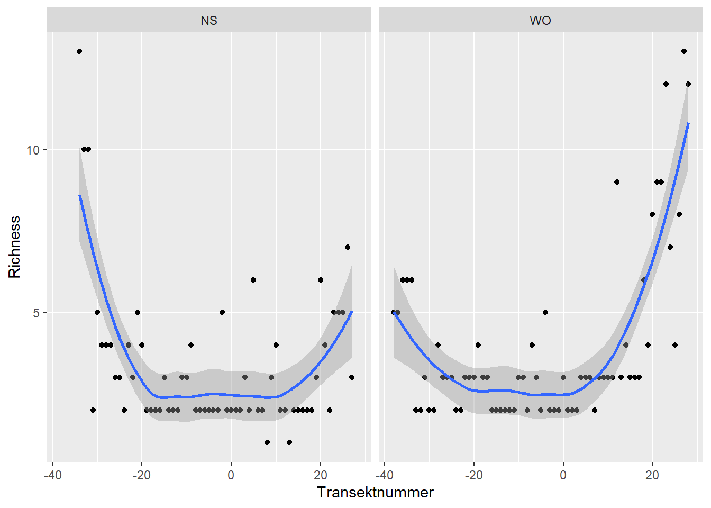
merged_data %>%
filter(site == "Lic") %>%
ggplot( aes(Transektnummer, Shannon)) +
geom_point() +
geom_smooth() +
facet_wrap(~ Transekt)`geom_smooth()` using method = 'loess' and formula = 'y ~ x'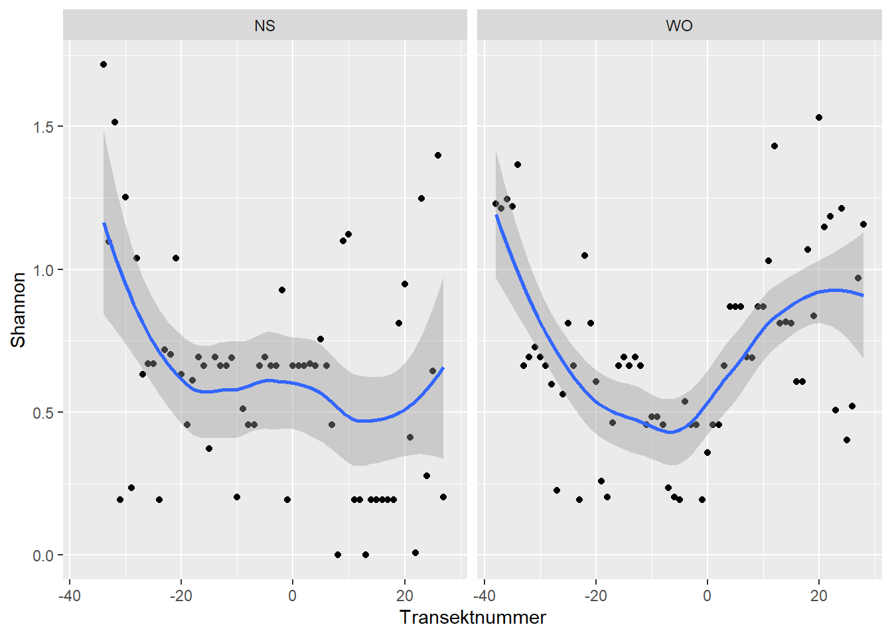
merged_data %>%
filter(site == "Lic") %>%
ggplot( aes(Transektnummer, Evenness)) +
geom_point() +
geom_smooth() +
facet_wrap(~ Transekt)`geom_smooth()` using method = 'loess' and formula = 'y ~ x'Warning: Removed 2 rows containing non-finite outside the scale range
(`stat_smooth()`).Warning: Removed 2 rows containing missing values or values outside the scale range
(`geom_point()`).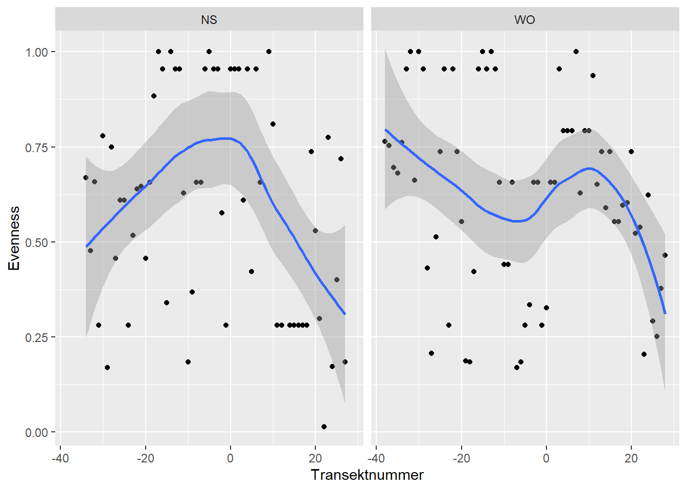
merged_data %>%
filter(site == "Lic") %>%
ggplot( aes(Transektnummer, Hoehe)) +
geom_point() +
geom_line()+
facet_wrap(~ Transekt)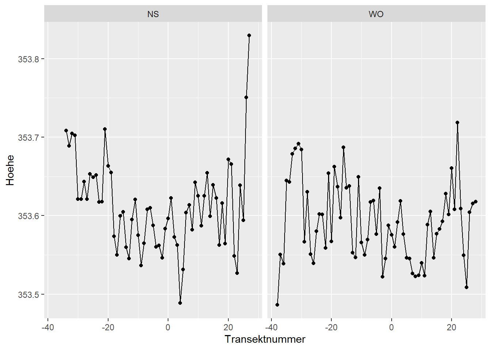
Kreuztransekte
diesen Plot für alle drei Standorte (Lic, Meu_nass, Meu_trock) und alle Parameter wiederholen, am besten mit Ersetzung arbeiten in
ggplot(aes(x = x, y = y, color = woody)) +
Parameter
“Richness”,
“Shannon”,
“Evenness”,
“Weighted_light”,
“Weighted_temperature”,
“Weighted_wetness”,
“Weighted_nitrogen”,
“Weighted_alkalinity”,
“TL”,
“SL”,
“HL”,
“ML” ,
“Sukzessionszeiger”,
“Moorart”,
“woody”
#|label: Kreuzplots für Variablen
#übernommen von ChatGPT 5.5
plot_data <- merged_data %>%
mutate(
x = if_else(Transekt == "WO", Transektnummer, 0),
y = if_else(Transekt == "NS", Transektnummer, 0)
)
#adaptiert nach ChatGPT 5.5
#Farbschema für Zeigerwerte angepasst, die markierten Zeilen sollten bei Zeigerwerten (Weighted_...) ausgfeführt werden, für alle anderen Größen nicht
plot_data %>%
filter(site == "Lic") %>%
ggplot(aes(x = x, y = y, color = woody)) +
geom_point(size = 4) +
coord_equal() +
scale_color_gradientn(
colours = viridisLite::turbo(10),
# values = scales::rescale(0:9), # nur bei zeigerwerten ausführen
# limits = c(0, 9), # nur bei zeigerwerten ausführen
# breaks = c(1, 3, 5, 7, 9), # nur bei zeigerwerten ausführen
# labels = c(1, 3, 5, 7, 9) # nur bei zeigerwerten ausführen
) +
annotate("text",
x = max(plot_data$x),y = 0,
label = "O",
size = 5,
hjust = 1.4) +
annotate("text",
x = min(plot_data$x),y = 0,
label = "W",
size = 5,
hjust = 1.4) +
annotate("text",
x = 0,y = max(plot_data$y),
label = "N",
size = 5,
vjust = -0.3) +
annotate("text",
x = 0,y = min(plot_data$y),
label = "S",
size = 5,
vjust = 1.3) +
labs(x = NULL, y = NULL)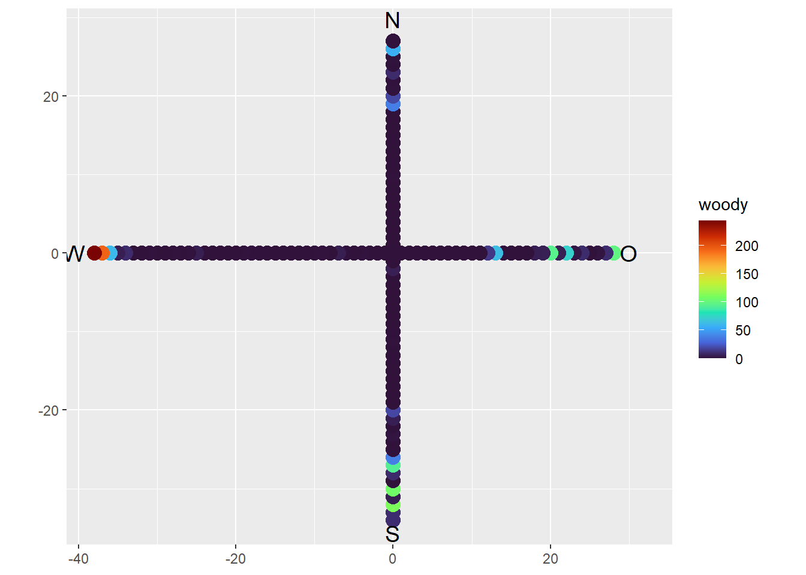
Plots Einzelarten
Ersetze Flächennamen und Artnamen nach Belieben. Artname muss immer Gattung_epitheton_Schicht lauten. Schichten sind TL, SL, HL, ML. Flächennamen sind Meu_nass, Meu_trock, Lic.
#übernommen von ChatGPT 5.5
plot_data_species <- vegdata %>%
mutate(
x = if_else(Transekt == "WO", Transektnummer, 0),
y = if_else(Transekt == "NS", Transektnummer, 0)
)
#adaptiert nach ChatGPT 5.5
plot_data_species %>%
filter(site == "Lic") %>%
ggplot(aes(x = x, y = y, color = Sphagnum_russowii_ML )) +
geom_point(size = 4) +
coord_equal() +
scale_color_gradientn(
colours = viridisLite::turbo(10),
) +
annotate("text",
x = max(plot_data_species$x),y = 0,
label = "O",
size = 5,
hjust = 1.4) +
annotate("text",
x = min(plot_data_species$x),y = 0,
label = "W",
size = 5,
hjust = 1.4) +
annotate("text",
x = 0,y = max(plot_data_species$y),
label = "N",
size = 5,
vjust = -0.3) +
annotate("text",
x = 0,y = min(plot_data_species$y),
label = "S",
size = 5,
vjust = 1.3) +
labs(x = NULL, y = NULL)
Plots Artengruppen
hier kann in
woody_plot_data <- veg_long %>%
filter(
Moorart == TRUE &
Deckung > 0) %>%
ersetzt werden Moorart==TRUE gegen
Wuchsform == grass
Wuchsform == woody
Sukzessionszeiger ==TRUE
grepl(“^Sphag”, Art)
oder beliebige andere Filter
Je nach Filter sollte in
dark2_erweitert <- colorRampPalette(
RColorBrewer::brewer.pal(8, “Dark2”))(8)
die fettgedruckte Zahl ersetzt werden durch einen Wert >=8
Wenn Anzahl der Farben nicht ausreicht erscheint folgender Error:
Insufficient values in manual scale. 8 needed but only 4 provided.Im Error kann die genaue Zahl an bneötigten Farben abgelesen werden und in den Befehl colorRampPalette() eingefügt werden.
Die Fläche kann ersetzt werden mit Meu_nass, Meu_trock oder Lic
#|label: Kreuzplot für Artengruppen
#adaptiert nach ChatGPT 5.5
woody_plot_data <- veg_long %>%
filter(
grepl("^Sphag", Art) &
Deckung > 0) %>%
mutate(
x = if_else(Transekt == "WO", Transektnummer, 0),
y = if_else(Transekt == "NS", Transektnummer, 0)
)
woody_plot_data <- woody_plot_data %>%
filter(site == "Meu_nass") %>%
arrange(desc(Deckung))
#Farbpalette erweitern auf 30 farben
dark2_erweitert <- colorRampPalette(
RColorBrewer::brewer.pal(8, "Dark2")
)(8)
#adaptiert nach ChatGPT 5.5
#Plot
woody_plot_data%>%
ggplot(
aes(
x = x,
y = y,
color = Art,
size = Deckung
)
) +
geom_point(
position = position_jitter(
width = 0.12,
height = 0.12,
seed = 123
),
alpha = 0.8
) +
coord_equal() +
scale_color_manual(
name = "Holzige Art",
values = dark2_erweitert,
guide = guide_legend(
override.aes = list(
size = 5,
alpha = 1))) +
scale_size_continuous(name = "Deckung",range = c(4, 10)) +
labs(
x = "West–Ost",
y = "Süd–Nord"
) +
theme_minimal()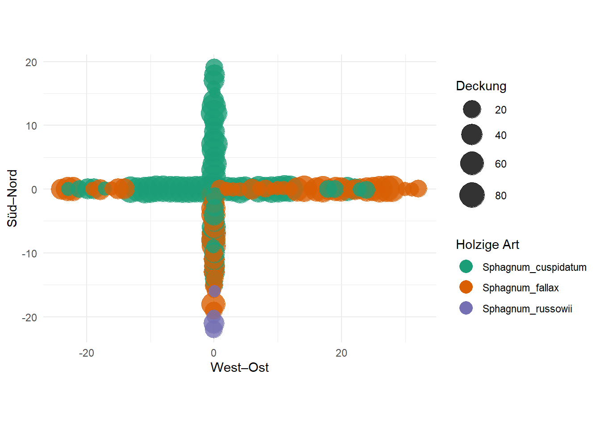
9 Korrelationen testen
#|label: corrplot
#corrplot() erwartet numerische Matrix!
#nur erklärende variablen
corr_matrix <- merged_data %>%
select(where(is.numeric)) %>%
select(-Plot, -Transektnummer, -Weighted_continental, -Weighted_salinity, -water,-bare.soil, -Richness,-Shannon,- Evenness,-Sukzessionszeiger,-woody,-grass,-Moorart) %>%
cor(method ="sp",use = "pairwise.complete.obs")
#filter auf korr > |0,5|
corr_matrix_filtered <- corr_matrix
corr_matrix_filtered[abs(corr_matrix_filtered) <= 0.5] <- NA
corrplot(
corr_matrix_filtered,
method = "number",
na.label = " "
)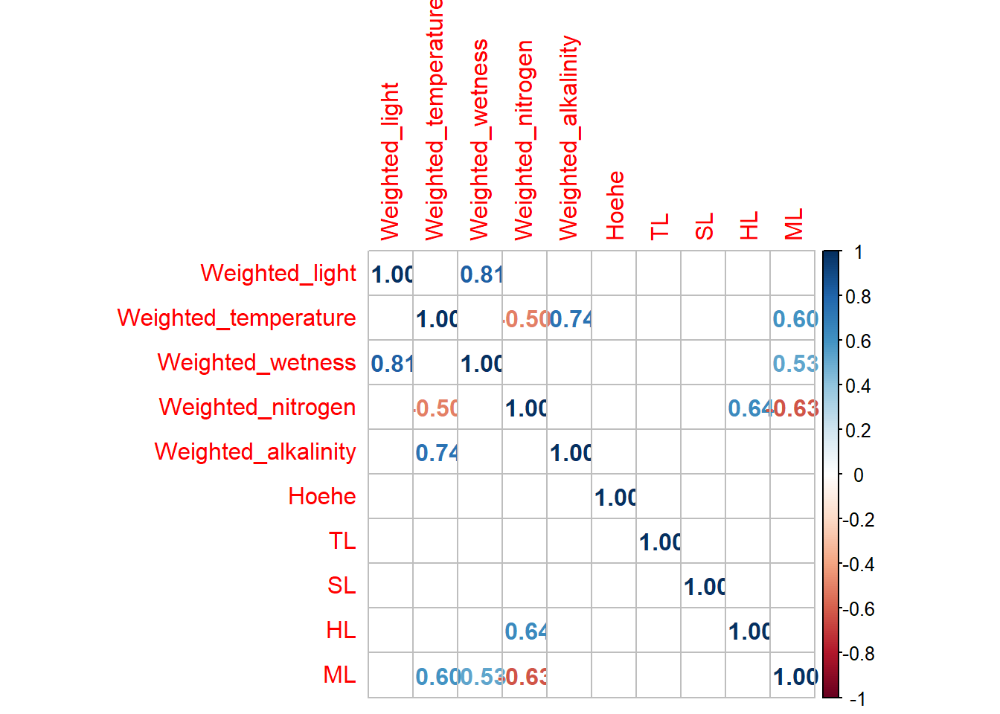
#Achtung für Modelle:
#Weighted_light und Weighted_wetness 0.81
#Weighted_alkalinity und Weighted_temperature 0.74
#Weighted_temperature un ML 0.6
#Weighted_wetness und ML 0.53
#Weighted_nitrogen und ML -0.63
#Weighted_nitrogen und Weighted_temperature -0.5
#HL und Weighted_nitrogen 0.64
## light&wetness , sowie alkalinity&temperature sollten mit vorsivht in gemeisname modelle gepackt werden. Checke auf jeden Fall auf Kolinearität!!#|label: corrplot Meu trock
corr_matrix <- merged_data %>%
filter(site == "Meu_trock") %>%
select(where(is.numeric)) %>%
select(-Plot, -Transektnummer, -Weighted_continental, -Weighted_salinity, -water,-bare.soil, -Richness,-Shannon,- Evenness,-Sukzessionszeiger,-woody,-grass,-Moorart) %>%
cor(use = "pairwise.complete.obs")
corrplot(corr_matrix, method ="number")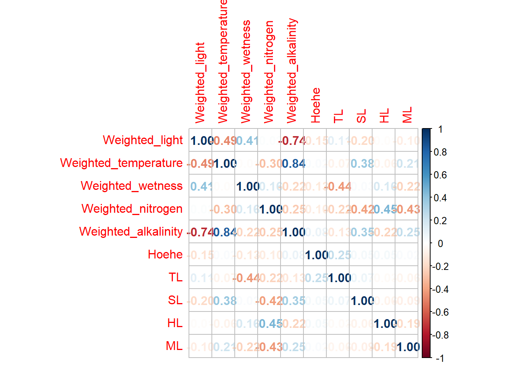
#|label: corrplot Meu nass
corr_matrix <- merged_data %>%
filter(site == "Meu_nass") %>%
select(where(is.numeric)) %>%
select(-Plot, -Transektnummer, -Weighted_continental, -Weighted_salinity, -water,-bare.soil, -Richness,-Shannon,- Evenness,-Sukzessionszeiger,-woody,-grass,-Moorart) %>%
cor(use = "pairwise.complete.obs")
corrplot(corr_matrix, method ="number")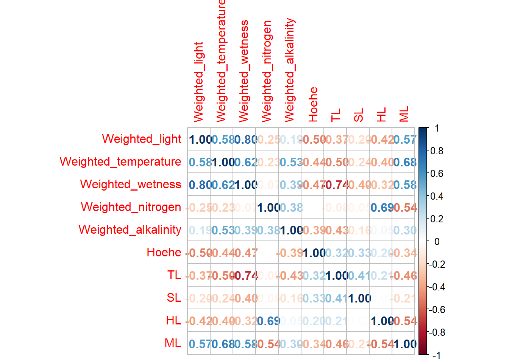
#|label: corrplot Lic
corr_matrix <- merged_data %>%
filter(site == "Lic") %>%
select(where(is.numeric)) %>%
select(-Plot, -Transektnummer, -Weighted_continental, -Weighted_salinity, -water,-bare.soil, -Richness,-Shannon,- Evenness,-Sukzessionszeiger,-woody,-grass,-Moorart) %>%
cor(use = "pairwise.complete.obs")
corrplot(corr_matrix, method ="number")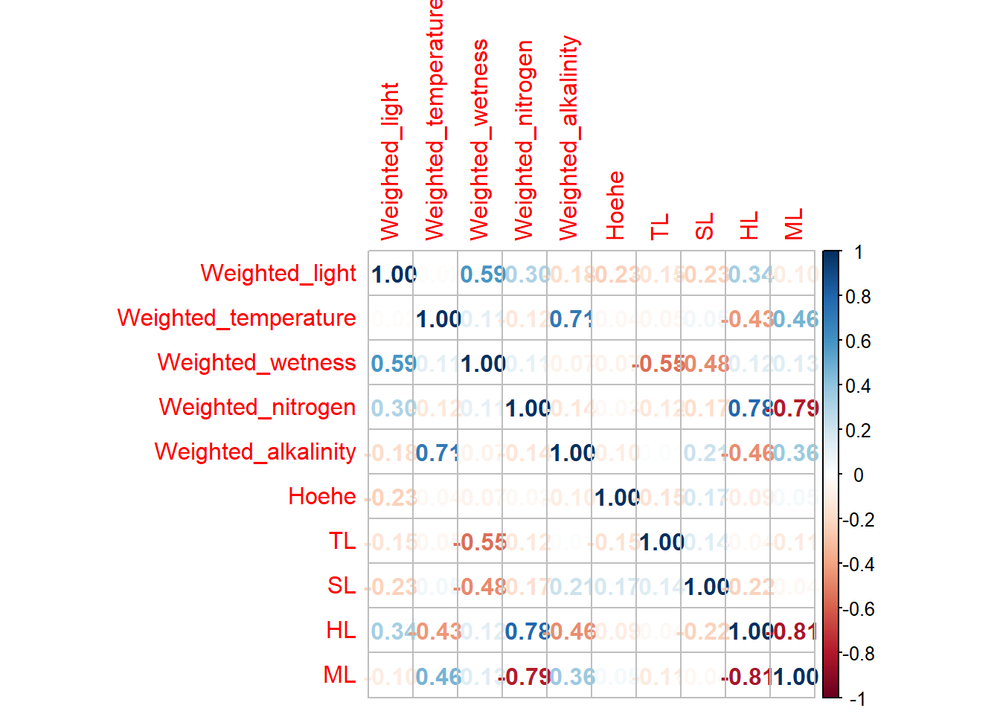
10 Models
10.1 Richness
#|label: model richness
#|output: false
# Richness ist eine Zählvariable -> glm mit family=poisson
mod1<-glm(Richness ~ Weighted_light + Weighted_temperature + Weighted_wetness + Weighted_nitrogen + Weighted_alkalinity+ Hoehe+ HL + ML + SL + TL,family = poisson, data = merged_data)
summary(mod1)
Call:
glm(formula = Richness ~ Weighted_light + Weighted_temperature +
Weighted_wetness + Weighted_nitrogen + Weighted_alkalinity +
Hoehe + HL + ML + SL + TL, family = poisson, data = merged_data)
Deviance Residuals:
Min 1Q Median 3Q Max
-1.8953 -0.5890 -0.1474 0.4005 3.2561
Coefficients:
Estimate Std. Error z value Pr(>|z|)
(Intercept) -2.7460375 1.8103034 -1.517 0.129294
Weighted_light -0.1448509 0.0496978 -2.915 0.003561 **
Weighted_temperature 0.0408057 0.0328028 1.244 0.213511
Weighted_wetness -0.0397718 0.0242033 -1.643 0.100334
Weighted_nitrogen 0.1302555 0.0630179 2.067 0.038738 *
Weighted_alkalinity 0.0575287 0.0477504 1.205 0.228289
Hoehe 0.0150609 0.0050728 2.969 0.002988 **
HL -0.0053506 0.0014310 -3.739 0.000185 ***
ML -0.0016639 0.0015887 -1.047 0.294948
SL 0.0042748 0.0017984 2.377 0.017454 *
TL 0.0006278 0.0021023 0.299 0.765216
---
Signif. codes: 0 '***' 0.001 '**' 0.01 '*' 0.05 '.' 0.1 ' ' 1
(Dispersion parameter for poisson family taken to be 1)
Null deviance: 345.21 on 349 degrees of freedom
Residual deviance: 208.17 on 339 degrees of freedom
AIC: 1367.4
Number of Fisher Scoring iterations: 4# keine overdipersion
#vereinfachung
#nicht singif. größen entfernen
#-ML&TL
mod2<-update(mod1, ~.-TL)
anova(mod1, mod2, test= "Chisq")Analysis of Deviance Table
Model 1: Richness ~ Weighted_light + Weighted_temperature + Weighted_wetness +
Weighted_nitrogen + Weighted_alkalinity + Hoehe + HL + ML +
SL + TL
Model 2: Richness ~ Weighted_light + Weighted_temperature + Weighted_wetness +
Weighted_nitrogen + Weighted_alkalinity + Hoehe + HL + ML +
SL
Resid. Df Resid. Dev Df Deviance Pr(>Chi)
1 339 208.17
2 340 208.26 -1 -0.088836 0.7657#p=0.7657
summary(mod2)
Call:
glm(formula = Richness ~ Weighted_light + Weighted_temperature +
Weighted_wetness + Weighted_nitrogen + Weighted_alkalinity +
Hoehe + HL + ML + SL, family = poisson, data = merged_data)
Deviance Residuals:
Min 1Q Median 3Q Max
-1.9273 -0.5901 -0.1481 0.4087 3.2509
Coefficients:
Estimate Std. Error z value Pr(>|z|)
(Intercept) -2.708951 1.806236 -1.500 0.133672
Weighted_light -0.138049 0.044167 -3.126 0.001774 **
Weighted_temperature 0.040976 0.032840 1.248 0.212120
Weighted_wetness -0.044354 0.018675 -2.375 0.017550 *
Weighted_nitrogen 0.123736 0.059056 2.095 0.036152 *
Weighted_alkalinity 0.058259 0.047726 1.221 0.222203
Hoehe 0.014934 0.005055 2.954 0.003134 **
HL -0.005274 0.001407 -3.747 0.000179 ***
ML -0.001779 0.001540 -1.155 0.248169
SL 0.004197 0.001777 2.362 0.018193 *
---
Signif. codes: 0 '***' 0.001 '**' 0.01 '*' 0.05 '.' 0.1 ' ' 1
(Dispersion parameter for poisson family taken to be 1)
Null deviance: 345.21 on 349 degrees of freedom
Residual deviance: 208.26 on 340 degrees of freedom
AIC: 1365.5
Number of Fisher Scoring iterations: 4mod3<- update(mod2,~.-ML)
anova(mod2, mod3, test ="Chisq")Analysis of Deviance Table
Model 1: Richness ~ Weighted_light + Weighted_temperature + Weighted_wetness +
Weighted_nitrogen + Weighted_alkalinity + Hoehe + HL + ML +
SL
Model 2: Richness ~ Weighted_light + Weighted_temperature + Weighted_wetness +
Weighted_nitrogen + Weighted_alkalinity + Hoehe + HL + SL
Resid. Df Resid. Dev Df Deviance Pr(>Chi)
1 340 208.26
2 341 209.59 -1 -1.3326 0.2483#p=0.2483
summary(mod3)
Call:
glm(formula = Richness ~ Weighted_light + Weighted_temperature +
Weighted_wetness + Weighted_nitrogen + Weighted_alkalinity +
Hoehe + HL + SL, family = poisson, data = merged_data)
Deviance Residuals:
Min 1Q Median 3Q Max
-2.0552 -0.5803 -0.1627 0.3978 3.2613
Coefficients:
Estimate Std. Error z value Pr(>|z|)
(Intercept) -3.231385 1.748146 -1.848 0.064535 .
Weighted_light -0.159322 0.040162 -3.967 7.28e-05 ***
Weighted_temperature 0.038371 0.032888 1.167 0.243328
Weighted_wetness -0.044881 0.018768 -2.391 0.016788 *
Weighted_nitrogen 0.160510 0.050151 3.201 0.001372 **
Weighted_alkalinity 0.042083 0.045861 0.918 0.358818
Hoehe 0.016557 0.004859 3.408 0.000655 ***
HL -0.005212 0.001414 -3.686 0.000228 ***
SL 0.004962 0.001640 3.026 0.002481 **
---
Signif. codes: 0 '***' 0.001 '**' 0.01 '*' 0.05 '.' 0.1 ' ' 1
(Dispersion parameter for poisson family taken to be 1)
Null deviance: 345.21 on 349 degrees of freedom
Residual deviance: 209.60 on 341 degrees of freedom
AIC: 1364.8
Number of Fisher Scoring iterations: 4mod4<-update(mod3,~.-Weighted_alkalinity)
anova(mod3, mod4, test ="Chisq")Analysis of Deviance Table
Model 1: Richness ~ Weighted_light + Weighted_temperature + Weighted_wetness +
Weighted_nitrogen + Weighted_alkalinity + Hoehe + HL + SL
Model 2: Richness ~ Weighted_light + Weighted_temperature + Weighted_wetness +
Weighted_nitrogen + Hoehe + HL + SL
Resid. Df Resid. Dev Df Deviance Pr(>Chi)
1 341 209.59
2 342 210.43 -1 -0.83137 0.3619#p=0.3619
summary(mod4)
Call:
glm(formula = Richness ~ Weighted_light + Weighted_temperature +
Weighted_wetness + Weighted_nitrogen + Hoehe + HL + SL, family = poisson,
data = merged_data)
Deviance Residuals:
Min 1Q Median 3Q Max
-1.9508 -0.5869 -0.1459 0.4188 3.2178
Coefficients:
Estimate Std. Error z value Pr(>|z|)
(Intercept) -2.967348 1.723915 -1.721 0.085199 .
Weighted_light -0.168134 0.038999 -4.311 1.62e-05 ***
Weighted_temperature 0.060739 0.022154 2.742 0.006112 **
Weighted_wetness -0.045996 0.018716 -2.458 0.013991 *
Weighted_nitrogen 0.175368 0.047561 3.687 0.000227 ***
Hoehe 0.016067 0.004829 3.327 0.000876 ***
HL -0.005601 0.001349 -4.151 3.31e-05 ***
SL 0.005184 0.001623 3.194 0.001404 **
---
Signif. codes: 0 '***' 0.001 '**' 0.01 '*' 0.05 '.' 0.1 ' ' 1
(Dispersion parameter for poisson family taken to be 1)
Null deviance: 345.21 on 349 degrees of freedom
Residual deviance: 210.43 on 342 degrees of freedom
AIC: 1363.6
Number of Fisher Scoring iterations: 4check_model(mod4)Cannot simulate residuals for models of class `glm`. Please try
`check_model(..., residual_type = "normal")` instead.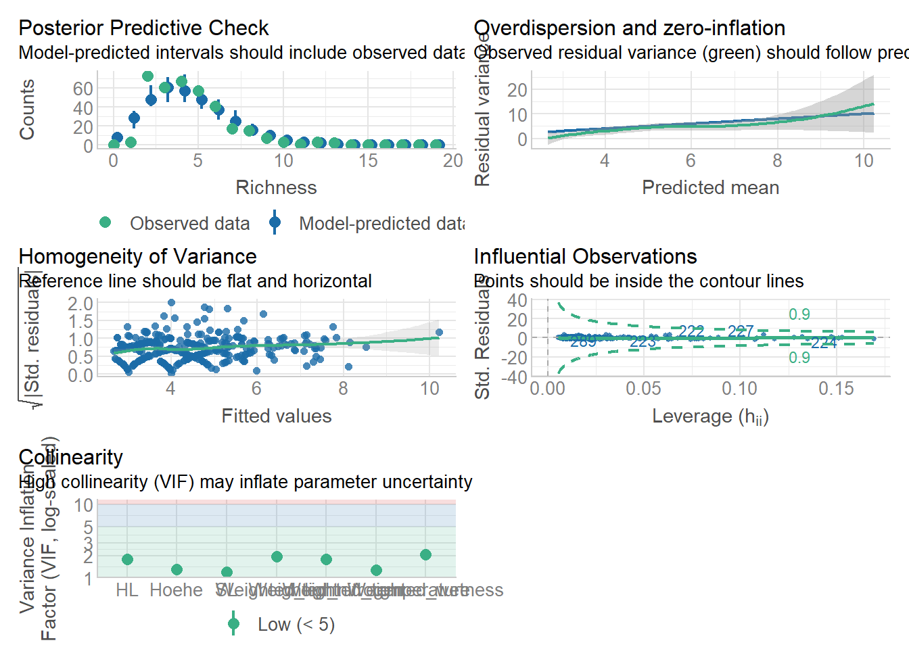
#modell sieht in orndung aus
summary(mod4)
Call:
glm(formula = Richness ~ Weighted_light + Weighted_temperature +
Weighted_wetness + Weighted_nitrogen + Hoehe + HL + SL, family = poisson,
data = merged_data)
Deviance Residuals:
Min 1Q Median 3Q Max
-1.9508 -0.5869 -0.1459 0.4188 3.2178
Coefficients:
Estimate Std. Error z value Pr(>|z|)
(Intercept) -2.967348 1.723915 -1.721 0.085199 .
Weighted_light -0.168134 0.038999 -4.311 1.62e-05 ***
Weighted_temperature 0.060739 0.022154 2.742 0.006112 **
Weighted_wetness -0.045996 0.018716 -2.458 0.013991 *
Weighted_nitrogen 0.175368 0.047561 3.687 0.000227 ***
Hoehe 0.016067 0.004829 3.327 0.000876 ***
HL -0.005601 0.001349 -4.151 3.31e-05 ***
SL 0.005184 0.001623 3.194 0.001404 **
---
Signif. codes: 0 '***' 0.001 '**' 0.01 '*' 0.05 '.' 0.1 ' ' 1
(Dispersion parameter for poisson family taken to be 1)
Null deviance: 345.21 on 349 degrees of freedom
Residual deviance: 210.43 on 342 degrees of freedom
AIC: 1363.6
Number of Fisher Scoring iterations: 4#Layer: Richness steigt bei mehr shrubs und weniger herbs
#Zeigerwerte: Richness steigt je dunkler, wärmer, trockener, nährstoffreicher der Standort ist
#Höhe bbeinflusst Richness in positive Richtung -> höher=artenreicher
#Nitrogen hat stärksten estimta =0.175368 , gefolgt von licht estimate = -0.16813410.2 Shannon-Index
#|label: model shannon
#|output: false
mod5<-lm(Shannon ~ Weighted_light + Weighted_temperature + Weighted_wetness + Weighted_nitrogen + Weighted_alkalinity+Hoehe+ HL + ML + SL + TL , data = merged_data)
summary(mod5)
Call:
lm(formula = Shannon ~ Weighted_light + Weighted_temperature +
Weighted_wetness + Weighted_nitrogen + Weighted_alkalinity +
Hoehe + HL + ML + SL + TL, data = merged_data)
Residuals:
Min 1Q Median 3Q Max
-1.02432 -0.16869 0.02449 0.19118 0.95934
Coefficients:
Estimate Std. Error t value Pr(>|t|)
(Intercept) -1.1116986 1.0992340 -1.011 0.3126
Weighted_light 0.0497953 0.0319407 1.559 0.1199
Weighted_temperature -0.0157547 0.0218679 -0.720 0.4717
Weighted_wetness -0.0872475 0.0169043 -5.161 4.19e-07 ***
Weighted_nitrogen -0.0940701 0.0415424 -2.264 0.0242 *
Weighted_alkalinity 0.2033499 0.0297870 6.827 4.02e-11 ***
Hoehe 0.0057835 0.0030991 1.866 0.0629 .
HL -0.0014838 0.0009393 -1.580 0.1151
ML -0.0013039 0.0010501 -1.242 0.2152
SL 0.0020107 0.0013173 1.526 0.1278
TL -0.0008225 0.0014241 -0.578 0.5639
---
Signif. codes: 0 '***' 0.001 '**' 0.01 '*' 0.05 '.' 0.1 ' ' 1
Residual standard error: 0.2953 on 339 degrees of freedom
Multiple R-squared: 0.4183, Adjusted R-squared: 0.4011
F-statistic: 24.37 on 10 and 339 DF, p-value: < 2.2e-16mod6<-update(mod5,~.-TL)
anova(mod6,mod5)Analysis of Variance Table
Model 1: Shannon ~ Weighted_light + Weighted_temperature + Weighted_wetness +
Weighted_nitrogen + Weighted_alkalinity + Hoehe + HL + ML +
SL
Model 2: Shannon ~ Weighted_light + Weighted_temperature + Weighted_wetness +
Weighted_nitrogen + Weighted_alkalinity + Hoehe + HL + ML +
SL + TL
Res.Df RSS Df Sum of Sq F Pr(>F)
1 340 29.593
2 339 29.564 1 0.029093 0.3336 0.5639#p=0.5639
summary(mod6)
Call:
lm(formula = Shannon ~ Weighted_light + Weighted_temperature +
Weighted_wetness + Weighted_nitrogen + Weighted_alkalinity +
Hoehe + HL + ML + SL, data = merged_data)
Residuals:
Min 1Q Median 3Q Max
-1.00328 -0.16769 0.02526 0.19018 0.95241
Coefficients:
Estimate Std. Error t value Pr(>|t|)
(Intercept) -1.1514926 1.0959970 -1.051 0.2942
Weighted_light 0.0412293 0.0282610 1.459 0.1455
Weighted_temperature -0.0156731 0.0218460 -0.717 0.4736
Weighted_wetness -0.0809214 0.0128633 -6.291 9.71e-10 ***
Weighted_nitrogen -0.0864076 0.0393285 -2.197 0.0287 *
Weighted_alkalinity 0.2021686 0.0296876 6.810 4.44e-11 ***
Hoehe 0.0059166 0.0030875 1.916 0.0562 .
HL -0.0015753 0.0009249 -1.703 0.0894 .
ML -0.0011748 0.0010251 -1.146 0.2526
SL 0.0021200 0.0013024 1.628 0.1045
---
Signif. codes: 0 '***' 0.001 '**' 0.01 '*' 0.05 '.' 0.1 ' ' 1
Residual standard error: 0.295 on 340 degrees of freedom
Multiple R-squared: 0.4177, Adjusted R-squared: 0.4023
F-statistic: 27.1 on 9 and 340 DF, p-value: < 2.2e-16mod7<- update(mod6, ~.-Weighted_temperature)
anova(mod7,mod6)Analysis of Variance Table
Model 1: Shannon ~ Weighted_light + Weighted_wetness + Weighted_nitrogen +
Weighted_alkalinity + Hoehe + HL + ML + SL
Model 2: Shannon ~ Weighted_light + Weighted_temperature + Weighted_wetness +
Weighted_nitrogen + Weighted_alkalinity + Hoehe + HL + ML +
SL
Res.Df RSS Df Sum of Sq F Pr(>F)
1 341 29.638
2 340 29.593 1 0.0448 0.5147 0.4736#p=0.4736
summary(mod7)
Call:
lm(formula = Shannon ~ Weighted_light + Weighted_wetness + Weighted_nitrogen +
Weighted_alkalinity + Hoehe + HL + ML + SL, data = merged_data)
Residuals:
Min 1Q Median 3Q Max
-0.9866 -0.1675 0.0243 0.1875 0.9453
Coefficients:
Estimate Std. Error t value Pr(>|t|)
(Intercept) -0.9793618 1.0686523 -0.916 0.3601
Weighted_light 0.0393258 0.0281162 1.399 0.1628
Weighted_wetness -0.0826577 0.0126246 -6.547 2.15e-10 ***
Weighted_nitrogen -0.0824862 0.0389191 -2.119 0.0348 *
Weighted_alkalinity 0.1880766 0.0222448 8.455 8.27e-16 ***
Hoehe 0.0054968 0.0030293 1.815 0.0705 .
HL -0.0016401 0.0009198 -1.783 0.0755 .
ML -0.0012793 0.0010139 -1.262 0.2079
SL 0.0020697 0.0012995 1.593 0.1122
---
Signif. codes: 0 '***' 0.001 '**' 0.01 '*' 0.05 '.' 0.1 ' ' 1
Residual standard error: 0.2948 on 341 degrees of freedom
Multiple R-squared: 0.4168, Adjusted R-squared: 0.4031
F-statistic: 30.46 on 8 and 341 DF, p-value: < 2.2e-16mod8<-update(mod7,~.-ML)
anova(mod7, mod8)Analysis of Variance Table
Model 1: Shannon ~ Weighted_light + Weighted_wetness + Weighted_nitrogen +
Weighted_alkalinity + Hoehe + HL + ML + SL
Model 2: Shannon ~ Weighted_light + Weighted_wetness + Weighted_nitrogen +
Weighted_alkalinity + Hoehe + HL + SL
Res.Df RSS Df Sum of Sq F Pr(>F)
1 341 29.638
2 342 29.776 -1 -0.13836 1.5918 0.2079#p=0.2079
summary(mod8)
Call:
lm(formula = Shannon ~ Weighted_light + Weighted_wetness + Weighted_nitrogen +
Weighted_alkalinity + Hoehe + HL + SL, data = merged_data)
Residuals:
Min 1Q Median 3Q Max
-1.03035 -0.16406 0.02614 0.19765 0.90727
Coefficients:
Estimate Std. Error t value Pr(>|t|)
(Intercept) -1.267193 1.044921 -1.213 0.2261
Weighted_light 0.024404 0.025530 0.956 0.3398
Weighted_wetness -0.084225 0.012574 -6.698 8.69e-11 ***
Weighted_nitrogen -0.054340 0.031919 -1.702 0.0896 .
Weighted_alkalinity 0.174974 0.019689 8.887 < 2e-16 ***
Hoehe 0.006417 0.002943 2.181 0.0299 *
HL -0.001538 0.000917 -1.677 0.0945 .
SL 0.002611 0.001228 2.126 0.0342 *
---
Signif. codes: 0 '***' 0.001 '**' 0.01 '*' 0.05 '.' 0.1 ' ' 1
Residual standard error: 0.2951 on 342 degrees of freedom
Multiple R-squared: 0.4141, Adjusted R-squared: 0.4021
F-statistic: 34.53 on 7 and 342 DF, p-value: < 2.2e-16mod9<- update(mod8,~.-Weighted_light)
anova(mod8,mod9)Analysis of Variance Table
Model 1: Shannon ~ Weighted_light + Weighted_wetness + Weighted_nitrogen +
Weighted_alkalinity + Hoehe + HL + SL
Model 2: Shannon ~ Weighted_wetness + Weighted_nitrogen + Weighted_alkalinity +
Hoehe + HL + SL
Res.Df RSS Df Sum of Sq F Pr(>F)
1 342 29.776
2 343 29.856 -1 -0.079556 0.9137 0.3398#p= 0.3398
summary(mod9)
Call:
lm(formula = Shannon ~ Weighted_wetness + Weighted_nitrogen +
Weighted_alkalinity + Hoehe + HL + SL, data = merged_data)
Residuals:
Min 1Q Median 3Q Max
-1.02838 -0.16284 0.02674 0.20182 0.87610
Coefficients:
Estimate Std. Error t value Pr(>|t|)
(Intercept) -1.4847505 1.0197054 -1.456 0.14629
Weighted_wetness -0.0760228 0.0091905 -8.272 2.95e-15 ***
Weighted_nitrogen -0.0575727 0.0317352 -1.814 0.07053 .
Weighted_alkalinity 0.1729919 0.0195769 8.837 < 2e-16 ***
Hoehe 0.0073756 0.0027663 2.666 0.00803 **
HL -0.0015679 0.0009163 -1.711 0.08798 .
SL 0.0025189 0.0012240 2.058 0.04034 *
---
Signif. codes: 0 '***' 0.001 '**' 0.01 '*' 0.05 '.' 0.1 ' ' 1
Residual standard error: 0.295 on 343 degrees of freedom
Multiple R-squared: 0.4125, Adjusted R-squared: 0.4022
F-statistic: 40.14 on 6 and 343 DF, p-value: < 2.2e-16mod10<-update(mod9,~.-HL)
anova(mod9,mod10)Analysis of Variance Table
Model 1: Shannon ~ Weighted_wetness + Weighted_nitrogen + Weighted_alkalinity +
Hoehe + HL + SL
Model 2: Shannon ~ Weighted_wetness + Weighted_nitrogen + Weighted_alkalinity +
Hoehe + SL
Res.Df RSS Df Sum of Sq F Pr(>F)
1 343 29.856
2 344 30.111 -1 -0.25482 2.9275 0.08798 .
---
Signif. codes: 0 '***' 0.001 '**' 0.01 '*' 0.05 '.' 0.1 ' ' 1#p=0.08798
summary(mod10)
Call:
lm(formula = Shannon ~ Weighted_wetness + Weighted_nitrogen +
Weighted_alkalinity + Hoehe + SL, data = merged_data)
Residuals:
Min 1Q Median 3Q Max
-1.06384 -0.17950 0.01473 0.19748 0.90383
Coefficients:
Estimate Std. Error t value Pr(>|t|)
(Intercept) -2.200769 0.932480 -2.360 0.018827 *
Weighted_wetness -0.075788 0.009215 -8.224 4.08e-15 ***
Weighted_nitrogen -0.093696 0.023760 -3.943 9.73e-05 ***
Weighted_alkalinity 0.183462 0.018648 9.838 < 2e-16 ***
Hoehe 0.009236 0.002551 3.621 0.000338 ***
SL 0.002369 0.001224 1.935 0.053766 .
---
Signif. codes: 0 '***' 0.001 '**' 0.01 '*' 0.05 '.' 0.1 ' ' 1
Residual standard error: 0.2959 on 344 degrees of freedom
Multiple R-squared: 0.4075, Adjusted R-squared: 0.3989
F-statistic: 47.32 on 5 and 344 DF, p-value: < 2.2e-16mod11<-update(mod10,~.- SL)
anova(mod10, mod11)Analysis of Variance Table
Model 1: Shannon ~ Weighted_wetness + Weighted_nitrogen + Weighted_alkalinity +
Hoehe + SL
Model 2: Shannon ~ Weighted_wetness + Weighted_nitrogen + Weighted_alkalinity +
Hoehe
Res.Df RSS Df Sum of Sq F Pr(>F)
1 344 30.111
2 345 30.439 -1 -0.32786 3.7456 0.05377 .
---
Signif. codes: 0 '***' 0.001 '**' 0.01 '*' 0.05 '.' 0.1 ' ' 1#p=0.05377
summary(mod11)
Call:
lm(formula = Shannon ~ Weighted_wetness + Weighted_nitrogen +
Weighted_alkalinity + Hoehe, data = merged_data)
Residuals:
Min 1Q Median 3Q Max
-1.09289 -0.17542 0.01465 0.19952 0.88197
Coefficients:
Estimate Std. Error t value Pr(>|t|)
(Intercept) -1.952429 0.927277 -2.106 0.035966 *
Weighted_wetness -0.080582 0.008911 -9.043 < 2e-16 ***
Weighted_nitrogen -0.101858 0.023476 -4.339 1.88e-05 ***
Weighted_alkalinity 0.191090 0.018299 10.443 < 2e-16 ***
Hoehe 0.008661 0.002544 3.405 0.000739 ***
---
Signif. codes: 0 '***' 0.001 '**' 0.01 '*' 0.05 '.' 0.1 ' ' 1
Residual standard error: 0.297 on 345 degrees of freedom
Multiple R-squared: 0.4011, Adjusted R-squared: 0.3941
F-statistic: 57.75 on 4 and 345 DF, p-value: < 2.2e-16check_model(mod11)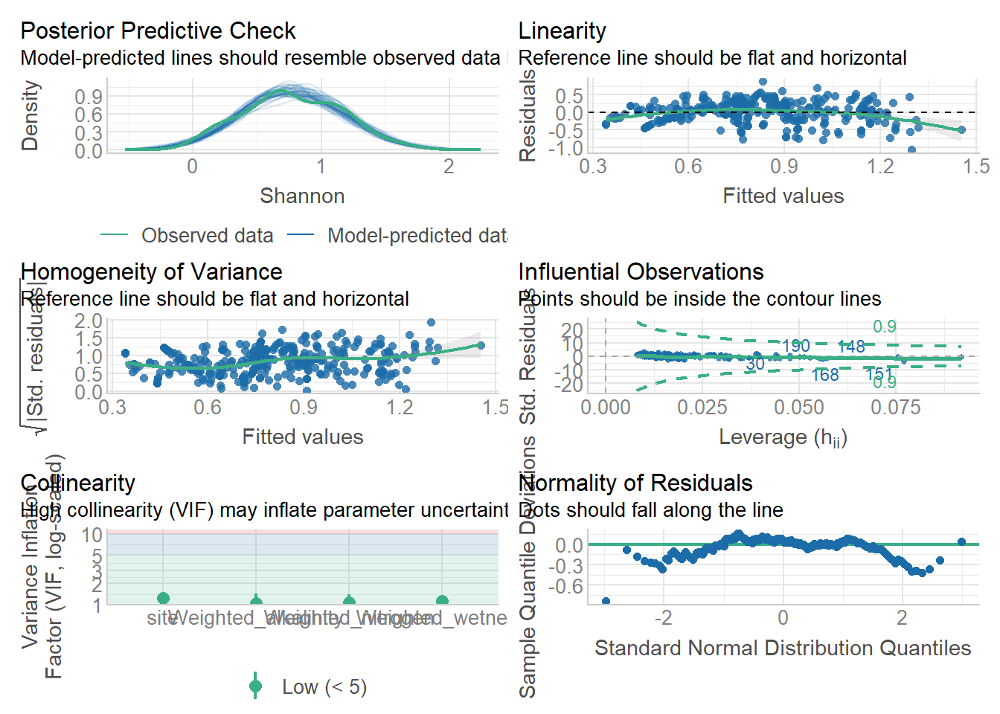
plot(mod11)
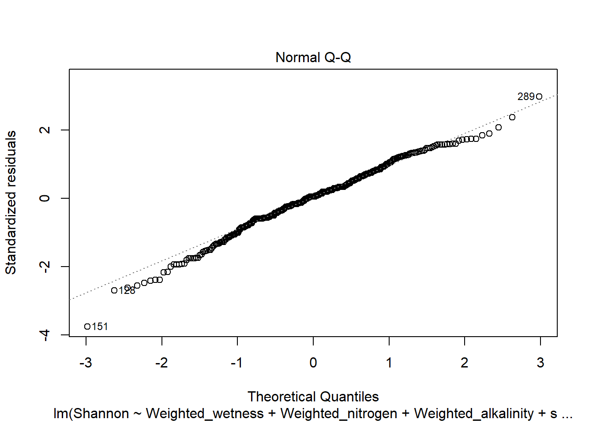
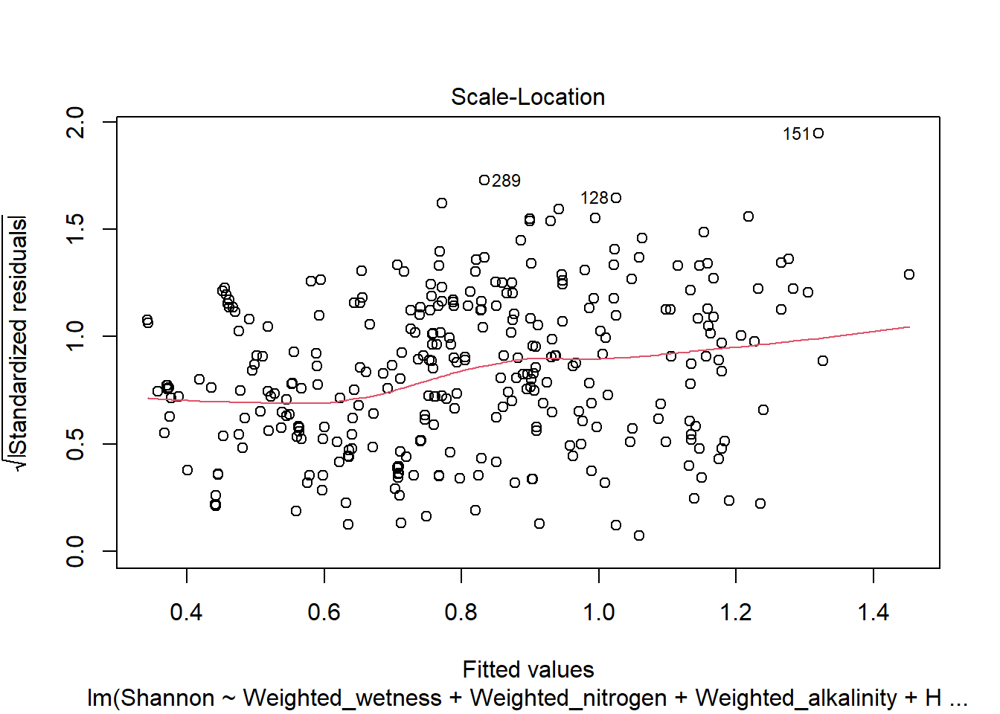
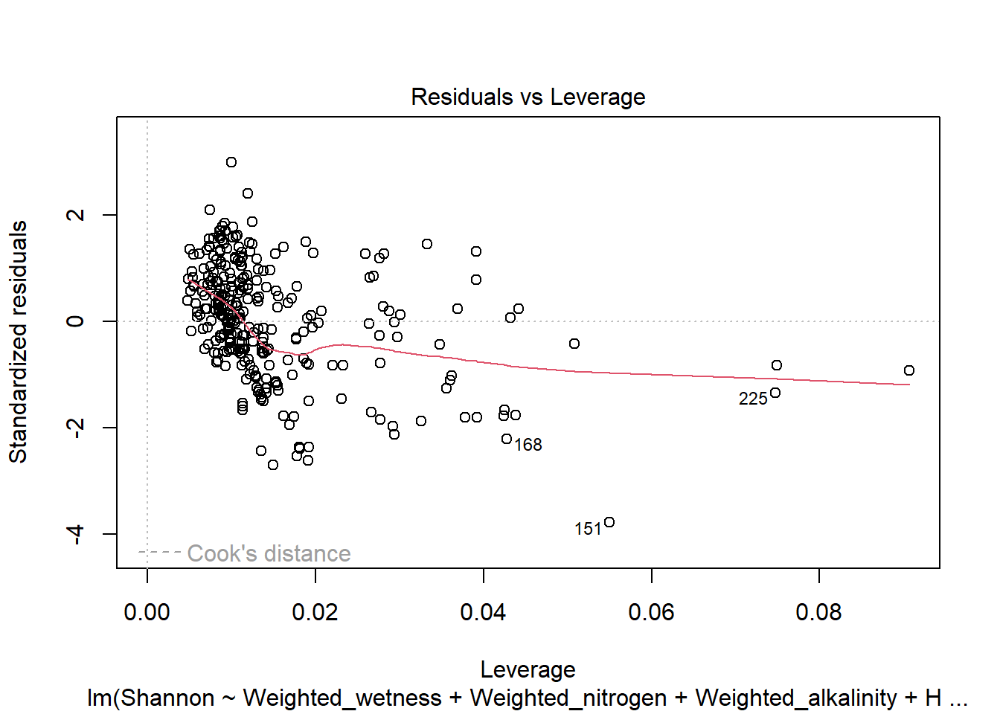
#plots sehen okay aus
summary(mod11)
Call:
lm(formula = Shannon ~ Weighted_wetness + Weighted_nitrogen +
Weighted_alkalinity + Hoehe, data = merged_data)
Residuals:
Min 1Q Median 3Q Max
-1.09289 -0.17542 0.01465 0.19952 0.88197
Coefficients:
Estimate Std. Error t value Pr(>|t|)
(Intercept) -1.952429 0.927277 -2.106 0.035966 *
Weighted_wetness -0.080582 0.008911 -9.043 < 2e-16 ***
Weighted_nitrogen -0.101858 0.023476 -4.339 1.88e-05 ***
Weighted_alkalinity 0.191090 0.018299 10.443 < 2e-16 ***
Hoehe 0.008661 0.002544 3.405 0.000739 ***
---
Signif. codes: 0 '***' 0.001 '**' 0.01 '*' 0.05 '.' 0.1 ' ' 1
Residual standard error: 0.297 on 345 degrees of freedom
Multiple R-squared: 0.4011, Adjusted R-squared: 0.3941
F-statistic: 57.75 on 4 and 345 DF, p-value: < 2.2e-16#Shannon wird größer bei Trockenheit, Nährstoffarmut, höherer pH, höher im Gelände
#stärkster Faktor ph Estinate=0.19109010.3 Evenness
#|label: model evenness
#|output: false
mod12<-lm(Evenness ~ Weighted_light + Weighted_temperature + Weighted_wetness + Weighted_nitrogen + Weighted_alkalinity+ HL + ML + SL + TL + Hoehe, data = merged_data)
summary(mod12)
Call:
lm(formula = Evenness ~ Weighted_light + Weighted_temperature +
Weighted_wetness + Weighted_nitrogen + Weighted_alkalinity +
HL + ML + SL + TL + Hoehe, data = merged_data)
Residuals:
Min 1Q Median 3Q Max
-0.58803 -0.13573 0.00846 0.14868 0.43619
Coefficients:
Estimate Std. Error t value Pr(>|t|)
(Intercept) 2.482e+00 7.723e-01 3.213 0.00144 **
Weighted_light 1.025e-01 2.246e-02 4.565 7.00e-06 ***
Weighted_temperature -3.039e-02 1.536e-02 -1.979 0.04867 *
Weighted_wetness -3.915e-02 1.187e-02 -3.297 0.00108 **
Weighted_nitrogen -1.261e-01 2.916e-02 -4.324 2.02e-05 ***
Weighted_alkalinity 1.360e-01 2.095e-02 6.491 3.05e-10 ***
HL 1.122e-03 6.614e-04 1.696 0.09080 .
ML 6.437e-05 7.380e-04 0.087 0.93055
SL -1.102e-03 9.243e-04 -1.192 0.23418
TL -5.707e-04 9.999e-04 -0.571 0.56855
Hoehe -6.588e-03 2.178e-03 -3.025 0.00268 **
---
Signif. codes: 0 '***' 0.001 '**' 0.01 '*' 0.05 '.' 0.1 ' ' 1
Residual standard error: 0.2072 on 336 degrees of freedom
(3 Beobachtungen als fehlend gelöscht)
Multiple R-squared: 0.2846, Adjusted R-squared: 0.2633
F-statistic: 13.36 on 10 and 336 DF, p-value: < 2.2e-16mod13<-update(mod12,~.-ML)
anova(mod12,mod13)Analysis of Variance Table
Model 1: Evenness ~ Weighted_light + Weighted_temperature + Weighted_wetness +
Weighted_nitrogen + Weighted_alkalinity + HL + ML + SL +
TL + Hoehe
Model 2: Evenness ~ Weighted_light + Weighted_temperature + Weighted_wetness +
Weighted_nitrogen + Weighted_alkalinity + HL + SL + TL +
Hoehe
Res.Df RSS Df Sum of Sq F Pr(>F)
1 336 14.425
2 337 14.425 -1 -0.0003266 0.0076 0.9305#p=0.9305
summary(mod13)
Call:
lm(formula = Evenness ~ Weighted_light + Weighted_temperature +
Weighted_wetness + Weighted_nitrogen + Weighted_alkalinity +
HL + SL + TL + Hoehe, data = merged_data)
Residuals:
Min 1Q Median 3Q Max
-0.58731 -0.13526 0.00781 0.14863 0.43546
Coefficients:
Estimate Std. Error t value Pr(>|t|)
(Intercept) 2.4981612 0.7473717 3.343 0.000923 ***
Weighted_light 0.1033957 0.0200939 5.146 4.54e-07 ***
Weighted_temperature -0.0302090 0.0151956 -1.988 0.047619 *
Weighted_wetness -0.0392326 0.0118121 -3.321 0.000994 ***
Weighted_nitrogen -0.1275546 0.0239310 -5.330 1.80e-07 ***
Weighted_alkalinity 0.1364880 0.0201969 6.758 6.17e-11 ***
HL 0.0011185 0.0006594 1.696 0.090747 .
SL -0.0011301 0.0008634 -1.309 0.191480
TL -0.0005892 0.0009757 -0.604 0.546357
Hoehe -0.0066392 0.0020927 -3.173 0.001650 **
---
Signif. codes: 0 '***' 0.001 '**' 0.01 '*' 0.05 '.' 0.1 ' ' 1
Residual standard error: 0.2069 on 337 degrees of freedom
(3 Beobachtungen als fehlend gelöscht)
Multiple R-squared: 0.2846, Adjusted R-squared: 0.2654
F-statistic: 14.89 on 9 and 337 DF, p-value: < 2.2e-16mod14<- update(mod13,~.-TL)
anova(mod13, mod14)Analysis of Variance Table
Model 1: Evenness ~ Weighted_light + Weighted_temperature + Weighted_wetness +
Weighted_nitrogen + Weighted_alkalinity + HL + SL + TL +
Hoehe
Model 2: Evenness ~ Weighted_light + Weighted_temperature + Weighted_wetness +
Weighted_nitrogen + Weighted_alkalinity + HL + SL + Hoehe
Res.Df RSS Df Sum of Sq F Pr(>F)
1 337 14.425
2 338 14.441 -1 -0.015608 0.3646 0.5464#p=0.5464
summary(mod14)
Call:
lm(formula = Evenness ~ Weighted_light + Weighted_temperature +
Weighted_wetness + Weighted_nitrogen + Weighted_alkalinity +
HL + SL + Hoehe, data = merged_data)
Residuals:
Min 1Q Median 3Q Max
-0.58695 -0.13214 0.00983 0.14890 0.42946
Coefficients:
Estimate Std. Error t value Pr(>|t|)
(Intercept) 2.4929163 0.7466185 3.339 0.000935 ***
Weighted_light 0.0982506 0.0181807 5.404 1.23e-07 ***
Weighted_temperature -0.0298894 0.0151721 -1.970 0.049651 *
Weighted_wetness -0.0346163 0.0089960 -3.848 0.000142 ***
Weighted_nitrogen -0.1239728 0.0231624 -5.352 1.61e-07 ***
Weighted_alkalinity 0.1363520 0.0201767 6.758 6.15e-11 ***
HL 0.0010450 0.0006474 1.614 0.107451
SL -0.0010910 0.0008602 -1.268 0.205560
Hoehe -0.0066156 0.0020904 -3.165 0.001693 **
---
Signif. codes: 0 '***' 0.001 '**' 0.01 '*' 0.05 '.' 0.1 ' ' 1
Residual standard error: 0.2067 on 338 degrees of freedom
(3 Beobachtungen als fehlend gelöscht)
Multiple R-squared: 0.2838, Adjusted R-squared: 0.2668
F-statistic: 16.74 on 8 and 338 DF, p-value: < 2.2e-16mod15<-update(mod14,~.-SL)
anova(mod14, mod15)Analysis of Variance Table
Model 1: Evenness ~ Weighted_light + Weighted_temperature + Weighted_wetness +
Weighted_nitrogen + Weighted_alkalinity + HL + SL + Hoehe
Model 2: Evenness ~ Weighted_light + Weighted_temperature + Weighted_wetness +
Weighted_nitrogen + Weighted_alkalinity + HL + Hoehe
Res.Df RSS Df Sum of Sq F Pr(>F)
1 338 14.441
2 339 14.510 -1 -0.068728 1.6086 0.2056#p=0.2056
summary(mod15)
Call:
lm(formula = Evenness ~ Weighted_light + Weighted_temperature +
Weighted_wetness + Weighted_nitrogen + Weighted_alkalinity +
HL + Hoehe, data = merged_data)
Residuals:
Min 1Q Median 3Q Max
-0.57597 -0.13025 0.00576 0.14611 0.43416
Coefficients:
Estimate Std. Error t value Pr(>|t|)
(Intercept) 2.4211460 0.7451390 3.249 0.001273 **
Weighted_light 0.1000447 0.0181419 5.515 6.94e-08 ***
Weighted_temperature -0.0300253 0.0151853 -1.977 0.048822 *
Weighted_wetness -0.0330197 0.0089154 -3.704 0.000248 ***
Weighted_nitrogen -0.1187363 0.0228119 -5.205 3.37e-07 ***
Weighted_alkalinity 0.1327614 0.0199950 6.640 1.25e-10 ***
HL 0.0009903 0.0006466 1.532 0.126565
Hoehe -0.0064903 0.0020899 -3.106 0.002060 **
---
Signif. codes: 0 '***' 0.001 '**' 0.01 '*' 0.05 '.' 0.1 ' ' 1
Residual standard error: 0.2069 on 339 degrees of freedom
(3 Beobachtungen als fehlend gelöscht)
Multiple R-squared: 0.2804, Adjusted R-squared: 0.2655
F-statistic: 18.87 on 7 and 339 DF, p-value: < 2.2e-16mod16<-update(mod15,~.-HL)
anova(mod15, mod16)Analysis of Variance Table
Model 1: Evenness ~ Weighted_light + Weighted_temperature + Weighted_wetness +
Weighted_nitrogen + Weighted_alkalinity + HL + Hoehe
Model 2: Evenness ~ Weighted_light + Weighted_temperature + Weighted_wetness +
Weighted_nitrogen + Weighted_alkalinity + Hoehe
Res.Df RSS Df Sum of Sq F Pr(>F)
1 339 14.51
2 340 14.61 -1 -0.1004 2.3457 0.1266#p=0.1266
summary(mod16)
Call:
lm(formula = Evenness ~ Weighted_light + Weighted_temperature +
Weighted_wetness + Weighted_nitrogen + Weighted_alkalinity +
Hoehe, data = merged_data)
Residuals:
Min 1Q Median 3Q Max
-0.59361 -0.12697 0.00381 0.13922 0.41808
Coefficients:
Estimate Std. Error t value Pr(>|t|)
(Intercept) 2.879900 0.683632 4.213 3.24e-05 ***
Weighted_light 0.098628 0.018154 5.433 1.06e-07 ***
Weighted_temperature -0.027982 0.015156 -1.846 0.065729 .
Weighted_wetness -0.033249 0.008932 -3.723 0.000231 ***
Weighted_nitrogen -0.096012 0.017361 -5.530 6.39e-08 ***
Weighted_alkalinity 0.124556 0.019302 6.453 3.78e-10 ***
Hoehe -0.007656 0.001950 -3.926 0.000105 ***
---
Signif. codes: 0 '***' 0.001 '**' 0.01 '*' 0.05 '.' 0.1 ' ' 1
Residual standard error: 0.2073 on 340 degrees of freedom
(3 Beobachtungen als fehlend gelöscht)
Multiple R-squared: 0.2754, Adjusted R-squared: 0.2626
F-statistic: 21.54 on 6 and 340 DF, p-value: < 2.2e-16mod17<-update(mod16,~.-Weighted_temperature)
anova(mod16, mod17)Analysis of Variance Table
Model 1: Evenness ~ Weighted_light + Weighted_temperature + Weighted_wetness +
Weighted_nitrogen + Weighted_alkalinity + Hoehe
Model 2: Evenness ~ Weighted_light + Weighted_wetness + Weighted_nitrogen +
Weighted_alkalinity + Hoehe
Res.Df RSS Df Sum of Sq F Pr(>F)
1 340 14.610
2 341 14.757 -1 -0.14647 3.4085 0.06573 .
---
Signif. codes: 0 '***' 0.001 '**' 0.01 '*' 0.05 '.' 0.1 ' ' 1#p=0.06573
summary(mod17)
Call:
lm(formula = Evenness ~ Weighted_light + Weighted_wetness + Weighted_nitrogen +
Weighted_alkalinity + Hoehe, data = merged_data)
Residuals:
Min 1Q Median 3Q Max
-0.60584 -0.13008 0.00698 0.14314 0.42327
Coefficients:
Estimate Std. Error t value Pr(>|t|)
(Intercept) 3.096492 0.675865 4.582 6.48e-06 ***
Weighted_light 0.093314 0.017988 5.188 3.66e-07 ***
Weighted_wetness -0.036580 0.008779 -4.167 3.92e-05 ***
Weighted_nitrogen -0.087279 0.016764 -5.207 3.33e-07 ***
Weighted_alkalinity 0.098082 0.012966 7.564 3.66e-13 ***
Hoehe -0.008149 0.001939 -4.203 3.37e-05 ***
---
Signif. codes: 0 '***' 0.001 '**' 0.01 '*' 0.05 '.' 0.1 ' ' 1
Residual standard error: 0.208 on 341 degrees of freedom
(3 Beobachtungen als fehlend gelöscht)
Multiple R-squared: 0.2681, Adjusted R-squared: 0.2574
F-statistic: 24.99 on 5 and 341 DF, p-value: < 2.2e-16check_model(mod17)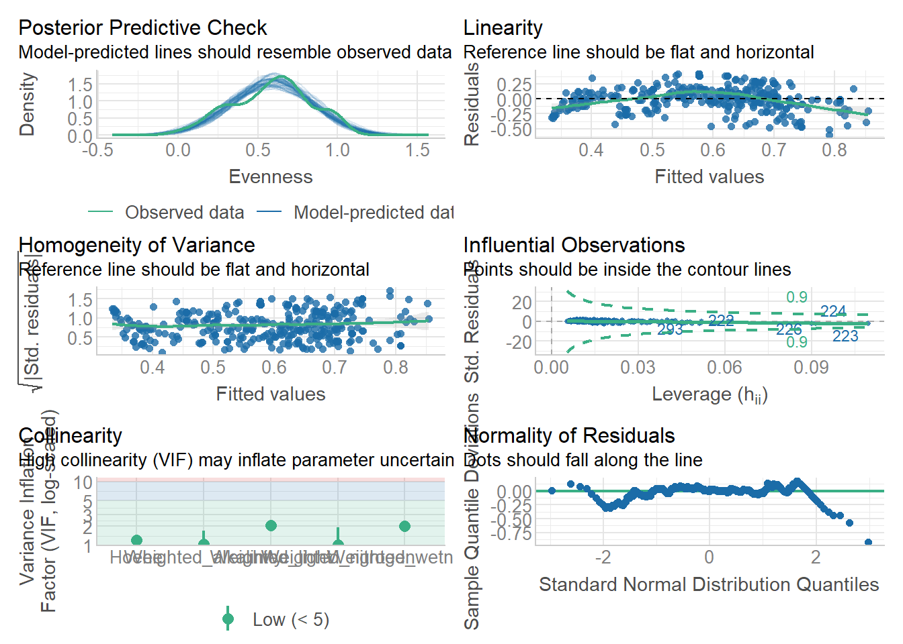
#sieht in ordnung aus
summary(mod17)
Call:
lm(formula = Evenness ~ Weighted_light + Weighted_wetness + Weighted_nitrogen +
Weighted_alkalinity + Hoehe, data = merged_data)
Residuals:
Min 1Q Median 3Q Max
-0.60584 -0.13008 0.00698 0.14314 0.42327
Coefficients:
Estimate Std. Error t value Pr(>|t|)
(Intercept) 3.096492 0.675865 4.582 6.48e-06 ***
Weighted_light 0.093314 0.017988 5.188 3.66e-07 ***
Weighted_wetness -0.036580 0.008779 -4.167 3.92e-05 ***
Weighted_nitrogen -0.087279 0.016764 -5.207 3.33e-07 ***
Weighted_alkalinity 0.098082 0.012966 7.564 3.66e-13 ***
Hoehe -0.008149 0.001939 -4.203 3.37e-05 ***
---
Signif. codes: 0 '***' 0.001 '**' 0.01 '*' 0.05 '.' 0.1 ' ' 1
Residual standard error: 0.208 on 341 degrees of freedom
(3 Beobachtungen als fehlend gelöscht)
Multiple R-squared: 0.2681, Adjusted R-squared: 0.2574
F-statistic: 24.99 on 5 and 341 DF, p-value: < 2.2e-16#Evenness steigt bei mehr Licht, Trockenheit, Nährstoffarmut, höherer pH, niedrige Geländehöhe
#pH stärkster Faktor Estimate =0.09808210.4 Sukzessionszeiger
#|label: model sukzessionszeiger
#|output: false
mod18<-lm(Sukzessionszeiger ~ Weighted_light + Weighted_temperature + Weighted_wetness + Weighted_nitrogen + Weighted_alkalinity+ HL + ML + SL + TL + Hoehe, data = merged_data)
summary(mod18)
Call:
lm(formula = Sukzessionszeiger ~ Weighted_light + Weighted_temperature +
Weighted_wetness + Weighted_nitrogen + Weighted_alkalinity +
HL + ML + SL + TL + Hoehe, data = merged_data)
Residuals:
Min 1Q Median 3Q Max
-33.112 -3.292 -0.623 2.661 57.458
Coefficients:
Estimate Std. Error t value Pr(>|t|)
(Intercept) -53.71315 35.49286 -1.513 0.1311
Weighted_light -4.21908 1.03133 -4.091 5.37e-05 ***
Weighted_temperature 6.75809 0.70609 9.571 < 2e-16 ***
Weighted_wetness -0.73007 0.54582 -1.338 0.1819
Weighted_nitrogen -0.17882 1.34135 -0.133 0.8940
Weighted_alkalinity -1.97955 0.96178 -2.058 0.0403 *
HL 0.13512 0.03033 4.455 1.14e-05 ***
ML -0.05762 0.03391 -1.699 0.0902 .
SL 0.83167 0.04253 19.553 < 2e-16 ***
TL 0.03826 0.04598 0.832 0.4059
Hoehe 0.21760 0.10007 2.175 0.0304 *
---
Signif. codes: 0 '***' 0.001 '**' 0.01 '*' 0.05 '.' 0.1 ' ' 1
Residual standard error: 9.535 on 339 degrees of freedom
Multiple R-squared: 0.7159, Adjusted R-squared: 0.7075
F-statistic: 85.42 on 10 and 339 DF, p-value: < 2.2e-16mod19<-update(mod18,~.-Weighted_nitrogen)
anova(mod18, mod19)Analysis of Variance Table
Model 1: Sukzessionszeiger ~ Weighted_light + Weighted_temperature + Weighted_wetness +
Weighted_nitrogen + Weighted_alkalinity + HL + ML + SL +
TL + Hoehe
Model 2: Sukzessionszeiger ~ Weighted_light + Weighted_temperature + Weighted_wetness +
Weighted_alkalinity + HL + ML + SL + TL + Hoehe
Res.Df RSS Df Sum of Sq F Pr(>F)
1 339 30823
2 340 30824 -1 -1.6159 0.0178 0.894#p=0.894
summary(mod19)
Call:
lm(formula = Sukzessionszeiger ~ Weighted_light + Weighted_temperature +
Weighted_wetness + Weighted_alkalinity + HL + ML + SL + TL +
Hoehe, data = merged_data)
Residuals:
Min 1Q Median 3Q Max
-33.254 -3.268 -0.623 2.686 57.364
Coefficients:
Estimate Std. Error t value Pr(>|t|)
(Intercept) -53.31293 35.31454 -1.510 0.1321
Weighted_light -4.25945 0.98445 -4.327 1.99e-05 ***
Weighted_temperature 6.77068 0.69873 9.690 < 2e-16 ***
Weighted_wetness -0.72110 0.54088 -1.333 0.1834
Weighted_alkalinity -2.02778 0.88987 -2.279 0.0233 *
HL 0.13304 0.02598 5.121 5.10e-07 ***
ML -0.05504 0.02782 -1.978 0.0487 *
SL 0.83365 0.03982 20.936 < 2e-16 ***
TL 0.04022 0.04351 0.924 0.3559
Hoehe 0.21659 0.09964 2.174 0.0304 *
---
Signif. codes: 0 '***' 0.001 '**' 0.01 '*' 0.05 '.' 0.1 ' ' 1
Residual standard error: 9.522 on 340 degrees of freedom
Multiple R-squared: 0.7159, Adjusted R-squared: 0.7083
F-statistic: 95.18 on 9 and 340 DF, p-value: < 2.2e-16mod20<-update(mod19,~.-TL)
anova(mod19, mod20)Analysis of Variance Table
Model 1: Sukzessionszeiger ~ Weighted_light + Weighted_temperature + Weighted_wetness +
Weighted_alkalinity + HL + ML + SL + TL + Hoehe
Model 2: Sukzessionszeiger ~ Weighted_light + Weighted_temperature + Weighted_wetness +
Weighted_alkalinity + HL + ML + SL + Hoehe
Res.Df RSS Df Sum of Sq F Pr(>F)
1 340 30824
2 341 30902 -1 -77.466 0.8545 0.3559#p=0.3559
summary(mod20)
Call:
lm(formula = Sukzessionszeiger ~ Weighted_light + Weighted_temperature +
Weighted_wetness + Weighted_alkalinity + HL + ML + SL + Hoehe,
data = merged_data)
Residuals:
Min 1Q Median 3Q Max
-32.743 -3.485 -0.668 2.744 57.221
Coefficients:
Estimate Std. Error t value Pr(>|t|)
(Intercept) -50.21217 35.14737 -1.429 0.1540
Weighted_light -3.88718 0.89812 -4.328 1.98e-05 ***
Weighted_temperature 6.79562 0.69806 9.735 < 2e-16 ***
Weighted_wetness -1.04466 0.41226 -2.534 0.0117 *
Weighted_alkalinity -2.07598 0.88815 -2.337 0.0200 *
HL 0.13317 0.02597 5.127 4.94e-07 ***
ML -0.05606 0.02779 -2.017 0.0445 *
SL 0.83230 0.03978 20.921 < 2e-16 ***
Hoehe 0.20699 0.09907 2.089 0.0374 *
---
Signif. codes: 0 '***' 0.001 '**' 0.01 '*' 0.05 '.' 0.1 ' ' 1
Residual standard error: 9.519 on 341 degrees of freedom
Multiple R-squared: 0.7152, Adjusted R-squared: 0.7085
F-statistic: 107 on 8 and 341 DF, p-value: < 2.2e-16check_model(mod20)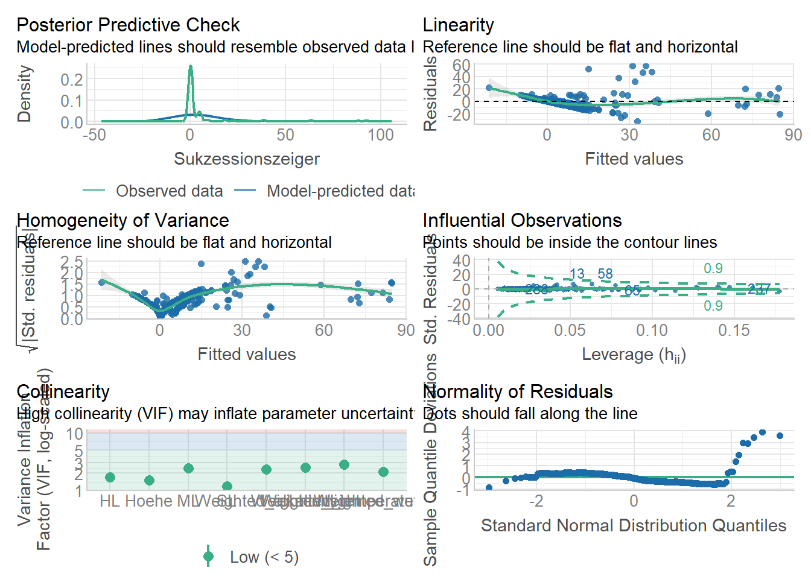
#sieht nicht so gut aus, ich teste mal log-transformation (log1p macht immer +1 um 0 zu vermeiden)#|label: log1p
#|output: false
mod21<-lm(log1p(Sukzessionszeiger) ~ Weighted_light + Weighted_temperature + Weighted_wetness + Weighted_alkalinity + HL + ML + SL + Hoehe,data = merged_data)
summary(mod21)
Call:
lm(formula = log1p(Sukzessionszeiger) ~ Weighted_light + Weighted_temperature +
Weighted_wetness + Weighted_alkalinity + HL + ML + SL + Hoehe,
data = merged_data)
Residuals:
Min 1Q Median 3Q Max
-2.0923 -0.3872 -0.1887 0.4377 2.4687
Coefficients:
Estimate Std. Error t value Pr(>|t|)
(Intercept) -2.127530 2.675470 -0.795 0.427051
Weighted_light -0.385493 0.068366 -5.639 3.60e-08 ***
Weighted_temperature 0.497165 0.053137 9.356 < 2e-16 ***
Weighted_wetness -0.106092 0.031382 -3.381 0.000807 ***
Weighted_alkalinity -0.084279 0.067608 -1.247 0.213404
HL 0.004097 0.001977 2.072 0.038989 *
ML -0.011539 0.002116 -5.454 9.47e-08 ***
SL 0.039372 0.003028 13.001 < 2e-16 ***
Hoehe 0.015550 0.007542 2.062 0.039973 *
---
Signif. codes: 0 '***' 0.001 '**' 0.01 '*' 0.05 '.' 0.1 ' ' 1
Residual standard error: 0.7246 on 341 degrees of freedom
Multiple R-squared: 0.658, Adjusted R-squared: 0.6499
F-statistic: 82 on 8 and 341 DF, p-value: < 2.2e-16mod22<-update(mod21,~.-Weighted_alkalinity)
anova(mod21, mod22)Analysis of Variance Table
Model 1: log1p(Sukzessionszeiger) ~ Weighted_light + Weighted_temperature +
Weighted_wetness + Weighted_alkalinity + HL + ML + SL + Hoehe
Model 2: log1p(Sukzessionszeiger) ~ Weighted_light + Weighted_temperature +
Weighted_wetness + HL + ML + SL + Hoehe
Res.Df RSS Df Sum of Sq F Pr(>F)
1 341 179.06
2 342 179.88 -1 -0.816 1.554 0.2134#p=0.2134
summary(mod22)
Call:
lm(formula = log1p(Sukzessionszeiger) ~ Weighted_light + Weighted_temperature +
Weighted_wetness + HL + ML + SL + Hoehe, data = merged_data)
Residuals:
Min 1Q Median 3Q Max
-2.1059 -0.3780 -0.1817 0.4329 2.4349
Coefficients:
Estimate Std. Error t value Pr(>|t|)
(Intercept) -2.273030 2.675087 -0.850 0.396085
Weighted_light -0.366181 0.066642 -5.495 7.66e-08 ***
Weighted_temperature 0.453189 0.039770 11.395 < 2e-16 ***
Weighted_wetness -0.105773 0.031406 -3.368 0.000844 ***
HL 0.004268 0.001974 2.162 0.031305 *
ML -0.011706 0.002113 -5.540 6.05e-08 ***
SL 0.038977 0.003014 12.931 < 2e-16 ***
Hoehe 0.015459 0.007547 2.048 0.041296 *
---
Signif. codes: 0 '***' 0.001 '**' 0.01 '*' 0.05 '.' 0.1 ' ' 1
Residual standard error: 0.7252 on 342 degrees of freedom
Multiple R-squared: 0.6564, Adjusted R-squared: 0.6494
F-statistic: 93.34 on 7 and 342 DF, p-value: < 2.2e-16check_model(mod22)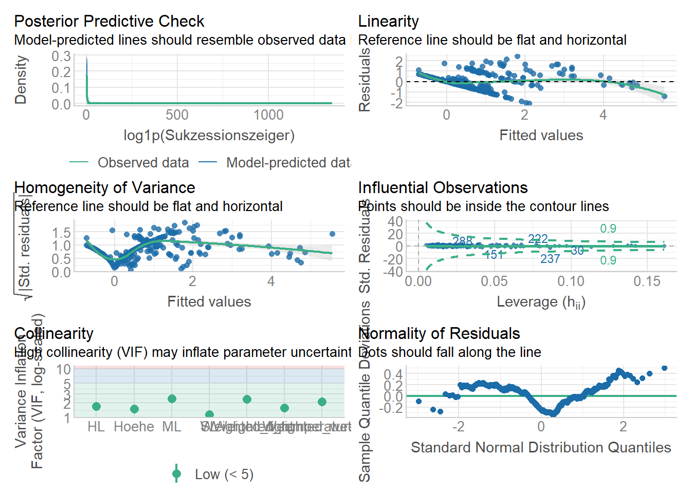
plot(mod22)


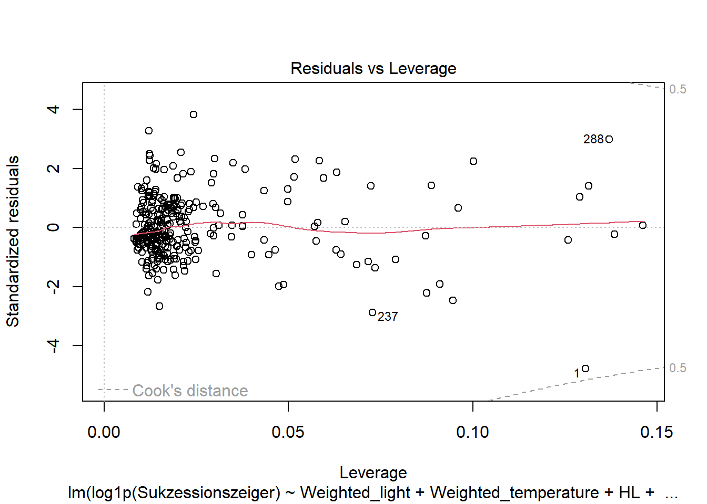
#|label: gam
#|output: false
# das hat auch nix verbessert, ich lasse das modell nochmal von vorne laufen als gam mit family=tweedie, da abhängige Variable stark rechtsschief
mod23<-gam(Sukzessionszeiger ~ Weighted_light + Weighted_temperature + Weighted_wetness + Weighted_nitrogen + Weighted_alkalinity+ HL + ML + SL + TL + Hoehe,family=tw, data = merged_data)
summary(mod23)
Family: Tweedie(p=1.547)
Link function: log
Formula:
Sukzessionszeiger ~ Weighted_light + Weighted_temperature + Weighted_wetness +
Weighted_nitrogen + Weighted_alkalinity + HL + ML + SL +
TL + Hoehe
Parametric coefficients:
Estimate Std. Error t value Pr(>|t|)
(Intercept) 12.1598746 6.7067827 1.813 0.070705 .
Weighted_light -1.1491796 0.1973956 -5.822 1.35e-08 ***
Weighted_temperature 0.8948959 0.1395730 6.412 4.83e-10 ***
Weighted_wetness -0.3202325 0.0820377 -3.903 0.000114 ***
Weighted_nitrogen 0.1159441 0.2067432 0.561 0.575296
Weighted_alkalinity -0.5473409 0.2194033 -2.495 0.013083 *
HL -0.0002674 0.0049109 -0.054 0.956610
ML -0.0318464 0.0063656 -5.003 9.09e-07 ***
SL 0.0370186 0.0044713 8.279 2.89e-15 ***
TL 0.0018354 0.0066155 0.277 0.781611
Hoehe -0.0060472 0.0184868 -0.327 0.743786
---
Signif. codes: 0 '***' 0.001 '**' 0.01 '*' 0.05 '.' 0.1 ' ' 1
R-sq.(adj) = -0.785 Deviance explained = 67.8%
-REML = 590.74 Scale est. = 4.3298 n = 350mod24<-update(mod23,~.-HL)
summary(mod24)
Family: Tweedie(p=1.546)
Link function: log
Formula:
Sukzessionszeiger ~ Weighted_light + Weighted_temperature + Weighted_wetness +
Weighted_nitrogen + Weighted_alkalinity + ML + SL + TL +
Hoehe
Parametric coefficients:
Estimate Std. Error t value Pr(>|t|)
(Intercept) 12.060415 6.520386 1.850 0.065232 .
Weighted_light -1.145859 0.194892 -5.879 9.84e-09 ***
Weighted_temperature 0.893586 0.137556 6.496 2.93e-10 ***
Weighted_wetness -0.320615 0.081514 -3.933 0.000102 ***
Weighted_nitrogen 0.110508 0.173979 0.635 0.525738
Weighted_alkalinity -0.544013 0.212097 -2.565 0.010748 *
ML -0.031763 0.006333 -5.016 8.53e-07 ***
SL 0.036975 0.004395 8.414 1.12e-15 ***
TL 0.001782 0.006508 0.274 0.784423
Hoehe -0.005853 0.018128 -0.323 0.746993
---
Signif. codes: 0 '***' 0.001 '**' 0.01 '*' 0.05 '.' 0.1 ' ' 1
R-sq.(adj) = -0.775 Deviance explained = 67.9%
-REML = 586.44 Scale est. = 4.3104 n = 350mod25<-update(mod24,~.-TL)
summary(mod25)
Family: Tweedie(p=1.545)
Link function: log
Formula:
Sukzessionszeiger ~ Weighted_light + Weighted_temperature + Weighted_wetness +
Weighted_nitrogen + Weighted_alkalinity + ML + SL + Hoehe
Parametric coefficients:
Estimate Std. Error t value Pr(>|t|)
(Intercept) 12.475476 6.372417 1.958 0.0511 .
Weighted_light -1.120165 0.175303 -6.390 5.45e-10 ***
Weighted_temperature 0.897607 0.134574 6.670 1.03e-10 ***
Weighted_wetness -0.335934 0.059358 -5.659 3.22e-08 ***
Weighted_nitrogen 0.087372 0.156430 0.559 0.5768
Weighted_alkalinity -0.539436 0.211144 -2.555 0.0111 *
ML -0.032470 0.006021 -5.393 1.30e-07 ***
SL 0.036426 0.004171 8.734 < 2e-16 ***
Hoehe -0.007092 0.017675 -0.401 0.6885
---
Signif. codes: 0 '***' 0.001 '**' 0.01 '*' 0.05 '.' 0.1 ' ' 1
R-sq.(adj) = -0.714 Deviance explained = 67.9%
-REML = 582.36 Scale est. = 4.2929 n = 350mod26<-update(mod25,~.-Hoehe)
summary(mod26)
Family: Tweedie(p=1.544)
Link function: log
Formula:
Sukzessionszeiger ~ Weighted_light + Weighted_temperature + Weighted_wetness +
Weighted_nitrogen + Weighted_alkalinity + ML + SL
Parametric coefficients:
Estimate Std. Error t value Pr(>|t|)
(Intercept) 9.916242 1.072348 9.247 < 2e-16 ***
Weighted_light -1.127083 0.170867 -6.596 1.60e-10 ***
Weighted_temperature 0.891023 0.133193 6.690 9.15e-11 ***
Weighted_wetness -0.335354 0.058067 -5.775 1.73e-08 ***
Weighted_nitrogen 0.099158 0.150690 0.658 0.5110
Weighted_alkalinity -0.539686 0.210413 -2.565 0.0107 *
ML -0.031372 0.005491 -5.714 2.41e-08 ***
SL 0.036891 0.003928 9.392 < 2e-16 ***
---
Signif. codes: 0 '***' 0.001 '**' 0.01 '*' 0.05 '.' 0.1 ' ' 1
R-sq.(adj) = -0.716 Deviance explained = 67.9%
-REML = 579.35 Scale est. = 4.2784 n = 350mod27<-update(mod26,~.-Weighted_nitrogen)
summary(mod27)
Family: Tweedie(p=1.544)
Link function: log
Formula:
Sukzessionszeiger ~ Weighted_light + Weighted_temperature + Weighted_wetness +
Weighted_alkalinity + ML + SL
Parametric coefficients:
Estimate Std. Error t value Pr(>|t|)
(Intercept) 9.872849 1.071435 9.215 < 2e-16 ***
Weighted_light -1.094643 0.164340 -6.661 1.08e-10 ***
Weighted_temperature 0.885005 0.131485 6.731 7.10e-11 ***
Weighted_wetness -0.337288 0.057669 -5.849 1.16e-08 ***
Weighted_alkalinity -0.510246 0.201859 -2.528 0.0119 *
ML -0.033352 0.004680 -7.126 6.13e-12 ***
SL 0.035643 0.003331 10.702 < 2e-16 ***
---
Signif. codes: 0 '***' 0.001 '**' 0.01 '*' 0.05 '.' 0.1 ' ' 1
R-sq.(adj) = -0.886 Deviance explained = 67.9%
-REML = 578.62 Scale est. = 4.2705 n = 350gam.check(mod27)
Method: REML Optimizer: outer newton
full convergence after 5 iterations.
Gradient range [-1.588918e-07,-9.082288e-08]
(score 578.6165 & scale 4.270541).
Hessian positive definite, eigenvalue range [86.22861,218.0844].
Model rank = 7 / 7 #bis auf response vs fitted sieht alles in ordnung aus, modell wird erstmal angenommen
summary(mod27)
Family: Tweedie(p=1.544)
Link function: log
Formula:
Sukzessionszeiger ~ Weighted_light + Weighted_temperature + Weighted_wetness +
Weighted_alkalinity + ML + SL
Parametric coefficients:
Estimate Std. Error t value Pr(>|t|)
(Intercept) 9.872849 1.071435 9.215 < 2e-16 ***
Weighted_light -1.094643 0.164340 -6.661 1.08e-10 ***
Weighted_temperature 0.885005 0.131485 6.731 7.10e-11 ***
Weighted_wetness -0.337288 0.057669 -5.849 1.16e-08 ***
Weighted_alkalinity -0.510246 0.201859 -2.528 0.0119 *
ML -0.033352 0.004680 -7.126 6.13e-12 ***
SL 0.035643 0.003331 10.702 < 2e-16 ***
---
Signif. codes: 0 '***' 0.001 '**' 0.01 '*' 0.05 '.' 0.1 ' ' 1
R-sq.(adj) = -0.886 Deviance explained = 67.9%
-REML = 578.62 Scale est. = 4.2705 n = 350#Sukzessionszeiger treten vermehrt auf bei Schatten, höheren Temperaturen, Trockenheit, niedriger pH, wenig Moose, viel Shrubs
#moose und shrubs logisch, da meiste sukzessionszeiger shrubs sind...
#stärkster einfluss licht Estimate = -1.094643
#schatten könnte zirkelschluss sein, da sukzessionszeiger meist shrubs, die beschatten umgebung -> kommen da vor, wo arten in ihrem schatten vorkommen
#zweitsträrkster einfluss Temperatur Estzimate=0.885005. Je wärmer desto mehr Sukzesinszeiger10.5 Moorart
#|label: model moorarten
#|output: false
mod28<- lm(Moorart ~Weighted_light + Weighted_temperature + Weighted_wetness + Weighted_nitrogen + Weighted_alkalinity+ HL + ML + SL + TL + Hoehe, data=merged_data)
summary(mod28)
Call:
lm(formula = Moorart ~ Weighted_light + Weighted_temperature +
Weighted_wetness + Weighted_nitrogen + Weighted_alkalinity +
HL + ML + SL + TL + Hoehe, data = merged_data)
Residuals:
Min 1Q Median 3Q Max
-57.226 -10.890 -0.154 9.946 93.996
Coefficients:
Estimate Std. Error t value Pr(>|t|)
(Intercept) 86.61712 66.36522 1.305 0.19272
Weighted_light 4.10537 1.92839 2.129 0.03398 *
Weighted_temperature -10.17575 1.32026 -7.707 1.43e-13 ***
Weighted_wetness 3.31201 1.02058 3.245 0.00129 **
Weighted_nitrogen -5.83571 2.50809 -2.327 0.02057 *
Weighted_alkalinity -0.18860 1.79836 -0.105 0.91654
HL 0.82596 0.05671 14.565 < 2e-16 ***
ML 0.96596 0.06340 15.236 < 2e-16 ***
SL 0.15942 0.07953 2.005 0.04581 *
TL -0.05998 0.08598 -0.698 0.48588
Hoehe -0.32475 0.18710 -1.736 0.08354 .
---
Signif. codes: 0 '***' 0.001 '**' 0.01 '*' 0.05 '.' 0.1 ' ' 1
Residual standard error: 17.83 on 339 degrees of freedom
Multiple R-squared: 0.7395, Adjusted R-squared: 0.7319
F-statistic: 96.26 on 10 and 339 DF, p-value: < 2.2e-16mod29<-update(mod28,~.-Weighted_alkalinity)
anova(mod28, mod29)Analysis of Variance Table
Model 1: Moorart ~ Weighted_light + Weighted_temperature + Weighted_wetness +
Weighted_nitrogen + Weighted_alkalinity + HL + ML + SL +
TL + Hoehe
Model 2: Moorart ~ Weighted_light + Weighted_temperature + Weighted_wetness +
Weighted_nitrogen + HL + ML + SL + TL + Hoehe
Res.Df RSS Df Sum of Sq F Pr(>F)
1 339 107762
2 340 107766 -1 -3.4961 0.011 0.9165#p=0.9165
summary(mod29)
Call:
lm(formula = Moorart ~ Weighted_light + Weighted_temperature +
Weighted_wetness + Weighted_nitrogen + HL + ML + SL + TL +
Hoehe, data = merged_data)
Residuals:
Min 1Q Median 3Q Max
-57.211 -10.930 -0.205 9.989 93.905
Coefficients:
Estimate Std. Error t value Pr(>|t|)
(Intercept) 86.08136 66.07199 1.303 0.19351
Weighted_light 4.16039 1.85297 2.245 0.02539 *
Weighted_temperature -10.26720 0.98984 -10.373 < 2e-16 ***
Weighted_wetness 3.31139 1.01908 3.249 0.00127 **
Weighted_nitrogen -5.93464 2.32053 -2.557 0.01098 *
HL 0.82743 0.05486 15.084 < 2e-16 ***
ML 0.96422 0.06112 15.777 < 2e-16 ***
SL 0.15759 0.07747 2.034 0.04272 *
TL -0.06060 0.08565 -0.708 0.47972
Hoehe -0.32425 0.18677 -1.736 0.08345 .
---
Signif. codes: 0 '***' 0.001 '**' 0.01 '*' 0.05 '.' 0.1 ' ' 1
Residual standard error: 17.8 on 340 degrees of freedom
Multiple R-squared: 0.7395, Adjusted R-squared: 0.7326
F-statistic: 107.3 on 9 and 340 DF, p-value: < 2.2e-16mod30<-update(mod29,~.-TL)
anova(mod29, mod30)Analysis of Variance Table
Model 1: Moorart ~ Weighted_light + Weighted_temperature + Weighted_wetness +
Weighted_nitrogen + HL + ML + SL + TL + Hoehe
Model 2: Moorart ~ Weighted_light + Weighted_temperature + Weighted_wetness +
Weighted_nitrogen + HL + ML + SL + Hoehe
Res.Df RSS Df Sum of Sq F Pr(>F)
1 340 107766
2 341 107924 -1 -158.67 0.5006 0.4797#p=0.4797
summary(mod30)
Call:
lm(formula = Moorart ~ Weighted_light + Weighted_temperature +
Weighted_wetness + Weighted_nitrogen + HL + ML + SL + Hoehe,
data = merged_data)
Residuals:
Min 1Q Median 3Q Max
-57.164 -10.878 -0.003 9.580 94.209
Coefficients:
Estimate Std. Error t value Pr(>|t|)
(Intercept) 82.88714 65.86929 1.258 0.2091
Weighted_light 3.55178 1.64002 2.166 0.0310 *
Weighted_temperature -10.30357 0.98778 -10.431 < 2e-16 ***
Weighted_wetness 3.77941 0.77467 4.879 1.64e-06 ***
Weighted_nitrogen -5.41328 2.19883 -2.462 0.0143 *
HL 0.82134 0.05414 15.172 < 2e-16 ***
ML 0.97297 0.05981 16.268 < 2e-16 ***
SL 0.16483 0.07674 2.148 0.0324 *
Hoehe -0.31417 0.18609 -1.688 0.0923 .
---
Signif. codes: 0 '***' 0.001 '**' 0.01 '*' 0.05 '.' 0.1 ' ' 1
Residual standard error: 17.79 on 341 degrees of freedom
Multiple R-squared: 0.7391, Adjusted R-squared: 0.733
F-statistic: 120.8 on 8 and 341 DF, p-value: < 2.2e-16mod31<- update(mod30,~.-Hoehe)
anova(mod30, mod31)Analysis of Variance Table
Model 1: Moorart ~ Weighted_light + Weighted_temperature + Weighted_wetness +
Weighted_nitrogen + HL + ML + SL + Hoehe
Model 2: Moorart ~ Weighted_light + Weighted_temperature + Weighted_wetness +
Weighted_nitrogen + HL + ML + SL
Res.Df RSS Df Sum of Sq F Pr(>F)
1 341 107924
2 342 108827 -1 -902.06 2.8502 0.09228 .
---
Signif. codes: 0 '***' 0.001 '**' 0.01 '*' 0.05 '.' 0.1 ' ' 1#p=0.09228
summary(mod31)
Call:
lm(formula = Moorart ~ Weighted_light + Weighted_temperature +
Weighted_wetness + Weighted_nitrogen + HL + ML + SL, data = merged_data)
Residuals:
Min 1Q Median 3Q Max
-59.021 -10.974 -0.319 10.341 96.015
Coefficients:
Estimate Std. Error t value Pr(>|t|)
(Intercept) -27.29100 8.94755 -3.050 0.00247 **
Weighted_light 2.45007 1.50866 1.624 0.10530
Weighted_temperature -10.68053 0.96482 -11.070 < 2e-16 ***
Weighted_wetness 4.19779 0.73594 5.704 2.53e-08 ***
Weighted_nitrogen -5.78809 2.19350 -2.639 0.00870 **
HL 0.85617 0.05019 17.060 < 2e-16 ***
ML 1.00102 0.05761 17.376 < 2e-16 ***
SL 0.18298 0.07619 2.402 0.01685 *
---
Signif. codes: 0 '***' 0.001 '**' 0.01 '*' 0.05 '.' 0.1 ' ' 1
Residual standard error: 17.84 on 342 degrees of freedom
Multiple R-squared: 0.737, Adjusted R-squared: 0.7316
F-statistic: 136.9 on 7 and 342 DF, p-value: < 2.2e-16mod32<- update(mod31,~.-Weighted_light)
anova(mod31, mod32)Analysis of Variance Table
Model 1: Moorart ~ Weighted_light + Weighted_temperature + Weighted_wetness +
Weighted_nitrogen + HL + ML + SL
Model 2: Moorart ~ Weighted_temperature + Weighted_wetness + Weighted_nitrogen +
HL + ML + SL
Res.Df RSS Df Sum of Sq F Pr(>F)
1 342 108827
2 343 109666 -1 -839.23 2.6374 0.1053#p=0.1053summary(mod32)
Call:
lm(formula = Moorart ~ Weighted_temperature + Weighted_wetness +
Weighted_nitrogen + HL + ML + SL, data = merged_data)
Residuals:
Min 1Q Median 3Q Max
-59.304 -10.920 -0.033 10.676 98.260
Coefficients:
Estimate Std. Error t value Pr(>|t|)
(Intercept) -14.89035 4.67506 -3.185 0.00158 **
Weighted_temperature -10.73163 0.96660 -11.102 < 2e-16 ***
Weighted_wetness 4.82122 0.62938 7.660 1.92e-13 ***
Weighted_nitrogen -5.31944 2.17962 -2.441 0.01517 *
HL 0.84798 0.05005 16.942 < 2e-16 ***
ML 1.02720 0.05544 18.528 < 2e-16 ***
SL 0.17663 0.07627 2.316 0.02115 *
---
Signif. codes: 0 '***' 0.001 '**' 0.01 '*' 0.05 '.' 0.1 ' ' 1
Residual standard error: 17.88 on 343 degrees of freedom
Multiple R-squared: 0.7349, Adjusted R-squared: 0.7303
F-statistic: 158.5 on 6 and 343 DF, p-value: < 2.2e-16check_model(mod32)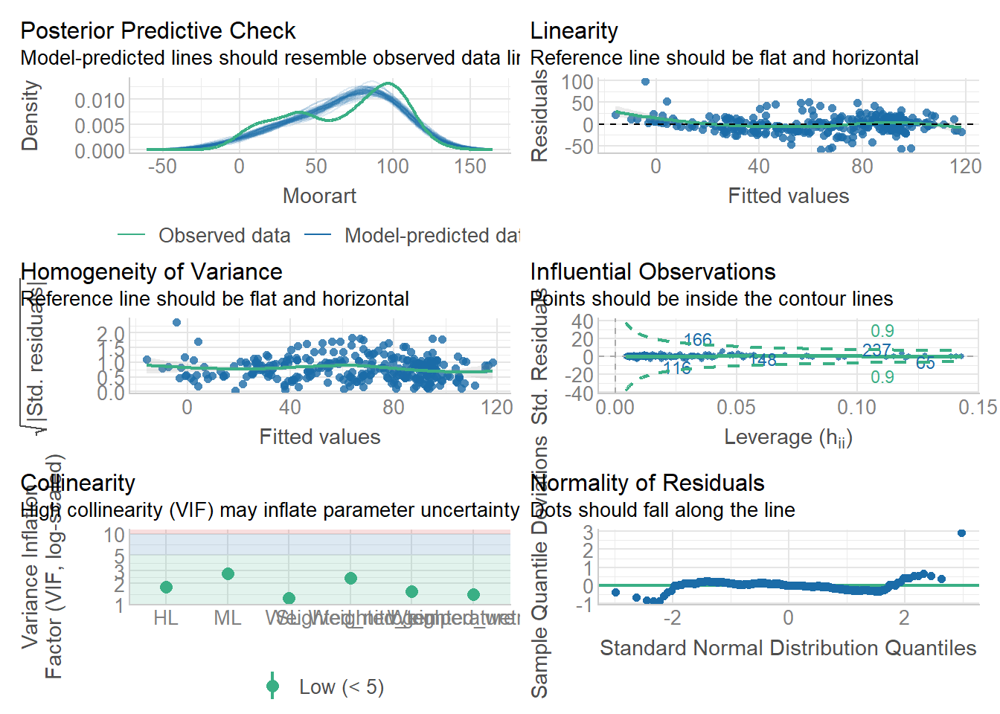
#Moorarten treten vermehrt auf bei Kälte, Feuchte, Nährstoffarmut, mehr Moose, etwas mehr herbs und shrubs
#makes sense :)10.6 Gehölze
#|label: model woody
hist(merged_data$woody)
#ich sollte wieder ein gam mit family=tweedie nutzen#|label: gam
#|output: false
mod33<-gam(woody ~Weighted_light + Weighted_temperature + Weighted_wetness + Weighted_nitrogen + Weighted_alkalinity+ HL + ML + SL + TL + Hoehe,family=tw, data=merged_data)
summary(mod33)
Family: Tweedie(p=1.578)
Link function: log
Formula:
woody ~ Weighted_light + Weighted_temperature + Weighted_wetness +
Weighted_nitrogen + Weighted_alkalinity + HL + ML + SL +
TL + Hoehe
Parametric coefficients:
Estimate Std. Error t value Pr(>|t|)
(Intercept) -4.300750 5.153537 -0.835 0.404573
Weighted_light -0.896278 0.154085 -5.817 1.39e-08 ***
Weighted_temperature -0.097825 0.100514 -0.973 0.331121
Weighted_wetness -0.303127 0.061574 -4.923 1.33e-06 ***
Weighted_nitrogen -0.324751 0.180768 -1.797 0.073303 .
Weighted_alkalinity 0.435637 0.144936 3.006 0.002847 **
HL 0.006397 0.003945 1.622 0.105832
ML -0.017315 0.004765 -3.634 0.000323 ***
SL 0.028451 0.003677 7.737 1.17e-13 ***
TL 0.024379 0.004220 5.777 1.72e-08 ***
Hoehe 0.036891 0.014233 2.592 0.009956 **
---
Signif. codes: 0 '***' 0.001 '**' 0.01 '*' 0.05 '.' 0.1 ' ' 1
R-sq.(adj) = -4.33 Deviance explained = 70.6%
-REML = 811.48 Scale est. = 3.585 n = 350mod34<-update(mod33,~.-Weighted_temperature)
summary(mod34)
Family: Tweedie(p=1.578)
Link function: log
Formula:
woody ~ Weighted_light + Weighted_wetness + Weighted_nitrogen +
Weighted_alkalinity + HL + ML + SL + TL + Hoehe
Parametric coefficients:
Estimate Std. Error t value Pr(>|t|)
(Intercept) -3.063681 4.996631 -0.613 0.540187
Weighted_light -0.908579 0.153053 -5.936 7.19e-09 ***
Weighted_wetness -0.319676 0.057321 -5.577 5.00e-08 ***
Weighted_nitrogen -0.239715 0.173439 -1.382 0.167840
Weighted_alkalinity 0.341550 0.102938 3.318 0.001005 **
HL 0.005225 0.003885 1.345 0.179550
ML -0.017117 0.004755 -3.600 0.000365 ***
SL 0.028792 0.003669 7.846 5.61e-14 ***
TL 0.024476 0.004206 5.820 1.36e-08 ***
Hoehe 0.033755 0.013926 2.424 0.015875 *
---
Signif. codes: 0 '***' 0.001 '**' 0.01 '*' 0.05 '.' 0.1 ' ' 1
R-sq.(adj) = -4.43 Deviance explained = 70.5%
-REML = 810.6 Scale est. = 3.5848 n = 350mod35<-update(mod34,~.-HL)
summary(mod35)
Family: Tweedie(p=1.579)
Link function: log
Formula:
woody ~ Weighted_light + Weighted_wetness + Weighted_nitrogen +
Weighted_alkalinity + ML + SL + TL + Hoehe
Parametric coefficients:
Estimate Std. Error t value Pr(>|t|)
(Intercept) -1.996343 4.895638 -0.408 0.683691
Weighted_light -0.963055 0.150762 -6.388 5.51e-10 ***
Weighted_wetness -0.305069 0.056268 -5.422 1.12e-07 ***
Weighted_nitrogen -0.116283 0.145496 -0.799 0.424721
Weighted_alkalinity 0.295856 0.100418 2.946 0.003438 **
ML -0.017024 0.004756 -3.580 0.000394 ***
SL 0.029354 0.003634 8.079 1.14e-14 ***
TL 0.026067 0.004054 6.431 4.29e-10 ***
Hoehe 0.031969 0.013779 2.320 0.020921 *
---
Signif. codes: 0 '***' 0.001 '**' 0.01 '*' 0.05 '.' 0.1 ' ' 1
R-sq.(adj) = -3.9 Deviance explained = 70.3%
-REML = 806.85 Scale est. = 3.5948 n = 350mod36<-update(mod35,~.-Weighted_nitrogen)
summary(mod36)
Family: Tweedie(p=1.579)
Link function: log
Formula:
woody ~ Weighted_light + Weighted_wetness + Weighted_alkalinity +
ML + SL + TL + Hoehe
Parametric coefficients:
Estimate Std. Error t value Pr(>|t|)
(Intercept) -3.035434 4.749845 -0.639 0.523212
Weighted_light -0.999047 0.145174 -6.882 2.83e-11 ***
Weighted_wetness -0.291734 0.053835 -5.419 1.13e-07 ***
Weighted_alkalinity 0.271720 0.096906 2.804 0.005336 **
ML -0.014708 0.003811 -3.860 0.000136 ***
SL 0.030955 0.003061 10.112 < 2e-16 ***
TL 0.027552 0.003567 7.724 1.26e-13 ***
Hoehe 0.034739 0.013424 2.588 0.010068 *
---
Signif. codes: 0 '***' 0.001 '**' 0.01 '*' 0.05 '.' 0.1 ' ' 1
R-sq.(adj) = -4.28 Deviance explained = 70.3%
-REML = 806.16 Scale est. = 3.5915 n = 350gam.check(mod36)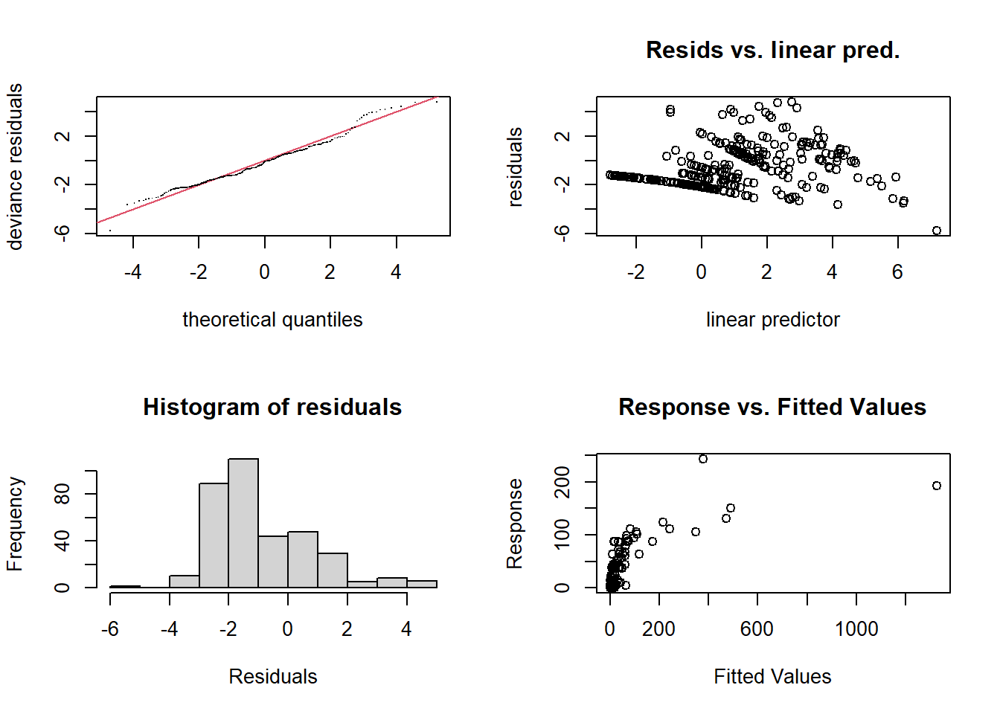
Method: REML Optimizer: outer newton
full convergence after 4 iterations.
Gradient range [-0.0003980938,-0.0002808168]
(score 806.1634 & scale 3.591525).
Hessian positive definite, eigenvalue range [119.2464,233.3989].
Model rank = 8 / 8 #response vs fitted sieht wieder komisch aus, der rest passt ganz gu
summary(mod36)
Family: Tweedie(p=1.579)
Link function: log
Formula:
woody ~ Weighted_light + Weighted_wetness + Weighted_alkalinity +
ML + SL + TL + Hoehe
Parametric coefficients:
Estimate Std. Error t value Pr(>|t|)
(Intercept) -3.035434 4.749845 -0.639 0.523212
Weighted_light -0.999047 0.145174 -6.882 2.83e-11 ***
Weighted_wetness -0.291734 0.053835 -5.419 1.13e-07 ***
Weighted_alkalinity 0.271720 0.096906 2.804 0.005336 **
ML -0.014708 0.003811 -3.860 0.000136 ***
SL 0.030955 0.003061 10.112 < 2e-16 ***
TL 0.027552 0.003567 7.724 1.26e-13 ***
Hoehe 0.034739 0.013424 2.588 0.010068 *
---
Signif. codes: 0 '***' 0.001 '**' 0.01 '*' 0.05 '.' 0.1 ' ' 1
R-sq.(adj) = -4.28 Deviance explained = 70.3%
-REML = 806.16 Scale est. = 3.5915 n = 350#Gehölze treten vermehrt auf bei Schatten, Trockenheit, höherem pH, weniger Moos, mehr shrubs, herbs und trees, höhere geländehöhe
# Schichten skönnten wieder zirkelschluss sein -> gehölze kommen in allen schichten außer moos vor